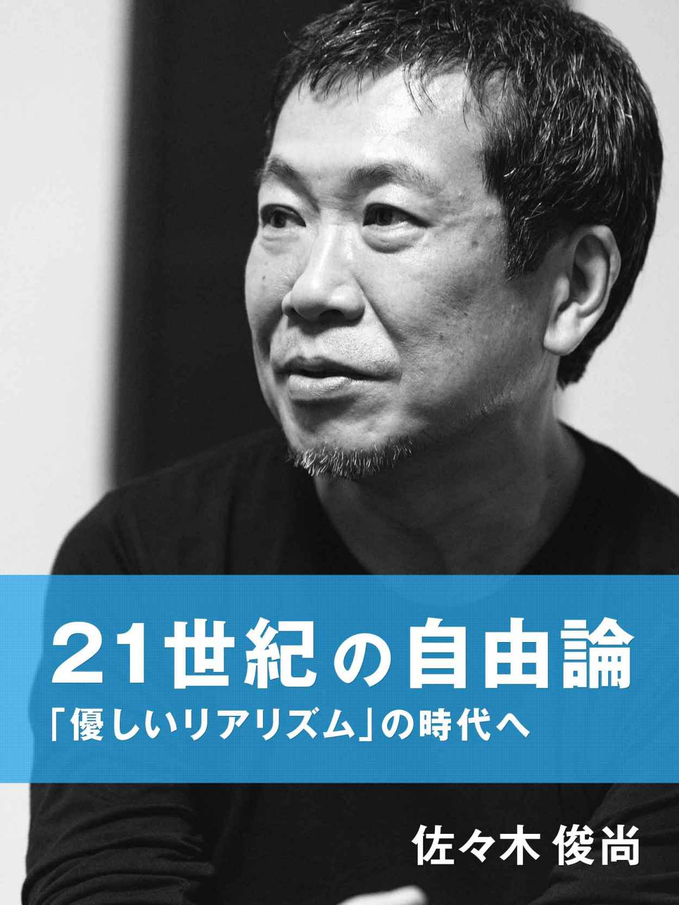

| 21世紀の自由論: 「優しいリアリズム」の時代へ (佐々木俊尚) | |
| 佐々木俊尚 | |
| Toshinao Sasaki (2015) | |

本作品を電子書籍版に収録するにあたり、一部の漢字が簡略体で表現されている場合があります。
21 世紀の自由論─「優しいリアリズム」の時代へ |
本書は、二十一世紀の世界における困難な問いかけをみなで考えるために書かれたものである。その問いかけとは、次のようなものだ。
「生存は保証されていないが、自由」と「自由ではないが、生存は保証されている」のどちらを選択するか。
二十世紀の成長の時代、私たちは豊かさを期待し、自由であることも期待し、いずれは豊かで自由な社会が実現すると期待してきた。しかし二十一世紀に入ってその期待はガラスのように砕け散った。いま日本社会には自由はあるが、貧しさが拡大し、豊かさの底が抜けてしまっている。格差は広がり、不平等が放置されている。失敗した人は自己責任を問われ、社会から退場を促される。こういう状況は、公正ではない。
誰もが「○○が悪い」「××が元凶だ」と正義を盾にして非難する。その刃の方向は右だったり左だったり、さまざまだ。どれもが正義だと主張する。しかし、正義と正義を競い合っても、得るものはない。必要なのは正義ではなく、みなが生き残ることではないのか。
貧しくても、自由を求めるのか？ それとも自由を犠牲にしても、豊かで安定した生活を望むのか？
この困難な問いかけに答えてくれる政治は、いまのところ存在しない。
*
本書はまず、「リベラル」という政治勢力がいま完全に崩壊しようとしているところから、 話をはじめたい。
この勢力は長い間にわたって、新聞やテレビ、雑誌で強い発言力を持ち、自民党政権に対するアンチテーゼとして、日本社会に強い影響を与えてきた。
この勢力はたとえば、原発に反対し、自衛隊の海外派遣に反対し、日本国憲法九条を護持し、「国民を戦場に送ろうとしている」と自民党政権の集団的自衛権行使や特定秘密保護法案に反対している。文化人で言えば、作家の大江健三郎氏や瀬戸内寂聴氏、音楽家の坂本龍一氏。学者では「九条の会」事務局長で東大教授の小森陽一氏、神戸女学院大学名誉教授の内田樹氏、経済学者の浜矩子氏。政治勢力としては福島瑞穂氏と社民党、生活の党と山本太郎となかまたち。元経産省官僚の古賀茂明氏。一緒にくくられることに抵抗のある人もいるだろうが、メディアの上で「リベラル勢力」という呼び方で視界に入ってくるのはそういう人たちだ。
しかしこの「リベラル」勢力は、いま完全にほころびている。
最大の問題は、彼らが知的な人たちに見えて、実は根本の部分に政治哲学を持っていないことだ。端的にいえば、日本の「リベラル」と呼ばれる政治努力はリベラリズムとはほとんど何の関係もない。彼らの拠って立つのは、ただ「反権力」という立ち位置のみである。
思想ではなく、立ち位置。
そもそも彼らは、もともとは「リベラル」とは呼ばれていなかったし、みずからも名乗っていなかった。戦後思想史の流れで言えば、彼らの原点は終戦間もないころにまでさかのぼる。戦争が終わり、若者たちは復員し、その中から丸山眞男や大塚久雄、竹内好といった戦後民主主義を代表する知識人たちが現れてきた。若かった彼らの多くは戦争で悲惨な体験をし、人間性が否定され、みずからも生き延びるために恥ずべき行為に手を染めな ければならなかったこともあった。その激しい悔いと憤りの中から、戦後民主主義と呼ばれるものが台頭してくる。彼らの最大のテーマは、大日本帝国と天皇制の呪縛からの脱 出だった。
しかし当初から彼らは「反権力」「反戦」「憲法護持」だったわけではない。たとえば戦 後民主主義を代表する政治学者丸山眞男は、自由で主体的な個人の確立を訴えたが、こうも語っている。「全国の各世帯にせめてピストルを一挺ずつ配給して、世帯主の責任において管理する」
国民を弾圧する国家の軍隊ではなく、国民みずからが武装する。それによって政府という権力にも対抗できる、レジスタンスの勢力となりうるとしたのだ。丸山たち戦後知識人は、天皇制とそれにもとづく軍国主義ではないかたちで、どのように愛国心を高め、新たな民主国家となりうるのかということを考えた。軍国主義と愛国心、民主主義。そういう三つの相克の中で、戦後民主主義はスタートしている。
戦後民主主義は社会党と共産党という二つの左派政党を軸として政治勢力となり、一九五〇年代後半までは拡大し続けた。しかし高度経済成長がはじまり、生活が安定してくると、左派勢力は伸び悩むようになる。日本人は社会主義の政権が誕生することを望んでおらず、彼らに求めたのは自民党が過度に右傾化しないようにという牽制の役割だけだった。つまり日本人は「戦前の軍国主義に戻るのは嫌だが、かといって社会主義にもなってほしくない」という中庸的な立ち位置を求めたのである。
これによって一党支配の自民党と、それに野党としての社会党が対立するという五十五年体制が確立することになる。これ以降、この左派勢力はもっぱら「革新」「進歩派」などと呼ばれるようになる。保守と革新、保守系文化人と進歩派文化人。
冷戦の時代に資本主義陣営と共産主義陣営があり、日本では前者を自民党と官僚、財界が体現し、後者を社会党や共産党などの革新政党が担っていると考えられていた。つまりは資本主義的な体制に対するアンチテーゼとしての革新、進歩派だったのだ。
このころはリベラルという単語はおもに米国の民主党勢力を指すものとして使われていただけで、日本国内の政治勢力にリベラルという冠をつけた事例は、当時の新聞記事を調べても非常に少ない。一九九一年の朝日新聞には、「リベラル(進歩的)」とカギカッコで説明が加えられている。
さらにいえば、リベラルという用語は日本では戦前の「オールド・リベラリスト」を指すものだった。知識人で言えば、安倍能成や和辻哲郎、田中耕太郎といった人たちである。彼らはたいていの場合帝大を出たエリートで、西洋風の生活スタイルを実現していた。アメリカやヨーロッパに留学していた者が多く、自由な気風を愛したが、同時に天皇制を擁護し、共産主義に反対する人たちだった。
富裕層であり上流階級だった彼らは、軍部に反発していた。当時は知識層と一般大衆が分離されていた階層社会の時代である。戦争がはじまって総力戦体制になり、知識層の収入が減り、労働者や農民の収入は増えた。「隣組」のような町ごとの制度が強化され、知的ではない軍部や一般大衆が大きな顔をするようになったことを、彼らは憎んだ。それは 平等社会のひとつの実現だったが、知識層にとっては屈辱以外の何ものでもなかったのだ。そういうエリート意識の強い層だったのである。彼らは戦後民主主義とはかなり違う思想の持ち主で、だから戦後になると「古い自由主義者たち」という意味で、オールド・リベラリストと呼ばれるようになったのだった。
この系譜には、戦後かなり経ってから、保守自民党の中でも比較的自由で進歩的な意見 を持つ政治家が、「保守リベラル」と呼ばれていたケースも連なっている。たとえば河野 洋平氏がそうだ。ロッキード事件のときに自民党を離れて新自由クラブを結成した河野氏や田川誠一氏、西岡武夫氏などが保守リベラルのポジションだった。
つまりもともとのリベラルと、いまの「リベラル」はまったく異なる。
ではなぜ、進歩派や革新が「リベラル」を名のるようになったのか。答えは明快だ。一 九九〇年代になって冷戦が終わり、共産主義の失敗が明らかになり、共産主義陣営を指す 革新や進歩派ということばが使いにくくなったからである。それで代替用語として、進歩的なイメージがある「リベラル」が転用されるようになったのだ。
リベラルが日本の政治で最初に公然と使われたのは、社会党の故山花貞夫氏が一九九五年、離党して新しい政治勢力を結成しようと「民主リベラル新党準備会」という名前の組織をつくったところからである。しかし山花氏の「リベラル新党」は結成予定のその日に阪神・淡路大震災が起きて頓挫して終わった。
以降、革新や進歩派は「リベラル」と名称替えして、いまにいたる。しかしその勢力は、かつての反自民党・反資本主義の立ち位置だったころとほとんど変化しておらず、政治哲学ではない「反権力」という立ち位置にのみ依拠している。
*
なぜこのような勢力が、日本の政治やマスメディアの中で大きな影響力を持つようになったのだろうか。
後ほどくわしく説明するけれども、最初にわかりやすく見渡しておこう。これは日本の 戦後メディア史に原因がある。一九五五年に保守合同があって自民党が成立し、「自民党 の一党支配と万年野党の社会党」という体制がスタートした。このころから高度経済成長 で日本は豊かになり、一九七〇年代には日本人の九割が「自分は中流」と認識する総中流社会が完成した。冷戦の時代、日本は米国の核の傘で安全保障は安定し、経済成長でだんだんと豊かになることを実感できた。
総中流の構造に、メディア空間も引きずられた。安定している社会を支えているのは、 自民党であり、財界であり、官僚である。つまり官僚と企業と政府自民党という三位一体が日本の総中流社会を支えるという堅固な基盤があり、そこでメディアや野党の側が何ができるかというと、「反権力」という監視役としての役割でしかなかった。
権力に対抗するメディアと、メディアが代弁する「市民」は自由と平等の擁護者であり、政府と財界のつくる安定的な基盤を批判するアウトサイダーの視点を持った人たちであるという「反権力」である。強者対弱者というような、非常にわかりやすい水戸黄門的な勧善懲悪の構図が色濃く抽出されていた。
しかし政治的・思想的な対立軸がこのような安易な勧善懲悪では、有効な議論はできない。なぜなら勧善懲悪では、市民やメディアが一方的な善になってしまい、しかしその善であるという思想的な背景は何もないからだ。単に反権力であるということでしか担保されていないのである。では反権力の側が政権を握り、責任を負ったらどうなるのか？ ということは誰も考えなかった。誰も考えなかったうちに時代が過ぎて自民党がいったん瓦解してしまい、うっかり反権力が政権をとってしまって何もないことが露呈してしまったのが、二〇〇九年以降の民主党政権だったといえるだろう。
政治思想の対立軸としては、ヨーロッパやアメリカでは完全自由主義(リバタリアニズム)、積極的自由主義(ニューリベラリズム)、コミュニタリアニズム(共同体主義)、コンサバティズム(保守主義)がある。さらにそこから派生し、民主主義を世界に広めていこうと考える新保守主義(ネオコンサバティブ、略称ネオコン)がある。リバタリアニズムは最近は新自由主義(ネオリベラリズム、通称ネオリベ)とも呼ばれている。
しかしこうした政治思想のマトリックスは、日本の政治やメディアの現場にはついに導入されることはなかった。さまざまな要素がからんでいるが、ひとつの理由として言われているのは、自民党と官僚がリベラリズム的な分配政策も、リバタリアニズム的な自由な経済活動も、両面でうまく進めていたということだ。この結果、自民党に対抗する社会党や新聞、テレビは有効な対立軸をつくることができず、ただ反対するだけの「反権力」に墜ちてしまったという見方である。そしてメディア空間は、ますます水戸黄門的な勧善懲悪の構図に流れ込んでいった。
それでも経済成長が続いているあいだは、この構図の問題点が浮上してくることはそれ ほどなかった。昭和のころ、「経済一流、政治二流」という言葉があった。私はここに「メディア二流」も加えて良いのではないかと思うが、経済成長のエンジンがきちんと駆動していれば、さまざまな問題が起きても不満はさほど生じない。メディアがエンターテインメント的に水戸黄門をやっていても、特に障害にはならなかったのではないかと考えている。
しかし反権力は思想ではなく、単なる立ち位置である。反権力ではない、独自の政治哲 学を生み出せなかったところに、日本の「リベラル」の不幸があったといえるだろう。そして二十一世紀になって、日本社会がグローバル化と格差化の波に翻弄されるようになると、「反権力」でしかない立ち位置は、完全に有効性を失ってしまったのだ。
*
ではどうすればいいのか。どう議論していけばいいのか。まず余計な草を刈り、地平への見通しを良くして、道路をどこに建設していくのか考えるのが、本書の目的である。
第一章ではまず、日本の「リベラル」がいかに欧米のリベラリズムと異なっており、異様なものであるかを説明する。日本の「リベラル」と、カギカッコをつけているのは、欧米のリベラルと区別するためだ。
続いて日本の保守がどのようになっており、最近「ネトウヨ」などと呼ばれている新しい右派・保守の持っている意味についても解説する。彼らは決して社会の底辺にいて憎悪をまき散らす「しんどそうな人たち」ではなく、新しい政治勢力である。
第二章では、世界に目を転じる。実は欧米の本来のリベラルも、グローバル化して富が世界に分散していく中で、もはや有効性を失っている。そしてリベラリズムに対抗する形で広がってきたコミュニタリアニズムも実は大きな壁にぶつかっているという驚くべき状況を見わたす。
そして第三章にいたって、この時代状況において私たちにできることは何かを根底から考え直し、私から二段階の未来像を提言したい。
そもそもリベラルとはなにか。
直訳すれば「自由」。だからリベラル思想のことをリベラリズム(自由主義)という。もともとは十七世紀のイギリスで、国王の支配に対抗する哲学として、「国民は王に生命まで支配されているのではなく、生まれながらに自由なのだ。自分の意思で生きることが認められているのだ」という考え方からスタートした。この古典的な自由の考え方は、「王の支配からの自由」「圧政からの自由」というようにつねに「～からの自由」であり、だから消極的自由と呼ばれる。
十九世紀に入ると、資本主義が進んで社会の格差が広がってくる。みんなが自由にビジネスをしているだけでは、格差が広がるばかりだ。だから格差を解消し、「みんなが安心して暮らせる自由」「文化的な生活を送る自由」という「～への自由」を実現しようということになる。これが積極的自由と言われるもので、この自由を実現して格差をなくすためには、政府が介入しなければならないと考えられるようになった。
現代のリベラルの基本理念は、こうだ。
「人々には生まれながらの自由がある。みんなが自分で人生を選択し、自由に生きていくためには、それを妨げるような格差や不公正さを取り除かなければならない」
しかし日本の「リベラル」と呼ばれる政治勢力は、このようなリベラルの理念とはかけ離れている。具体例を挙げよう。日本の「リベラル」は「国民を戦場に送られてしまう徴兵制が日本にできたらたいへんだ」と言う。
しかしリベラリズムと反戦は、直接は関係ない。たとえば北欧のノルウェーは二〇一五年から女性にも徴兵制をしくことにした。なぜか。それが男女平等であり、リベラルだからだ。
女性の徴兵制の法案をノルウェーの国会に提出したのは、リベラルの政権だ。ノルウェ ーはいまは戦争をしておらず、戦後に北大西洋条約機構(NATO)に加盟して以降も外 国の軍事基地を置かず、非核政策を採ってきた。兵士が不足しているわけでもない。おまけにずっと以前から、女性でも志願兵として軍に入ることができるようになっていて、いまは兵士の一割が女性だ。
そもそもいまの戦争は超高度に進化している。無人の爆撃機やロボットも開発されてい て、少人数の熟練され尽くした兵士が高性能の兵器を使うというやり方になっている。素人の徴兵が入ってきても、たいして役に立たない。訓練にもお金がかかりすぎる。多くの 国では徴兵制を廃止して、志願した者だけが軍に入れる志願制に移っている。 だからこの「女性徴兵法案」はあくまでも、男女平等や兵士たちの多様性を高めるため の政策なのだ。これこそが究極のリベラリズムだ。
日本の「リベラル」は「戦争反対」と言う。
しかし欧米のリベラルは、時に積極的に戦争をおこなう。イギリスのブレア元首相は、「人道的な戦争」ということを宣言した。「世界にはさまざまな暴力があり、人々は苦しんでいる。見て見ぬふりをしていることは許されない。暴力や圧政に苦しんでいる人たちを助け、自由を取り戻すためには、積極的な軍事介入も必要だ」
これは正戦論、リベラル帝国主義などとも呼ばれる考え方だ。人権や民主主義、自由を 重視するがゆえに、自国の国益だけを満たすための視野の狭い対外政策ではなく、他国で の人権侵害やテロ、内戦などを見過ごさないで介入していこうというものだ。見過ごして 放置すること自体が、リベラルの価値からすれば非倫理的だという考え方である。一九九 〇年代末にイギリスの首相に就任したトニー・ブレアはこの考え方を実行に移し、コソボ やアフガニスタンに軍事介入し、「倫理的な戦争」をおこなった。
リベラリズムは、世界中に蔓延する暴力とどう向き合うのかとつねに問い直す。そこから医療や教育などの人道支援だけをやろうという発想も生まれてくるし、ブレアのような人道的な介入という選択肢もありうるのだ。
日本の「リベラル」は、あくまでも戦争反対であり、徴兵制にも反対だ。反戦というのは立派な考えのひとつだが、それは政治哲学ではなく、リベラリズムとも直接は関係ない。
自衛隊の海外派遣や集団的自衛権に対して、「国民を戦場に送るのか」と反対している日本の「リベラル」は、正確には「一国平和主義」という考え方だ。つまりは「日本が平和ならそれで良い」という考え方である。これはこれでひとつの考え方だが、いまの欧米主導の国際社会では、そんな主張をしている国は他にはなく、受け入れられる可能性は低い。さらに彼らがことあるごとに「改憲反対」と主張し、護持しようとしている日本国憲法は、前文でこう謳っている。
「われらは、平和を維持し、専制と隷従、圧迫と偏狭を地上から永遠に除去しようと努 めてゐる国際社会において、名誉ある地位を占めたいと思ふ。われらは、全世界の国民が、 ひとしく恐怖と欠乏から免かれ、平和のうちに生存する権利を有することを確認する」
一国平和主義に徹してしまうことは、彼らの愛する日本国憲法の理念の否定にもつながってしまうのだ。
イギリスでは、ブレアの人道的介入に対して、保守派が「国内の利益を最優先すべきだ」 と批判した。保守派は一国平和主義的な思想を持つ傾向が強い。そうなると日本の「リベラル」は、欧米の保守派の意見に近いということさえ言えてしまう。
軍事介入や戦争の是非については、リベラルも保守もそのときどきの政治情勢に応じて さまざまな姿勢を見せる。リベラルは戦争に反対することもあれば、賛同することもある。保守も同じようにときに賛同し、ときに批判する。日本の「リベラル」のような「戦争絶 対反対」は、決してリベラリズムとイコールではない。
いまの日本で安全保障をめぐって揺れている「一国平和主義なのか、それとも積極的平 和主義なのか」という議論は、単に「国民を戦場に送るな」というような感情的議論で片 づけられる話ではない。どのような政治哲学に立ち、どのように国際情勢を分析し、どのように現状を見るのかという、徹底的に冷徹な議論がおこなわれなければならない。しかし「リベラル」はただ戦争に反対するだけだ。そこには視座も分析も哲学もない。
もうひとつ例を挙げよう。日本の「リベラル」はイスラム過激派「IS (イスラム国)」に 不思議な態度を見せている。
「九条の会」事務局長の小森陽一氏は、IS が日本人人質を殺害したことについて集会でこう発言したという。
「改憲への強い意思を表明した安倍首相に重い責任がある」「イスラム系武力勢力に空爆 を行ったエジプトで、二億ドルの支援を表明したのは決定的な間違い。安倍政権の愚かな 政治判断は中東の信頼をも失うことになった」
この発言は謎でしかない。IS はアラブの国家のほとんどと敵対しており、反IS 支援 を表明したからといって、それが「中東の信頼」を失うというのは根拠がない。 まだある。二〇一五年一月放送のテレビ番組「報道ステーション」に出演した、元経済産業省官僚の古賀茂明氏。
「イスラム国に上手く利用されてですね、イスラム諸国の人たちも『日本って結局アメ リカなのか？』と。日本ていうのはアメリカの正義っていうのを日本の正義だと思い込んでいて、アメリカやイギリスと一緒なんだという風に思われてしまいつつある。それに対して私たちは、『そうじゃないんです』『日本は今まで戦後ずっと戦争もしてません』。憲 法では『日本のこと攻めて来ないような人たちのことを一方的に敵だなんて絶対に思いませんよ』『なるべく多くの人と仲良くしたいんですよ』。そういう国が日本、日本人なんですよと世界にアピールしていく必要がある」
しかしIS は、近代ヨーロッパの価値である自由や民主主義、男女平等、宗教の多様性 などを攻撃の対象としている。「IS を一方的に敵扱いしない、多くの人と仲良くしたい」と表明するのであれば、ヨーロッパ的価値へのこのような攻撃にも賛同しなければならなくなる。このジレンマは「なるべく多くの人と仲良くしたい」という牧歌的な立ち位置だけでは、回収できない。
混乱する中東の問題と向き合うというのは、政治哲学の問題である。ヨーロッパでこれ まで合意されてきたのは、民主主義と経済成長は不可分だという通説だ。政治体制の民主化こそが経済を成長させ、それが豊かな中間層を生み、さらにそれによって民主化が進むというサイクルをつくるというものである。アメリカはこの通説をもとに、自国の民主主 義を普遍的なものであるとして世界に広めようと考えた。それが先にも挙げたネオコンという政治哲学であり、この哲学にのっとってブッシュ政権はアフガン戦争やイラク戦争を仕掛け、しかし失敗した。
「中東には中東のやり方がある。わざわざ自国の兵士の生命を危険にさらすまでもない」として介入しない、という本来の保守主義的な考え方もある。しかし難民が増え、飢餓が 蔓延していく状況を放置するのは人類の平等に反するという反論もある。遠く離れた地における暴力とどう向き合うのか、というのはとびきりの政治哲学的な命題なのだ。しかし日本の「リベラル」には政治哲学が欠如しており、こういう命題は議論しない。
加えて、このようなIS への「理解」を示す考え方は、日本の保守・右派勢力がこれまでおこなってきた「歴史修正主義」と酷似している。
「歴史修正主義」というのは、戦前の大日本帝国の戦争を「欧米の支配から逃れるために仕方なかった」と是認し、東京裁判とサンフランシスコ講和条約によって支えられている戦後民主主義の歴史観を否定し、修正を求める考え方である。
IS の台頭と、戦前の日本のアジア侵攻は、どこかで同じメロディを奏でている。どちらも、ヨーロッパによる世界支配が背景にあったのは間違いないからだ。大日本帝国は列強の一角を占めていた立派な国家だったが、IS は国際社会に認められていない疑似国家であるという違いはあるにしても。
IS は、ヨーロッパによって中東の土地が植民地にされ、抑圧されて貧困に陥ってしま った状況の中から生まれた。だから過激な行動の本当の加害者はヨーロッパであり、IS は「被害者の抵抗」としてとらえるべきだという考え方は当然のように出てくる。実際、 中東のイスラム学者の中には次のような考えを表明する人もいる。
「近代になってからイスラムはヨーロッパの列強に酷い目に遭わされてきた。自分たちの世界をつくり直そうという考え方は重要だ」
IS と戦っているシリアのアサド政権も残虐で、アサド政府軍が殺した人数はISよりもずっと多い。反政府軍の力がシリアで大きくなったのは、独裁的なアサド政権を倒すのが人道的だ、とアメリカやヨーロッパが考えたからだ。ここからIS が生まれ、そしてアメリカやヨーロッパに反撃をはじめた。
こうした考え方に共鳴し、世界中からIS 支配地域に向かい、IS に参戦する若者も増えている。多くはヨーロッパで排斥されてきたイスラム移民二世の若者たちだ。それほど 宗教心はなく、世俗的だった移民一世に比べ、二世たちはヨーロッパでの排斥の中で自分 の依拠する先を失い、「フランス人としても認められず、アラブの民にもなれない自分」 というアイデンティティ危機に陥り、イスラム宗教心は親の世代よりもずっと高まってい る。その突出した部分が、IS への合流という結果を招いている。
しかしこうした歴史的背景を中心にIS を語り、反IS を声明した安倍政権を批判する のであれば、大日本帝国の戦争の歴史的背景もきちんと論じ、歴史的にはそれなりの正当 性があったことも同時に認めなければならない。IS は許容し、大日本帝国擁護を「歴史修正主義」として全否定するという言説には、ロジックが存在しない。
彼らが言うのは、「安倍政権が人質を殺した」「戦争は反対だ」「日本国民を戦地に送るな」 といったスローガンだけである。日本の「リベラル」がISにシンパシーを感じているよ うに見えてしまうのは、結局は彼らが「反権力」という立ち位置しか持っていないからだ。つまり「リベラル」にとっては、安倍政権は唾棄すべき敵である。その安倍政権が反IS を表明していることで、「敵の敵は味方」というロジックに陥ってしまっているように見えるのだ。
ツイッター上での「反原発」活動によってひんぱんに話題を集めている群馬県のある中学教師は、まさにそういう相対主義的な発言をしている。
「(IS は)残酷な行為だけでやっているのではなく、実効支配地域ではかなり現実的な 統治を行っています。母子家庭に給付金を出したりしてるし、インフラの整備もしていま す。話が通じない事はない」
「イスラム国も無差別に殺人をしているのではないですよ。目的を持ってやっているということでは(有志連合と)やはり同じだと思います」
そして日本の「リベラル」は、経済成長に対しても批判的だ。
二〇一四年二月の東京都知事選に「即原発ゼロ」を旗印にして立候補した細川護煕元首相は、演説で言った。
「大量生産、大量消費、経済成長第一でいいのか。欲張りな資本主義ではなく、心豊かな成熟社会に転換するべきだ」
思想家の内田樹氏は二〇一四年六月、ツイッターで発言した。
「江戸時代は偉かった。森林を守ったこと、武器の進化を止めたこと、自然の力を制御する媒体として機械ではなく身体を選んだこと、鎖国したこと、列島をの藩に割ったこと。今の日本が世界に誇れる資源は江戸時代からの贈り物です。Back to Edo era !」
内田氏は朝日新聞の二〇一五年四月のインタビューで、こうも言っている。「(福島原発)事故直後、国民の大半が思ったはずだ。経済成長優先の政策はもういい。それより日本の山河と国民の命を大事にすべきだと」
また経済学者の浜矩子氏は、震災後の二〇一二年四月放送の「報道ステーション」でこう語っている。「私はやっぱり日本の現状とこれからについて〝老いらく国家〟というイメージを持っています。〝老いらく〟というのは要するに〝老いは楽〟だ〝老いは楽し〟ということですね。ゆっくりのんびり生きるためには、どんな感じのエネルギー政策が必要なのか」
いずれも経済成長を追い求めるいまのやり方ではなく、成長しないことを良しとする「循環社会」や「江戸時代」を理想とするものだ。
たしかに江戸時代はエネルギーを最小限にし、循環型社会をつくっていた。しかし江戸時代は、楽園ではなかった。そのころ日本人は驚くほど身長が低くなって小型になり、近 在の山のほとんどははげ山になった。「東海道五十三次」などの浮世絵を見ればわかる。背景に描かれている山を見ると、ちらほらとしか樹が生えていないことが多い。東北などの寒冷地域では飢饉がひんぱんに起きて、そのたびに人がばたばたと死んだ。人口は抑制されていて、一定数以上は増やせなかった。だから農村では子供が間引きされ、次男坊や三男坊は結婚もできず、都会に奉公に出て一生貧しい生活を強いられた。それだけの血の にじむような努力をして、日本の人口は二千万人台なかばぐらいで一定し、「循環社会」をつくっていたのだ。
それでも、江戸時代から明治期にかけての日本人は幸せだったとは言える。在野の歴史学者、渡辺京二氏の『逝きし世の面影』は江戸時代のイメージをひっくり返した名著として有名だ。たとえば幕末直後の明治二十二年に日本を訪れた英国の紀行作家エドウィン・アーノルドのこんな一文が紹介されている。
「これ以上幸せそうな人びとはどこを探しても見つからない。喋り笑いながら彼らは行く。人夫は担いだ荷のバランスをとりながら、鼻歌をうたいつつ進む。遠くでも近くでも、 『おはよう』『おはようございます』とか、『さよなら、さよなら』というきれいな挨拶が空気をみたす。夜なら『おやすみなさい』という挨拶が。この小さい人びとが街頭でおたがいに交わす深いお辞儀は、優雅さと明白な善意を示していて魅力的だ」
幕末から明治期にかけての日本人の「幸せ」を私たちは皮膚感覚で理解することはできない。経済成長がない循環社会で、未来も過去もなく現在に生きるという中世的なあり方は、こういう幸福感を生むのだろうと想像することぐらいだ。それは羨ましくもあるような、拒否したくもあるような、とても遠い異世界への憧憬と恐怖のようなものだ。
本書の後半で説明するが、私は世界全体が成長のない社会へと戻っていく可能性はたしかにあると考えている。しかしそれは最新の情報通信テクノロジーに裏打ちされ、新たな権力構造によって成立するまったく新しいモデルであり、日本の江戸時代ではない。そもそもいまの日本は人口が江戸時代の五倍にもなる一億二千万人もいて、テクノロジーが発達し、世界第三位のGDP(国内総生産)を誇る経済大国である。江戸時代の循環社会に ノスタルジーを覚えるのは自由だが、いまの日本が参考にできる仕組みなどほとんどない。
「老いらく社会でゆっくりのんびり」などと言うが、いまの日本ではすでに豊かさの底が抜け、相対的貧困率は非常な勢いで上昇している。伴侶なしで子供を育てているシングルマザーの半分以上が貧困に陥っている。非正規雇用で低収入、かつ不安定な身分に苦しむ若者たちもたくさんいる。このような公正さが失われた悲しい社会において、経済成長という雇用を生む数少ない機会を捨てて、なにが「ゆっくりのんびり」か。そんなものは一部の富裕層や、年金と退職金をたっぷりもらって勝ち逃げしている高齢者のたわごとでしかない。
経済成長がなくなる可能性がある将来の世界で、どのように私たち全員が生き延びていくのかというビジョンを考えることは必要だ。しかしそれは「経済成長は要らない」「昔に戻ればいい」とは決してイコールではない。
私たちが考えなければならないのは、経済成長が持続せず、成長に牽引された近代が終わりに近づいてきている中で、どうやって少しでも成長を維持していき、一億二千万人が生きていけるように社会を次の時代に向けて軟着陸させていくのかということだ。政治家にはそのための徹底したリアルな戦略が求められている。決して「経済成長なんか要らない」と強行着陸することではない。そんなことをすれば、たくさんの人が餓死し、日本は阿鼻叫喚の大地となるだろう。
成長がない時代の新しい生き方を長期的に模索することは大切だ。それを否定はしていない。私もそうした新しい生き方を探す若者たちを応援し、さまざまに助言している。国家の領域を超えたグローバル企業に就職するエリート、新しい分野で起業に挑戦する人、海外に出る人、山あいの村でヒッピー村をつくる人、農業や漁業、狩猟など一次産業にあえて戻っていく人、さまざまな若い新しい生き方が現れてきている。
でもそういう生き方は、誰にでもできるわけではない。お手本となるロールモデルが少なく、前人未踏の新天地にあえて乗り込んでいくのは、たいへんリスクの高い行為だ。試した人が少ないから失敗する可能性が高いし、全人格的な能力が求められる。だから現時点では、そういう新しい生き方は「選ばれた優秀な人たち」にしかできない選択肢だ。新しい生き方を賞賛しすぎることは、「選ばれた優秀な人たち」に入らない多くの人たちにとっては、落胆と絶望でしかない。
「それができるのは一部の人たちだけでしょう」
そういう声を、私はインターネットでも、トークイベントでも、人との集まりでも、いたるところで何度も聞かされた。本当に彼らの言う通りだと思う。
必要なのは両輪だ。一方では、新しい生き方を探す人たちを応援していく。彼らはこれからの可能性を切りひらき、新しい社会をつくる尖兵となる人たちだ。
もう一方では、普通の生き方をする人たち全員が、どう社会に包まれて無事に過ごしていけるかを社会全体で考える。それは「可能性」じゃなくて、絶対に「必要」なことだ。
いずれはグローバリゼーションが完成し、定常社会のような新しい世界のシステムが実現していくにしろ、そこにいたるまでの道筋をどう軟着陸させ、誰もが苦痛にあわないように暮らしていけるのかを考えていかなければならない。そのためには、強い経済成長が今後も絶対に必要である。困難であっても、それをあきらめてしまったら軟着陸は不可能になる。
ところが不思議なことに、日本の「リベラル」は、リフレ政策のような景気浮揚策にもねら 懐疑的だ。リフレ政策というのは不況のとき、おだやかな物価上昇を狙って金利の引き下げや財政支出をおこない、景気回復に持っていこうというものだ。安倍政権のアベノミク スもリフレ政策を導入している。政府が積極的に経済に介入し、富を増やして分配して格 差を減らすことを狙うから、欧米では伝統的にリベラル派の政策とされてきた。アメリカ でもリベラル派で有名なノーベル賞受賞経済学者、ポール・クルーグマン氏がリフレ政策 を推している。だからリベラルのクルーグマン氏はアベノミクスを評価しているのだが、 日本では「リベラル」が批判するという不思議な逆転が起きている。
欧米の「保守」は、リフレ政策は政府がお金を使いすぎだと批判し、緊縮財政を求める。 それと同じように日本では「リベラル」が「財政放漫だ」「高度成長期の幻想にとらわれ ている」「経済をバブルにするだけ」と批判している。だから日本のリベラルは、欧米の保守と主張が非常に似ているということになってしまう。
話を戻そう。これからの社会には、中期的には経済成長を頑張って駆動し、国民国家として生き残っていき、国民全員の生存を目指すという第一段階があり、その先の第二段階として新たな社会のパラダイムを創生していくという、二段階の変化が必要になる。
それを一足飛びにしてしまい、「経済成長なんか要らない」「江戸時代に戻れ」というの は、「選ばれた優秀な人たち」だけを優遇することだ。この考え方は、平等ではない。リベラリズムが求めるこの思想に反している。「みんなが自分で人生を選択し、自由に生きていくためには、それを妨げるような格差や不公正さを取り除かなければならない」
だからこれも本来の意味でのリベラリズムとはとうてい言えない。
そもそも「昔に戻れ」というような考え方は、本来は保守のものだ。保守は伝統的な価値観を重く見るからだ。
安倍晋三首相は、二〇〇六年に出た『美しい国へ』という著書で映画『ALWAYS 三丁目の夕日』を紹介している。
「この映画は、昭和三十三年という時代を記憶している人たちだけではなく、そんな時代を知るはずのない若い人たちにも絶賛された。いまの時代に忘れられがちな家族の情愛や、人と人とのあたたかいつながりが、世代を超え、時代を超えて見るものに訴えかけてきたからだった」
昭和三十三年、一九五八年という年は高度経済成長がスタートしていた時期で、二年前には経済白書が「もはや戦後ではない」とうたっている。戦後の焼け跡から脱し、たしかに日本には明るい未来が待ち受けていた。
しかし暗い影も、日本社会を覆っていた。貧富の差は、都市と地方で終戦直後よりも拡大した。農村では子供たちは満足に学校にも行けず、労働力としてこき使われた。
封建的な家父長制度は健在で、男尊女卑の思想もごくふつうだった。女性はまったく発言権を持っておらず、親の強圧的な命令で嫌な相手と結婚させられるといったことが日常茶飯事だった。
昭和三十年の政府の調査では、「騒音や煤煙で日常的に迷惑を受けている」と感じる人が都市で過半数を超え、四日市コンビナートや京浜工業地帯では大気汚染が深刻になった。 水俣病で、漁民と警官隊の衝突も起きた。大規模団地がたくさんできて、都市郊外の自然は失われた。植樹によって公園で緑が復活するようになるのは、ずっと後のことだ。昭和 三十七年にはキューバ危機が起き、核戦争への不安が人々を襲った。
殺人事件の認知件数がもっとも多かったのは、『三丁目の夕日』の四年前、昭和二十九年だ。
この年、殺人は三千八十一件もあった。いまは千二百件にまで減っている。この時代のどこが「忘れられがちな家族の情愛や、人と人とのあたたかいつながり」だったと言えるのだろうか？ 単なる記憶の美化のノスタルジーでしかなく、説得力はゼロだ。
こういう「昔は良かった」は、安倍首相だけでなく、保守には一般的で、さらに日本の「リベラル」にも蔓延している。「リベラル」系の毎日新聞は、『三丁目の夕日』がヒットしたときにこんなコラムを書いている。
「子供が狙われる痛ましい事件が相次ぐ現代。泥だらけになって遊ぶ、映画の一平君たちの時代の方がずっと幸せだったのではないか、と思えてくる」
日本の「リベラル」は、「昔は良かった」とノスタルジーをさかんに語る点において、保守と非常に似通っている。「リベラル」は世代的に言えば戦後間もないころに生まれた 団塊の世代が多く、「昔は良かった」という単なる世代的なノスタルジーに陥りやすい。しかしノスタルジーは、政治哲学ではない。
まとめよう。日本の「リベラル」は、自分たちは意識していないだろうけれども、保守と考え方が非常に似通ってしまっている。普遍的な人権よりも、自国の国民を戦争に向かわせるべきでないという考え方。古き良き時代の伝統を重んじること。平等のいしずえとなる経済成長を望まないこと。この背景には、彼らが戦後改革を守り、反権力だけを唱える役割しか担ってこなかったことがある。
しかし本来のリベラリズムは多様性を許容し、弱者を救済する社会を目指すものである。 この二つには何の関係もないということは一目瞭然だ。
日本の「リベラル」の源流はどこにあったのだろうか。それをさらに詳しく検証したい。
戦後メディアの空気感は、いまとなってはほぼ忘れ去られていると言っていい。年長者が映画『三丁目の夕日』を観て、「昭和三十年代には犯罪も少なく、皆が助け合って生きていた」とノスタルジーとともに偽の記憶を思い出してしまうのと同じように。
太平洋戦争中のメディアの空気から見ていこう。
開戦の前から戦中まで、ごくふつうの日本人の大半は積極的に戦争に加担していた。新聞はこぞって戦争を扇動し、多くの知識人も煽った。真珠湾攻撃の日、中国文学者の竹内好は日記に書いている。
「歴史は作られた。世界は一夜にして変貌した。われらは目のあたりそれを見た。感動に打顫えながら、虹のように流れる一すじの光芒の行衛を見守った」
作家、伊藤整は日記にこう書いた。
「大東亜戦争直前の重っ苦しさもなくなっている。実にこの戦争はいい。明るい」
ところが日本は、坂道を転がり落ちるように負けた。しかし誰も戦争の責任をとろうとは思わなかった。そんな時、敗戦の年の暮れに『旋風二十年 解禁昭和裏面史』という本が刊行される。百万部近い大ベストセラーになったこの本は、毎日新聞の記者たちが知っ ていた、戦時中は書けなかった政府や軍部の裏面をすべて暴くという触れ込みだった。軍人や政治家、右翼の大立者たちが戦争を引き起こしたのだと批判した内容で、戦争に負けて茫然としていた日本人はこの本にほっとした。「自分たちは悪くなかったのだ、だまされていたのだ。軍部がすべて悪かったのだ」と。
「心ある国民はずっと戦争には反対だったのに、みんな軍が悪い」
「やっぱり俺たちは悪くなかったんだ」
実は国民は被害者だったのだという、そういう空気が敗戦の年の一九四五年から一九六〇年代末まで、ずっと日本のメディア空間を覆っていた。
こういう空気に抵抗する人もいた。敗戦の翌年の八月に映画監督の伊丹万作は、こう書いている。
「多くの人が、今度の戦争でだまされていたという。みながみな口を揃えてだまされていたという。私の知っている範囲ではおれがだましたのだといった人間はまだ一人もいない」
彼はこう続けている。──戦争の間、誰が自分たちを苦しめたのかと思い出すときに、真っ先に記憶からよみがえってくるのは近所の小商人や町会長や郊外のお百姓さんや、あるいは区役所や郵便局の役人たちではないだろうか。ありとあらゆる身近な人たちが、自分たちをいちばん苦しめていたではないか。それはみなが悪人だったからではない。そうではなく、そんなふうに戦争によって国民同士が苦しめ合わなければならないことになってしまったということが問題なのだ。その事実を認めるべきではないのかと。
しかしこのような声は少数派でしかなかった。
おまけにこの「被害者」感を、アメリカ政府も推進するようになった。戦争が終わって数年が経ち、中国に共産党政権が成立し、ソ連とともに共産主義の脅威が迫る。もし日本人が中国への加害者意識などにでも目ざめてしまおうものなら、日本を共産圏へのタテとして使えなくなってしまう。だから日本を統治していたGHQ(連合国軍総司令部)は、中国への加害に関する表現は検閲で発禁としたのだ。
「被害者としての日本人」という意識が前面に出たことには、思わぬ副作用もあった。戦前から日本に多数居住していた在日朝鮮人や台湾人などの旧植民地の人たちの問題である。「被害者としての国民と、加害者としての軍部」という構図に、旧植民地の人々は当てはまらない。彼らもまた日本軍部の被害者なのか？ GHQは、なんとも不思議な取り扱いをすることを決めた。終戦の年の終わりにこういう指令を出したのだ。旧植民地民は「できるだけ解放国民として扱う」「ただし必要に応じて敵国民として扱いうる」。つまり日本人より上の「解放国民」だが、しかし日本人として扱う場合もある、という微妙な扱いだ。
朝鮮人や台湾人の側も、日本の敗戦によって虐げられていた地位が復権し、「解放国民」として意気軒昂になった。闇市などでの日本人ヤクザとの紛争も起き、しかし警察は「日本人より上」の彼らを徹底的に取り締まることは難しくなった。この微妙なポジションが、「第三国人」とへんな呼び方をされることにもなり、そして最終的に戦後日本では彼らの存在を何となく無視し、透明な存在として扱うことになっていったのだった。
一九四〇年代から六〇年代まで、「在日」についてメディアも知識人もほとんど何も語っていない。映画やドラマ、小説に登場する在日は、闇市時代のヤクザとの紛争の記憶からか「不気味で怖い存在」として描かれ、そしてつねに「いつかは朝鮮半島へと帰っていくことを願う人たち」とされた。
しかし朝鮮半島で生まれた在日一世はともかく、二世は日本で生まれ育ち、日本語を話 し、読み書きする人たちだ。彼らは決して不気味な異物ではないし、どこかにいつかは帰っていってしまう存在でもない。好むと好まざるとにかかわらず、日本に根を下ろし、「内なる異邦人」として生活している人たちだ。しかし戦後の日本で、在日という「内なる異 邦人」について考え、彼らに対する日本や日本人の責任について指摘した言論人は皆無だった。一九六五年に出た『ドキュメント朝鮮人日本現代史の暗い影』は、在日について戦後に書かれたきわめて珍しい本だ。冒頭にある。
「日本には約六〇万人の朝鮮人が生活している。これはフランスに生活するアルジェリア人に匹敵する人口である。第二次大戦後、二〇年をへた今日、日本人の多くはなぜこれ ほど多くの朝鮮人が日本にいるのか、その理由さえ知らないし、また知ろうともしない。 なぜ知ろうとしないのだろう」
日本国民は太平洋戦争の被害者であり、「在日」の存在はなかったことにしたい。そういうマインドだった。
このマインドが大きく転換するのは、一九六〇年代後半のことである。それは「被害者から加害者へ」という転換だ。最初にこの転換に気づき、ことばとして発したのは作家の故小田 実氏である。小田氏は代表を務めていた市民運動「ベ平連(ベトナムに平和を！ 市民連合)」の会議で演説した。一九六六年のことである。
「ベトナム戦争の残虐行為の写真を見ると、そこに出てくるのは、まず、かわいそうな被害者の姿である。しかしそれだけではなくして、私の目に出てくるのはその残虐行為を加えている手です。その手の姿が私の目に現れてくる。その手はひょっとすると自分の手であるかもしれない。そのことをまず私は考えます。実際のところ私たちは原理的に言ってベトナム戦争に加担している。そういった加害者の立場を私たちは認めなければいけない」
ベトナム戦争に反対を唱える日本人も、実はこの戦争には無縁でなかった。沖縄の米軍基地は、北ベトナム爆撃の拠点となった。ベトナム戦争の軍需景気は、日本の高度経済成長を支えた。戦争には参戦していなくても、日本はアメリカのベトナム戦争を裏から支えたのだ。つまりは当事者のひとりだったのだ。
いっぽうでベトナム戦争に兵士として送り出されているアメリカの若者は、国に命令されて戦場におもむく被害者だが、戦場でベトナム人を殺している加害者でもある。被害者であるがゆえに加害者になってしまうという構図だ。だからアメリカの若者は戦争の単なる被害者ではない、と小田氏は説いたのだ。
同じように中国に戦いに向かった大日本帝国陸軍の兵士は、命じられて戦場に行った被害者であり、中国人を殺した加害者である。そういう「被害者であり加害者である」という両義性があるというのだ。
こういう思想が現れた背景には、世代交代がある。当時は太平洋戦争が終わってから二十年あまりが経ち、戦中派の人は中高年になってきていた。代わって台頭してきた団塊の世代は、「戦争を知らない若者たち」だ。彼らには戦争被害者という意識はない。戦争体験がなく戦争に興味がない若者たちに反戦運動を担ってもらうためには、「自分が加害者である」という認識が必要なのでは、と戦中派の小田氏たちは考えたのだ。
「戦争被害者としての日本人」から、「戦争被害者であり、戦争加害者でもある日本人」へ。
そしてこの発見は、当時もりあがってきていた日本の学生運動に最終的にひとつの方向性を与えることになった。
一九六〇年代終わりの学生運動は、日本の「リベラル」の大きな源流のひとつである。この時代に闘争にたずさわった人たちが一九七〇年代以降、フェミニズムや環境保護、社会的弱者へのとりくみなどさまざまな市民運動へと広がっていき、日本の市民運動のいしずえを築いた。同時に運動家の中には新聞社やテレビ局、出版社などのメディアに就職していった人も多く、彼らが一九八〇年代から九〇年代にかけてメディア産業の幹部になっていったことによって、この時期のメディア空間の「空気」をつくり上げたのだ。
「リベラル」の源流がどのように形成されたのか。それはきわめて短い期間に、非常に明快なかたちで成立した。以下、時系列を追ってわかりやすく説明しよう。
学生運動は、一九六八年から六九年にかけて最高潮に達した。彼らの具体的なスローガンは「大学運営の健全化」や「学費値上げ反対」、それにベトナム戦争反対だったが、さらにその先に共産主義革命のようなものを目指していた。
しかし当時は高度経済成長の真っ最中で、江戸時代の元禄のころぐらい景気が良いというので「昭和元禄」とまで言われていた。戦争が終わって四半世紀が経ち、戦禍にもまきこまれていない。共産主義革命など起きるわけがなかったのだ。「豊かで平和な日本人の若者が革命を叫ぶ」というのは、はたから見れば単なるママゴトでしかない。
このジレンマを、学生運動の誰も乗り越えられなかった。
おまけに一九七〇年に入ると、中心的な運動家たちは四年生になり、就職活動し卒業していくという現実的な選択をするようになる。運動は一気に衰退してきた。そういう困った状況のときに起きたのが、「七・七告発」という有名な事件だ。
一九七〇年七月七日、日比谷公園の野外音楽堂で開かれた学生運動の大きな集会で、中国系の華僑の若者たちがつくった団体「華僑青年闘争委員会(華青闘)」が、日本の学生運動をきびしく非難した事件である。華青闘の主張は、日本人は先の戦争でアジアを抑圧したのにそのことを反省せず、自覚もしていない。反省もしないで「アジアとの連携」みたいな口先だけのスローガンを叫ぶのは無意味だ、というものだった。
「われわれは戦前、戦後、日本人民が権力に屈服したあと、われわれを残酷に抑圧してきたことを指摘したい。われわれは、言葉においては、もはや諸君らを信用できない。実践がされていないではないか。実践がないかぎり、連帯といってもたわごとでしかない」
このメッセージが読み上げられると、集会の運動家たちはことばを失い、ただうなだれるだけだったと言われている。しばらくして学生運動の闘士たちは、集会場でいっせいに自己批判したという。
「われわれ日本の労働者階級は、在日朝鮮人や中国人をはじめとする在日アジア人民を抑圧する側に立っているのです」
これが学生運動のターニングポイントになった。このとき初めて、社会の弱者の目線が運動に取り込まれたのである。ここをスタートに、フェミニズムや障害者対策の運動がやがて花開いていくことになる。在日やアイヌなどの少数民族にも目が配られるようになった。
しかし同時にこのターニングポイントは、強い副作用もあった。
ベ平連の小田氏は、「日本人は単なる戦争の被害者ではなく、被害者であるのと同時に加害者でもある」と宣言した。ところが「七・七告発」のショックが強すぎたのか、この思想は過剰に走ってしまい、こうなったのだ。
「日本人は戦争の被害者ではなく、純然たる戦争の加害者である」
小田氏は、この過剰さを体験している。広島の集会でお年寄りの女性が被爆体験を話していたところ、ある若者がことばをさえぎってこう言ったのだという。
「あなたの体験のことはもうみんなが知っていることだ。そんなことより問題は、あなたが自分も加害者だったという事実をどれだけ認識しているかだ」
この過剰な加害者意識は、実に危険である。なぜか。
加害者であり被害者でもあるという二重性は、共感を呼ぶ。「戦争には行きたくなかったが、国を守るためと言い聞かせて戦場に行った。そして敵軍の兵士を殺してしまった」 というのは、とても苦しい立場だ。こういう人を単純に「人殺し」と批判できないだろう。どうしようもない宿命を思いやり、ともにその境遇を悲しむような共鳴を感じるだろう。 いつでも私たちはこの人と同じ立場になるかもしれない。そういう想像力も働く。つねに私たちは「入れ替え可能」なのだということを、思い知らされる。
しかし「被害者であり、加害者である」から、「被害者」だけを取り払ったらどうなるか。 単純な計算だ。「加害者」だけが残り、加害者なら非難されて当然ということになる。これは他人を、加害者として断罪し続けてもかまわないという論理に陥っていく。
学生運動の末期には、この過剰な論理がとぎすまされてさらに過剰になった。
日本は豊かで平和であり、学生運動の運動家たちも豊かな国の豊かな若者だ。しかしその日本人は在日などのアジアの人民を抑圧する側に立っている。だとすれば日本を批判する権利があるのは、そういう弱者たちだけだ。だったら豊かな日本の若者たちは、弱者の視点から日本を見て、弱者の視点で日本を批判すればいいのだ、と。
私は二〇一二年の『「当事者」の時代』という本で、この立ち位置を「マイノリティ憑依」と呼んだ。マイノリティ(少数派)に乗り移り、勝手に代弁することによって、日本社会を容易に非難できるようになる。非常に気楽な立ち位置を確保できてしまう、そういう落とし穴だ。
戦後繁栄していた日本社会の内側には、サラリーマンや専業主婦、ふつうの若者たちがいる。自分が内側の人間だと意識すると、「これほど繁栄している日本社会でどう革命を起こすのか？」という問いへの回答はない。しかしマイノリティ憑依し、社会の外側に視点を持てば、「日本はマイノリティへの加害者だ」と社会の内側を強く非難できるようになる。
社会の外側から、内部を撃つ。これは非難のツールとしてとても便利だ。そしてこの手法は、一九七〇年代以降に学生運動からさまざまな市民運動やマスメディアに拡散していき、日本の「リベラル」、当時は革新とか進歩派と言われた勢力の中心的な考え方になっていく。
テレビのニュース番組で、司会者が「庶民にとっては困った問題ですよね」と言う。彼の言っているのは現実には存在しない、「幻想の庶民」だ。
福島第一原発事故で、反原発運動の主張。「福島の子供たちが放射能に侵されている」「福島の子供たちがガンにかかっている」「奇形児が増えている」。それらは現実の福島県民ではなく、彼らの勝手な思い込みの中の「幻想の福島の子供」だ。
彼らは社会の外側の幻想の存在に自分を託して、外側から社会を批判することによって、 絶対的な立ち位置を確保し、高みから社会を見下ろしている。これは最強だ。
もちろん、高度経済成長末期の成長し安定している社会では、この見方はそれなりに妥当性はあった。社会の内側にいる人間には自分たちの社会の問題は見えにくいからだ。しかしそういうものの見方を続けてしまうと、いずれ視点を外側に固定してしまうことになる。これは非常に危険だ。
なぜなら第一に、社会の外側に自分を固定してしまうことによって、自分が社会の一員 であるという自覚がなくなるからである。 第二に、内側は加害者であり、外側は被害者であるという見方によって、つねに自分を 被害者に仮託してしまい、自分が加害者でもあるかもしれないという「入れ替え可能性」 を忘れ去ってしまうからである。
第三に、外側の弱者は幻想の存在だから清浄 に見え、内側の社会はリアルの人間社会であるがためにつねに汚れているように誤解してしまうからである。これは「ゼロリスク」という極端な考え方を生んでしまう。
このゼロリスクというのは、日本の「リベラル」の問題をもっとも強く浮き彫りにして いると言えるだろう。
ゼロリスクというのは、食品や環境などに「絶対安全」「一〇〇パーセント大丈夫」を求めることだ。そして当たり前のことだが、これは幻想だ。リスクがゼロになるなどということは決してない。
もちろん、リスクは減らした方がいい。しかしリスクを減らすことに割ける資源や資金は有限だ。そこでリスクマネジメントという考え方が生まれてきた。リスクをゼロにするのではなく、リスクを管理しようという考え方だ。リスクの大きさと、リスクを減らすことによって得られるベネフィット(便益)、そのリスクを減らすために必要なコスト(費用) の大きさをはかりにかける。そしてその比率を計算し、リスクを減らすかどうかを考えて いく。
もちろん、人の生命は地球より重いという意見もある。人の生命を救うためなら、どんなにコストをかけても良いという主張はある。しかしそれは現実的ではない。ひとりの命を救うために無限のお金をかけたいと思っても、実際には不可能で、人が死んでいくという現実は、私たちのまわりにたくさんある。
リスクマネジメントでは、目の前でいま助かるかどうかという人命だけでなく、将来人が死んでしまう可能性まで考慮に入れなければならない。
自動車は交通事故のリスクがあって、人がたくさん死んでいる。しかしこのリスクをゼロにするために自動車を禁止してしまうと、社会にとっての損失は非常に大きい。経済は破滅的な影響を受け、餓死者も出るだろう。そこで「交通事故のリスク」と「交通事故が無くなることによるベネフィット」と「自動車が無くなることの不便さというコスト」という三つの要素を天秤にかけて判断しようというのがリスクマネジメントだ。
食品の添加物には、危険性がある。一九五〇年代のアメリカは、動物実験で発ガン性があると確認された食品添加物はいっさい禁止する法律をつくった。ところが施行してから、あまりにも無理な法律であることがわかってくる。なぜなら発ガン性物質は、自然界のありとあらゆるところに存在するからだ。焚き火をしただけで発生する発ガン性物質もある。山火事や焼き畑農業で発生した発ガン性物質はありとあらゆる場所にあり、発ガン性 をゼロにすることなどできない。だからこの法律は、九〇年代になって廃止された。ゼロリスクの考え方が非現実的であることがだんだんわかってきたのだ。
ところが日本では逆に、二〇〇〇年ごろからゼロリスクが蔓延するようになる。
もっとも影響が甚大だった初期のケースは、一九九九年の所沢ダイオキシン騒動だ。
これはテレビ朝日系のニュース番組「ニュースステーション」が、「所沢のホウレンソウから高濃度のダイオキシンが検出された」と報じたことがきっかけである。原因はゴミ焼却場とされた。大騒動となり、マスコミの集中豪雨のような報道が続き、わずか半年後にはゴミ焼却施設のダイオキシン排出を規制する法律が成立した。全国の焼却炉約千六百 基のうち処理が十分でない施設三百六十基ではゴミが燃やせなくなり、改修や新設がすす められた。これにどれだけの予算がかかったのかは不明だが、大型焼却炉は一基数百億円の建設費とされているから、兆を超える予算が使われたのは間違いない。全国で四十兆円に上ったのではないかという試算もあった。莫大な税金である。東日本大震災の二〇一五年までの復興予算が全体で二十五兆円というから、四十兆円というのがいかに桁外れだったかがわかる。
しかしこのお金は、実は無駄だったのではないかということが研究者たちから指摘されている。
たとえば環境リスク研究者の中西準子氏らは東京湾などに堆積しているダイオキシンを調べ、九〇パーセント以上が農薬に起因すると突き止めている。一九六〇年代、ダイオキシンを含む危険なPCBが農薬や工業用薬品として一般的に使われていた。これが土壌に放出され、その後ずっと環境に滞留していたのだ。これに比べれば、焼却炉から放出されるダイオキシンはわずかでしかない。
さらにダイオキシンの毒性には、急性障害と慢性的な影響のふたつがある。これは福島原発事故で問題になった放射線の毒性と同じようなものだ。
ダイオキシンの急性障害の被害は、これまでほとんど報告されてない。よほど大量にとらなければ、急性の障害になることはない。いっぽう後者の慢性的な影響は、環境ホルモン(内分泌かく乱物質)と呼ばれる毒性だ。精子の減少やアレルギーを引き起こし、発ガン性があるとされている。しかし母乳や食品中のダイオキシン濃度は一九七〇年代以降、所沢ダイオキシンのころまで一貫して減り続けていた。もしガンやアレルギー疾患などが七〇年代以降増えているのだとしたら、それはダイオキシンの環境ホルモンが原因ではないということになる。
しかしこうした研究成果や冷静な議論は、マスコミでは報じられなかった。逆に新聞やテレビはゼロリスクを煽り、世論を動かしたのだ。たとえば読売新聞は一九九九年当時、社説で「発がん性があるとされるダイオキシン類は、日本の場合、その九割がごみの焼却から発生する」と根拠なく断言している。
また二〇〇三年、毎日新聞の環境担当記者は、コラムでこう書いた。
急性毒性の被害はこれまでの報告では生じていないと専門家の発言を引いたうえで、「しかし、だからといって『なんでもない物質』といえるのだろうか」
この記者は、環境省幹部の「被害が出ていないから規制は不要というなら、どんな化学物質でも規制は不要」というコメントを引用し、「被害が出てからでは遅い」とも訴えた。 「証拠がなければ何もできないという考え方は間違いで、予防原則が重要だ」とコメントした専門家もいた。
これらの発言を聞いて、二〇一一年の福島原発事故以降の一部の「専門家」「ジャーナリスト」たちの発言を思い出した人は多いだろう。これらこそが、典型的なゼロリスク幻想である。
「被害が出てからでは遅いから、被害が出る前にすべて対処せよ！」
「証拠がなくたって予防せよ！」 ダイオキシン騒動への批判が研究者の中から出てきて、そういう本が新聞で取りあげられると、ダイオキシン反対運動は抗議した。
「専門家やゴミ問題に関心のある人にとっては、バカバカしいとすませることができるかもしれませんが、一般の方が書評を読まれた場合、信じてしまう可能性が十分あります」
運動のリーダーのひとりは言った。
「政治的なバイアスのかかった偏った独断的な見方で書かれた本だといっても過言ではない」
「御用学者の書いたような本をわざわざ買って読んで、儲けさせる必要はないだろう」
専門家を政府内部の「御用学者」呼ばわりする。ここでも福島原発と同じだ。
そして福島の時と同じように、ダイオキシン反対運動でもデマがあふれかえった。
農薬やPCBがダイオキシンの発生源だという研究結果に、「PCB処理を推進している政府が黒幕だ」。
この道はいつか来た道、である。デマと「御用学者」呼ばわりと陰謀論。毎回毎回、同じようなことが繰り返される。なぜいつも、デマと御用学者と陰謀論なのか。
理由は明確にわかっている。彼らは自分たちが社会の外側にいる弱者であるととらえ、そこから中心の社会を激しく追及していると思っているからだ。外側の弱者は幻想の存在だから清浄に思えて、内側の社会はリアルの人間社会であるがためにつねに汚れているように見える。これがゼロリスクという幻想を生み、専門家が穢れている「御用学者」に見えてしまう。この構図から逃れられなくなってしまった結果、この構図を否定するような事実はすべて否定する。それがデマと陰謀論となって表に出てくる。
「社会の外から清浄な弱者になりきり、穢らわしい社会の中心を非難する」
これこそがゼロリスク幻想を生み、デマと陰謀論で日本の「リベラル」を自滅に追い込んでいる元凶のひとつである。日本の「リベラル」には思想はなく、「反権力」という立ち位置だけに依拠しているということを前に書いた。この反権力のエネルギーの根底には、「自分は汚れた社会の外側にいる清浄な弱者である」という立ち位置が潜んでいる。
そういう立ち位置が固定化し、立ち位置そのものが目的になってしまっているのだ。だから歴史は何度となく繰り返し、教訓は生かされない。
彼らは自分たちが正義であると信じている。中東で、テロの現場でイスラム過激派の正義と欧米の正義が衝突しているように、正義はつねにぶつかり合い、戦いがやむことはない。とはいえ、「福島の大地には放射能がまき散らされている」と正義を盾に語る人たち に対して、ただ嘲笑し、やみくもに怒りをぶつけるだけであるのも、やはり不毛でしかない。「正義の反対は悪ではない。また別の正義である」ということが言われるが、まさにその通りである。
正義と正義を戦わせるのではなく、リアルな感覚によって私たちは正義をマネジメントしなければならない。マネジメントによって、ゼロか一〇〇かではなく、正義と別の正義のあいだにある中間のグレーの領域を引き受けるという考え方が必要なのだ。
しかし福島の原発事故は過剰な正義によって、日本の戦後史において「超」のつく禍根を残した。嘘をついて人々を扇動するデマゴーグが大量に現れ、ジャーナリストや大学教授、元中央官僚である彼らデマゴーグは「リベラル」勢力に乗り、さらに「リベラル」的 な傾向を持つ新聞やテレビなどのマスメディアによって言動を拡散し、誰にも止められない状態に達してしまったのである。この結果、農業・漁業従事者をはじめとする福島県の人々は激しく差別され、排外された。
日本の「リベラル」を名乗る政治勢力によってまちがいなく、多くの人々が差別され、排外されたのである。
これは私たち日本社会の、今後の百年の禍根となるだろう。そしてこの禍根を乗りこえるためにも、いまこそこれら古い「リベラル」勢力を乗りこえて、新しい政治哲学をつくらなければならない。
いっぽう、日本の「リベラル」と対抗する立ち位置と考えられてきたのが、「保守」だ。
保守とは何だろうか。
思想家の佐伯啓思京都大名誉教授は、こう説明している。──人間の理性には限界があって、予測できない誤りを犯す。だから過去の経験や非合理なものの中にある知恵を大切にして、急激な変化は避けようとする。人間の理性の万能を信じて、社会を理性によってつくり直し、進歩していくことができると考える「左翼」とは異なる、と。
漫画家の小林よしのりも『新戦争論I』でこのように書いている。
「保守とは本来、歴史から学ぶことであり、歴史を無視する『設計主義』を否定する態度のことである。人間の浅知恵で計画通りに社会や、国や、世界を作り変えることはできないと考えるのが保守である」
設計主義というのは、人間の理性によって社会を設計できるという意味だ。リベラリズムの根底にある「普遍的なもの」「理想」「理念」への道すじという考え方に近い。人間社 会には民族や歴史を超えた「普遍的なもの」があり、その普遍へと向かうのが人間の使命であるというような哲学である。
設計主義に警鐘を鳴らすこうした考え方は、十八世紀のイギリスの保守思想家エドマンド・バークにもとづくものだ。バークはフランス革命が社会を破壊し、対立を生み、ギロチンによって人々が次々と処刑されていった血塗られた世界を見て、人間の理性を絶対視することの危険性を考えたのだった。
しかし日本の保守ではこうした「非設計主義」的なとらえ方はあまり一般的ではなく、もう少し広く定義されている。
個人の自由よりも共同体や国家のまとまりの方が大切で、国民は国家にもっと奉仕した方がいいという保守の考えもある。また日本では伝統や文化を重んじる意味が強いが、アメリカでは古典的な自由主義を意味することが多い。つまり個人が自立していて、政府が個人のことにあまり介入せず、自分の意思を大切にするという考え方だ。これは長い共同体の歴史を持っている日本と、近代の西部開拓時代から国がはじまったアメリカの違いだ。
日本の保守は、総じて「歴史や伝統を重んじ、個人の自由よりも国益を大切にしよう」という考えが主流を占めている。
保守政党としての自民党もそうだ。自民党は憲法を改正しようとしていて、憲法改正案を発表している。改正案には第二十四条「家族、婚姻等に関する基本原則」が新しく設けられて、こう書かれている。
「家族は、社会の自然かつ基礎的な単位として、尊重される」
また、現憲法の「公共の福祉」を、改正案では「公益及び公の秩序」と言い換えている。公共の福祉があくまでも「誰かの人権が他者の人権を侵害する場合は、人権は何かしら制 約される場合がある」という意味で使われるのに対して、改正案の「公益及び公の秩序」は、 このような人権と人権の相互調整だけでなく、「公」をより広義に解釈している。自民党の「日本国憲法改正案Q&A」というパンフレットは説明している。
「意味が曖昧である『公共の福祉』という文言を『公益及び公の秩序』と改正することにより、(中略)憲法によって保障される基本的人権の制約は、人権相互の衝突の場合に 限られるものではないことを明らかにしたものです」
「『公の秩序』とは『社会秩序』のことであり、平穏な社会生活のことを意味します。個人が人権を主張する場合に、人々の社会生活に迷惑を掛けてはいけないのは、当然のことです」
しかし自民党のこれら保守的な主張は、二つのジレンマを抱えている。
まず第一に、これら保守的な主張が求める伝統や歴史というものが、実のところそれほどの根拠はないということだ。
自民党は家族の大切さを訴える。古くは核家族化が進むことを憂い、いまは単身世帯が増えることを危険視する。右翼政党の田母神俊雄氏は、ツイッターでこう言っている。「戦前の大家族制度を取り戻してはどうかと思う。じいちゃん、ばあちゃんが家にいれば若い夫婦が二人とも働いていても、子供が学校から帰ればじいちゃん、ばあちゃんがいる。保育園などに行かなくてもいい。生活の知恵や伝統、文化が子どもに伝わる。子供の虐待などもなくなる」
しかし江戸時代までさかのぼっても、核家族は四割以上もあったとされ、結婚できない男性の単身世帯も多かった。ステレオタイプ的にイメージされている歴史や伝統は実態とはかなり異なり、昔の日本はずっと多様で多元な社会だったと考えられている。共同体もそれほど固定的なものではなく、各地を渡り歩く職人集団なども存在し、日本社会はかなり流動的だった。
だからこうした保守の主張は統計的な裏付けがあるものではなく、近年になって映画や小説、ドラマなどで刷り込まれただけのもののように思える。たとえば黒澤明監督の代表作『七人の侍 』が典型的で、武装した侍たちと何もできない無力な農民という対比が描かれるが、これは現代の日本人が抱く典型的な「農民像」になっているだろう。しかし実際には、戦国時代には農民と武士の境界はあいまいで、農民は武装し、軍事集団のように組織化もされていた。『七人の侍』はあくまでも虚構である。
保守は「日本民族の伝統に 則った愛国心」と言うが、日本という国家が明治維新によって成立したのは十九世紀後半で、百五十年の歴史しかない。同時に「日本人である」と いう国民としての認識がはじまったのも、明治になってからだ。江戸時代までは、知識人を別にすればほとんどの日本人は郷土や藩への帰属の意識しかなかった。
世界的に見れば、もっとも古い国民国家であるフランス共和国が成立したのは、フランス革命があった十八世紀。ドイツやイタリアの統一は明治維新とほぼ同じ時期だ。つまり愛国心のみなもととなる国民国家は、どの国でも近代になってから現れた産物にすぎない。
フランスではじまった国民国家が世界中に広がったのは、国民国家の軍隊が強かったからだ。中世の帝国や絶対王政の時代、多くの軍隊は貴族の騎士と傭兵から構成されていた。 しかしフランス革命をきっかけに、国民皆兵というシステムがつくられる。オーストリア・プロシア同盟との間で勃発した戦争でフランス軍は敗走し、危機に陥った革命政府は人々にこう呼びかけたのだ。
「祖国は危機にあり。祖国を救うため義勇兵に応募せよ」
革命の熱狂は国を守る戦争への熱狂へと転化され、ナポレオンに引き継がれた。英雄が率いた国民の軍隊は「自分たちこそが国を守る当事者である」という思いが強く、貴族と傭兵の軍隊を蹴散らした。そして国民皆兵制度はヨーロッパ全体に広がり、二十世紀に入るころには世界全体に普及した。
中世のアジアや中東の帝国では、国は巨大な版図を持っていて辺境の土地の国境はあいまいだった。だがヨーロッパでは面積の小さな国が乱立し、民族の住んでいる場所と国境線の引かれる場所の食いちがいも起き、少数民族や領土問題で戦争はつねに引き起こされた。ヨーロッパの世界支配によって国民国家のモデルが世界中に広がり、これは民主主義というシステムの普及にもなったが、愛国心の目覚めと同時に絶え間ない紛争の連続という副作用ももたらした。二十世紀が「戦争の世紀」と呼ばれたのは、この副作用が引き起こした過酷な現実である。
戦う国民国家は、団結を必要とする。このために近代の国民国家は、文化も設計した。
国民軍を鍛え、熱狂を維持するためには、「われわれは同じだ」という意識を高めなければならないからだ。最初におこなわれたのは、標準語の制定である。中世のヨーロッパ ではどこの国であろうと知識人はすべてラテン語を読み書きした。しかしルターのドイツ 語訳聖書から、民族語で本を書くという国民文化がスタートした。日本でも明治時代、言文一致運動は明治政府がリードし、東京の山の手ことばを使った標準語がつくられた。標準語の話し言葉で書かれた文学を全国の人々が読むようになり、「私は日本人だ」という意識を定着させる役割を果たしたのだ。
天皇制も、国民意識を高めるために再設計された。
天皇制の歴史は古いが、天皇が政治の実権を握っていたのは南北朝時代のころまでだ。天皇は以降は古い伝統の継承者でしかなく、庶民のほとんどは天皇の存在を忘れていたとされる。明治政府は欧米の列強と対抗し、日本の国のまとまりを強めるために、古びた天皇制のほこりを払い、京都から引っぱり出し、元首に据えたのだ。
いまもおこなわれている天皇家の儀式の多くは、明治時代に新しくつくられたものである。江戸時代までは天皇家は仏式の葬式を執りおこなっていたが、「古代の神聖な神」のイメージを創作するために儀式は神式にあらためられた。
したがって日本における長い伝統は、天皇制にもとづく愛国心などではない。日本列島の歴史は古い。邪馬台国のあった二、三世紀ごろにまでさかのぼるとすれば、千八百年もの年月を重ねてきている。明治以降の百五十年ももちろん立派な歴史と伝統だが、しかし江戸時代以前、古代から中世にまでつらなる日本の歴史を考えれば、明治以降は歴史と伝統の「一部」にすぎない。われわれにとっての伝統には、プリミティブな郷土意識や藩意識、国家意識もあれば、核家族も大家族制も漂泊する移動集団もある。朝鮮半島を侵略した歴史もあれば、朝鮮半島とのあいだで自由に人やモノが行き来した歴史もある。決して単一民族意識や、国民国家への帰属心、サラリーマンの夫と専業主婦で構成される核家族というような近代のもの「だけ」ではないのだ。
そもそも彼ら保守主義者が言う「国」ということばもあいまいだ。たとえば「日本国」と「下野国」「加賀国」は、なぜ同じ「国」ということばで定義されているのか。
愛国主義は、英語では三つの単語がある。ステイティズム、ナショナリズム、パトリオ ティズム。それぞれステイト(国家)、ネイション(国民)、パトリア(郷土)に対応している。
ステイティズムは政府の力を強くするという考え。国家統制主義ともいう。
ナショナリズムは、国民がひとつになって団結するという考え。これが一般的に言われる愛国心にいちばん近いだろう。
パトリオティズムは、郷土とそこに住む人々への愛着心だ。郷土愛である。日本国への愛ではなく、たとえば下野国や加賀国への愛がそれにあたる。
ステイティズムもナショナリズムも、近代に国民国家ができてから生まれてきた愛国心 だ。しかし私たちには、本来は自分たちの住む地域や村、江戸時代であれば藩にたいして愛着があり、誇りに思う気持ちがあった。それがパトリオティズムだ。研究者の中には、パトリオティズムを原型にして、郷土愛をまとめていくかたちで近代のナショナリズムが成立したと考える人もいる。
これから日本という国をどう運営していくのか。そこでの愛国心はどんなかたちであるべきなのかということを考える時には、この三つの愛国心を整理していかなければならない。私はステイティズムは独立した個人の自由の侵害であり許容できないと考えている。 加えて、国民国家が衰退していこうとしている状況で、不安が高まり、ナショナリズムは 過剰になってしまっているが、しかしナショナリズムでは今の世界の不安は回収できない。他国との対立によってひとつにまとまるという手法は、富がフラット化しグローバリゼーションが拡大する世界では有効ではないからだ。
パトリオティズムは、美しい日本の風土や素晴らしい生活スタイルを想起させる。それは私たちの心の拠りどころになるかもしれない。ただしこの「郷土」が果たして自然の美しさを指すものなのか、それに加えて村落の共同体のようなものも含むのか。いま地方の 共同体が次々と崩壊して消滅していく中で、どのような郷土に依拠できるのかということ は、もう少し考えてみなければならない。さらにパトリオティズムは、どこからどこまでを郷土に含めるのかという定義があいまいであり、容易にナショナリズムに転換してしまうという問題もある。
いずれにせよ日本の保守派の多くは、家族観から国家制度、社会システム、文化、生活まで古いものから新しいものまでがごたまぜになってしまっていて、区別をつけられていない。
保守派の中でもかなり右寄りの外交評論家、加瀬英明氏は日本外国特派員協会の記者会見で、こう言っている。
「日本は歴史を通じて奴隷、奴隷制がまったく存在しなかった。それに日本には、カトリックとプロテスタントが際限なく殺し合うような宗教対立も宗教抗争も存在しなかった」
日本の歴史は、中世にまでさかのぼれば宗教対立や宗教抗争はいくらでもあった。国家が法律で定めた奴隷制はないが、人身売買としての奴隷はあった。戦国時代には戦に負けた国の人々を捕らえ、外国に奴隷として売り飛ばしている。保守派の著名な言論人が、この程度の歴史知識しかないということなのだ。
家族の成立も、国家と国民意識の成立も、満足に歴史の知識もないまま、歴史と伝統を守れと叫んでいるのが日本の保守である。
日本の保守には、二つめのジレンマがある。「親米保守」というジレンマだ。
前にも書いたように、戦前のオールド・リベラリストたちは軍部を憎み、彼らが留学しその文化に馴染んでいたアメリカやイギリスの自由な気風を愛した。このオールド・リベラリストたちの勢力が、日本の戦後保守の原点のひとつとなり、親米保守という潮流を生 み出した。同時に「親米」であり「保守」であるというのは終戦後の日本にとっても都合 が良かった。共産主義革命を防いで資本主義体制を維持しながら、米国に寄り添うことで、 日本は戦後に大きなメリットを得たのは間違いないからだ。高度経済成長を後押ししたの は、朝鮮戦争やベトナム戦争の軍需景気だった。アメリカの核の傘に入り、米軍基地を受け入れたことで、防衛に予算や人員をかける必要がなくなり、安心して経済成長だけを追い求めることができた。
しかし「親米」は、大きなジレンマを抱え込むことになる。それはアメリカの追い求める理念と、日本の保守の考える社会はまったく方向が異なるということだ。先にも書いたようにアメリカの保守は西部開拓時代のような独立した個人が、自力で歩いていくという思想で、日本の保守の「歴史と伝統を大切にし国益を大切にする」とはかけ離れている。保守も含め、アメリカの理念は総じて「合理主義によって社会を進歩させる」というものだ。
アメリカの理想の結実が、グローバリゼーションであり、インターネットなどの情報技術による社会の変化である。そしてこれは、日本の保守の「歴史と伝統を大切にする」「家族を社会の基礎として尊重する」という理念とは激しく対立する。
たとえばグローバリゼーションは、日本の戦後の典型的な働き方である「終身雇用」を終わらせようとしている。
終身雇用は、日本の伝統とはあまり関係ない。終身雇用と会社への忠誠を、江戸時代の藩と侍の関係になぞらえる見方があるが、根拠はない。なぜなら日本でも、市場経済がスタートした明治から大正にかけては、完全な市場中心主義で株主中心主義、直接金融、そして転職もフリーで、いまのアメリカの雇用形態に近い感じだったということが検証されているからだ。つまり、戦後の終身雇用制と江戸時代の藩は、年月にすれば半世紀以上も断絶しているのだ。
以下、野口悠紀雄氏の『1940年体制さらば戦時経済』と青木昌彦氏らの『経済システムの比較制度分析』という経済学のふたつの名著に沿って説明する。
終身雇用制がはじまったのは明治時代でもなければ、戦後でもない。日中戦争から太平洋戦争へと続く十五年戦争のあいだに日本経済は総動員体制と呼ばれた戦時経済に移り、非常時の物資供給にすばやく対応するために採り入れられたのだ。短期的な利益ではなく長期的な利益を重視し、また部品や資材を調達する先をケイレツにするようなしくみも、この時期に採り入れられた。これが戦後も解体されず、日本の戦後の会社のありかたとして固定されてしまったのだ。
進駐軍は当初、アメリカと同じような市場を通じた会社のコントロールのしくみを導入しようとこころみ、旧財閥の持っていた株を解放して従業員や地元の住民が優先的に購入できるようにした。実際に日本で流通する株の七割ぐらいは個人の手に渡ったのだが、一九四九年に東証が再開したすぐあとに株が大暴落してしまう。このため個人の株主の大半が株を手放すことになり、五〇年代には会社どうしで株を持ち合うというやり方が進んだ。進駐軍のやったことはかなり不完全で、結局は戦中経済のしくみが維持されてしまった。
大正時代の日本経済は、アメリカと同じような市場経済だった。スタート地点は日本もアメリカも同じだったが、さまざまな要因が積み重なってアメリカは流動的な働き方に落ち着き、日本は戦時経済によって終身雇用に落ち着いた。この違いは、端的には「偶然の産物」でしかない。そしてこの落ち着いた均衡の状態から脱する必要もないまま戦後の高度経済成長がなしとげられ、終身雇用やサラリーマンの夫、専業主婦の妻といった生活のスタイルが確立したのだ。
青木氏はこう書いている。
「日本の企業に特徴的といえる経営者や労働者の行動は、経営者が家父長的であるとか労働者が企業に対して忠誠心をもっているなどの文化的要因ではなく、純粋に経済学的な要因だけで説明可能なことである」
なにかの要素が加わればアメリカも日本と同じような終身雇用中心の働き方が主流になっていたかもしれないし、日本も戦時経済が固定されなければアメリカのような流動的な働き方になっていたかもしれない。
日本の終身雇用が特徴的だったのは、ひとつの会社の中だけで通用するスキルやノウハウを従業員が学ぶようになったことだ。アメリカのような流動的な雇用は逆に、どんな会社でも使える一般的なスキルを高める方向に向かう。経済成長が続いているうちはその二つの違いがそれほど大きな問題になることはなかったし、一九八〇年代の日本が「ナンバーワン」と言われていたころは、ひとつの会社の中だけで通用する働き方が日本の強さの原因だと見られていたこともあった。
しかし国ごとの経済成長がだんだんと落ち着き、かわってグローバリゼーションが進んでくると、日本にとってはとても不運なことが起きた。
グローバリゼーションには、ひとつの会社の中だけで通用するスキルを高める日本の働き方は、うまくかみあわなかったの だ。 グローバリゼーションは、モノやサービスが国境を越えて自由に流通する。工場もサービスの拠点も安い労働力を求めてすぐに海外に移転する。企業が使うシステムも一般的になり、世界中で同じシステムが提供され、消費者が使うのと同じ機器やサービスが使われ るようになる。「長年の経験によるカン」「社内の駆け引き」といったひとつの企業内だけで通用するスキルは要らなくなる。より一般的な、どの会社でも通用するスキルが必要になる。これは日本の終身雇用制を無効にしてしまう。
とはいえ、これは国力の差を拡大したのであって、アメリカでも働く人ひとりひとりが幸せになったわけではない。実際、一般的スキルを高めてきたアメリカの働き方はグローバリゼーションに呑み込まれて、中流階層が崩壊して貧困が進んでいる。日本にしてもアメリカにしても、中流の人々が悲惨な状況に追い込まれているのは同じだ。
グローバリゼーションは恐ろしい。しかし世界中を呑み込むこの波は、いっぽうで中国やインド、インドネシア、ブラジルなどの新興国を大国に押し上げ、国際社会のパワーゲ ームを変えようとしている。
日本のリベラルのように「反グローバリゼーション」を掲げても、経済的に呑み込まれていくことを避ける方法は現時点では存在しない。グローバリゼーションに背を向けて「江戸時代に戻ろう」と訴えても、生き残れるのはわずかな人たちでしかない。
日本はグローバル化の波がやってきたとき、小泉改革の新自由主義によって対応しようとした。終身雇用を壊し、アメリカのような流動的な働き方を持ち込もうとしたのだ。しかしこれは格差を広げるだけで終わり、結局はアメリカと同じ道を歩んでいる。
話を戻そう。これは保守言論にとっては、大きなジレンマだ。アメリカはグローバリゼーションを推進し、グローバルなプラットフォームを担う大企業を世界中に展開させている。TPP(環太平洋戦略的経済連携協定)で人やモノやサービスの国を超えた移動はさらに増える。
これは終身雇用を終わらせ、終身雇用によって成り立っていた「サラリーマンの夫と専業主婦の妻、子供二人」というような家庭制度も崩壊させる。
自民党の重点政策案は、「ダイナミックなイノベーションを創造するため、終わりなき規制改革を断行し、この二年間で農業・雇用・医療・エネルギー等、あらゆる岩盤規制を打ち抜いていきます」と宣言しているが、改革が実行することで起きる終身雇用の終わりと家庭制度の変化には言及はない。そして憲法改正案では、「家族は、社会の自然かつ基 礎的な単位として、尊重される」と戦後の伝統的家族観を訴えている。家族は基礎的な単位というが、その定義そのものが二〇一〇年代の日本社会ではすでに崩壊している。男性だけの収入では家族を養うことが不可能になり、専業主婦という身分がなくなっていき、かわって単身家庭が過半数を占め、結婚制度が衰退していっている日本社会で、どのようにしてどのような形態の「家族」を復活させるというのか。この矛盾は説明されていない。
もうひとつ付け加えれば、不思議なのは、このように「歴史と伝統」を標榜する保守が「親米」に引きずられてグローバリゼーションを受け入れる傾向があるのに対し、日本の「リベラル」はグローバリゼーションに反対しているという逆転があることだ。いったいどちらが「歴史と伝統」を大切にしているのか、もはやわからない状況である。
結局のところ日本の従来型の保守も「リベラル」と同じように、歴史観は欠如し、自分の経験や皮膚感覚でしかものを語っていない。一貫した哲学もない。それがいま、露わになっている。
いっぽうで従来の保守や右翼団体と異なる勢力が現れている。「ネット右翼」「ネトウヨ」 と呼ばれるような人々だ。
多く読まれた安田浩一氏のノンフィクション『ネットと愛国』は、象徴的な団体、在特会(在日特権を許さない市民の会)を取材して「しんどそうな人たち」と評している。「みんな、しんどそうな人たちだった。どんなにカッコつけた物言いをしようとも、この社会で生きていくことが、本当につらそうな人ばかりだった」「認められたい。見てほしい。そして喜ばれたい。(在特会の〝専属カメラマン〟として同書に登場した)松本に限らず、在特会会員の多くからも、私はそんな強い欲求を感じてならない。在特会の活動は、承認欲求を展開しているだけだ」
安田氏は雑誌の記事で、出会った在特会の会員のほとんどが「非正規の労働者で、経済生活の不安定な人が多い」とも言っている。こういう見方をしている人はジャーナリストだけでなく、一般社会にも多いかもしれない。しかし本当にそうなのか。
保守系評論家の古谷経衡氏は、ネット右翼は「低学歴、低所得、社会的地位も底辺、外見も底辺」というイメージがあるが、実はそうではないのだと自身で実施した調査をもとに説明している。インターネットでアンケートをとり、自分は保守・愛国思想を持っていると答える人の一般的な像は、三十歳代後半で大学卒の会社員、年収は四百万円台後半だというたことを証明した。つまり都市部に住む中流階級ということだ。
日本の排外主義運動を研究している数少ない研究者、樋口直人徳島大准教授も「しんどそうな人たち」という見方を批判している。そもそも在特会のようなリアルの運動を立ち上げてデモに出て行くのはたいへんな組織力が必要で、「しんどそうな人たち」ばかりで組織されているのだったら、そっちのほうがよほどびっくりだ。こう皮肉っている。「在特会は社会の縁辺にある者の社会的訓練に成功した(中略)優秀な機関という評価が成り立ってしまう」
そもそも社会が不安定になったからといって、それがすぐに在特会のような運動につながるわけではない。排外運動や極右政党がたくさん現れているヨーロッパではこの点がさ まざまに調査されているが、失業率と極右政党の支持率の因果関係ははっきりしない。仕事を失ったときにまず求めるのは、排外主義ではなく仕事だ。だから失業率が高い地域では、経済政策を推進してくれる政党への投票が増える傾向があることがヨーロッパでは確認されているという。思想よりも、まず明日のご飯が食べられるかどうかが大切ということなのだ。
ヨーロッパで排外主義や極右の支持が増えているのは、経済的な理由ではなく文化的理由である。文化的というのは、「移民によって自国の文化が破壊される」というような考えだ。極右政党に参加する人たちには、自営業もいれば工場労働者もいて、会社員もいる。彼ら全員が同じような経済状況に置かれているわけではないし、失業や就職難といった経済の問題だけで多くの人がつながれるわけではない。ヨーロッパで極右政党が台頭して、 そこに多くの人たちが結集しているという現実は、経済的理由だけでは説明できない。文化として極右政党に人々が集まっていると考えるべきなのだ。
そして、経済的にしろ文化的にしろ、不満だけでは運動は盛り上がらない。運動を組織するというのはたいへんなことだ。社会に不満が高まっていても、それが運動にすぐに結びつくわけではない。そういう不満は、たいていは衝動的な殺人や個人的なテロというかたちでしか発現しない。二〇〇八年の秋葉原通り魔事件や、二〇一三年のボストンマラソン爆弾テロ事件が良い例だ。不満が暴発的なテロで終わらず、リアルの運動になってIS のような巨大な組織になっていくためには、強いリーダーが必要であり、組織をゼロからつくり上げることが必要であり、組織を運営していくための資金が必要だ。
リーダーや組織や資金をつくるためには、不満だけでは不足している。不満をすくいあげてひとつにまとめていくための「求心力」が必要なのである。
「現代は人々が孤立して、共同体から切り離されている。だからそういう人たちは容易に排外的な運動にはまりやすい」というような俗説がよく語られる。しかし孤立している 人たちを集めて街頭に立たせるのはそんなに簡単ではない。いま排外運動が盛り上がっているとすれば、それは経済的不満が原動力ではない。文化的な理由があり、それに年齢や職業や生き方を越えたさまざまな層の人たちがつながっていくための求心力があって、運動になるのだ。
この点、日本の「リベラル」は基点として戦後のさまざまな左派運動体があり、さらに一九六〇年代末の組織化された学生運動があり、ここから組織力を受け継ぐかたちで在日支援やフェミニズム、環境保護などさまざまな市民運動が展開していった。もし六〇年代 の若者たちに当時の社会への不満しかなく、運動として集約されることがなければ、七〇年代以降の「リベラル」政治勢力はまったく別のかたちになっていた可能性がある。
では日本のネット右翼はどうなのだろうか？
樋口氏の著書『日本型排外主義』に沿いながら解き明かしていこう。樋口氏は「政治的機会構造」と「言説の機会構造」という二つの軸で説明している。わかりやすく言えば、前者は排外運動が出てくるような政治の環境がととのっているかどうか。後者は、文化的に排外的な意見が受け入れられる環境があるかどうかということだ。
日本の右派にはいくつかの流れがある。ひとつは「新しい歴史教科書をつくる会」や「救う会(北朝鮮に拉致された日本人を救出するための全国協議会)」など、自民党の議員たちとも積極的につながり、マスコミでも運動が大きく紹介されてきた団体。これらは、政治的な環境も文化的な環境も整っている。
「反共産主義」や「北方領土返還」を唱えてきた昔からの右翼は、冷戦が終わりソ連がなくなってしまって明確な敵が消滅し、文化的な環境も衰えた。政治とのつながりも薄れ、政治的な環境も衰えている。
この二つに対して、在特会のような排外主義は、政治とはつながりをほとんど持っていない。自民党の議員との関係もあれこれ言われているが、正面切って「在特会を支持している」と宣言できる政治家はいないだろう。
しかしいっぽうで、この十五年の間に文化環境は大きく変化してきた。二〇〇〇年代に入るころから、排外主義を生み出す土壌がつくられるようになったのだ。
樋口氏は、在特会の文化環境をマスメディア、右派論壇、マンガ・ムック、排外的ウェブサイト、運動という五段階のピラミッドに分類している。いちばん下層に位置するマスメディアでは、九〇年代の終わりごろから中国や韓国と日本のあいだの軋轢がさかんに報じられるようになる。一九九七年に「新しい歴史教科書をつくる会」が設立され、二〇〇一年には「新しい歴史教科書」が教科書検定に合格した。中国と韓国はこれに激しく反発し、検定取り消しを求める。この年には小泉首相が靖国神社に参拝し、これも中国と韓国の批判を招いた。さらに従軍慰安婦問題が浮上して、韓国との対立が激しくなった。
中国と韓国が日本を非難するようになったのはマスコミの直接の責任ではないが、マスコミがこうした動きを大きく報じたために「中国や韓国が日本に激しく横槍を入れてきている」と感じる人が増える原動力にはなったのだ。
そして右派論壇も、この動きに合わせて変化した。冷戦が終わり、ソ連が解体され、それまで仮想敵国だったロシアへの日本人の関心が薄れる。反共産主義も北方領土返還も、重要な議題ではなくなった。既存の右翼は存在意義が薄れて衰えたが、右派論壇はかわって中国や韓国を仮想敵国ととらえ、中韓との対立をさかんに語ることによって、右派の存在感を高めようとした。
その上のマンガ・ムックの層では、二〇〇五年に大ベストセラーになった『マンガ嫌韓流』の影響が大きい。
これらに影響され、２ちゃんねるなど自由な発言を許されているインターネットでは「保守速報」などの排外サイトが増えていく。排外的な発言がウェブサイトやツイッター などでごく当たり前になっていく。
このようにしてメディアの階層を下から上へと舐めあげるようにして、排外主義運動が文化的に容認される体制が整っていったのだ。樋口氏の解説するこの構図は明快だ。
こうした構図が生まれた背景には、日本の「リベラル」とマスメディアの「マイノリティ憑依」へのアンチテーゼもあると私は考えている。
戦後日本のメディアや市民運動は、豊かな総中流社会をアウトサイダーの弱者が批判するという視点でおこなわれてきたことは先に説明した。アウトサイダーの弱者自身が批判 するのではなく、メディアが勝手に代弁する行為であり、これを私はマイノリティに勝手に乗り移っているという意味でマイノリティ憑依と呼んでいる。
しかし二〇〇〇年以降の社会の変化は、総中流社会を破壊した。正社員と非正規雇用、都市と地方、余裕のある高齢者と未来の見えない若者。中央にいるはずの豊かな人々は分 断され、多くの人たちが将来に不安を感じ、抑圧されていると感じるようになる。そういう社会においては、外部の弱者からの視点は有効性を持たない。新聞記者が社会の外側にいる生活保護の母親に取材し、「こんなにお金のない生活を送っている」と書くと、社会 の内部にいる非正規雇用の若者たちから「勤め人である自分よりもたくさん保護費をもらってるじゃないか」「生活保護を受けているのに携帯電話代をたくさん使ってるのは変だ」という反発を招く。そのような構図が典型的だ。そして反発が集まり、ひとつの結集した意見となって、外部の弱者を代弁するリベラル系マスメディアや文化人や市民運動家に非難の声として向かっているのである。このような反発が生活保護受給者や在日韓国人に向かうのは、生活保護受給者や在日韓国人をマスメディアが「マイノリティ憑依」によって便利に代弁して利用してきたからにほかならない。
しかし内部から外部へのマイノリティ憑依が、弱者自身の当事者性を無視して勝手に代弁する行為に走ってしまいがちになるのと同じように、内部から外部へのマイノリティ批判も、同様に弱者自身の当事者性を無視してしまい、突っ走ることが起きる。その典型が、在特会だ。彼らの糾弾しているのは実際にそこにいる在日の人間ではなく、自分の頭の中で考えた空想上のマイノリティである。幻想の存在を糾弾しているにすぎないのだ。これは立ち位置が異なるだけで、メディアのマイノリティ憑依となんら変わりはない。いずれの場合にも、マイノリティ本人の当事者性は無視され、勝手に代弁されたり勝手に空想で糾弾したりしているのである。 憑依から糾弾へと変わっても、「内から外へ」という構図は反復されているのだ。
ともあれ、在特会は極端なケースだ。
話を戻せば、日本のリベラルのマイノリティ憑依に対するアンチテーゼとして、「外部のマイノリティではなく、内部で不平等を押しつけられている自分たちを見直したい」という動きとして、新しい右寄りの勢力は台頭している。それは日本のリベラルが団塊の世代を中心とした勢力であることに対し、その子供世代からの怒りの発現であるという世代的対立も隠されているように見える。
さらに、従来の保守派の中から親米保守に疑問を抱く層が、「反米保守」というような自主独立派を構成する流れも起きている。少し前に説明したように、親米保守というのはグローバリゼーションと「日本の歴史や伝統」との間で引き裂かれている。このジレンマを放置せず、アメリカ追従をやめ、日本が真に独立すべしという考えだ。
その代表的な人物が、先にも紹介した小林よしのり氏だ。彼はグローバリゼーションを推進し、社会をテクノロジーによって進歩させることができると考える米国からの脱却を説く。本当の保守思想とは歴史から学ぶことであり、真の「愛国者」とは日本が外国軍に侵略され政権が倒されても、国民による武装闘争をはじめる覚悟まで持つような考え方だ と訴え、自分が「神風特攻の第１号になってもいい」と宣言している。
こうした反米保守・自主独立派と、在特会のような排外主義やネット右翼は、イコールではない。右派は多様化している。伝統的な保守、そこから離脱した反米保守、先鋭的な街頭運動をおこなう在特会まで、さまざまな勢力、さまざまな運動体が現れている。それらをまとめて「ネトウヨ」などと総称してしまうことは危険な思い込みでしかない。
しかしこれらは総体として、大きな政治勢力である。これまで隠されていたものが、勢力として可視化されてきているのが二〇一〇年代のリアルなのだ。
そもそも愛国心にしろ、「近くて遠い」隣国への対抗心にしろ、これらは世界のどこの地域でも当たり前のように存在しているものだ。しかし戦後の日本の言論空間は、五十五 年体制という堅固な政治・経済地盤の上で「反権力」を標榜するメディアにコントロールされてきた。これによって愛国心や中韓への反発のような意識が、無意識のうちに隠蔽されてきた部分もある。
それが二〇〇〇年代以降、団塊の世代を中心とした戦後的なメディア空間が衰退し、いっぽうで団塊ジュニアを中心とするカウンターカルチャーとしてのインターネットが普及してきた中で、パンドラの箱が開けられたということなのかもしれない。
戦後をもう一度総括しよう。戦争への悔いからスタートした戦後民主主義は、反戦平和を主軸としてきた。これは戦後の左派、「革新」「進歩派」から「リベラル」にいたる大きな流れとなった。いっぽうで保守の側は、大正デモクラシーを基点とするオールド・リベラリストの流れを汲みながら、経済成長を維持する代わりにアメリカに安全保障を依存するという親米保守の立ち位置を軸としてきた。歴史と伝統を最上とする保守がともすれば戦前回帰に流れがちになることを、反戦平和を訴える左派が牽制するというのが、戦後の思想やメディア空間における対立軸である。この対立軸は、一九八〇年代ぐらいまでは歴史的に見ればそれなりの有効性があったと言えるだろう。日本は五十五年体制と呼ばれたこの保守と革新のバランスの上で、世界に冠たる高度経済成長を達成し、豊かな生活大国築くことに成功したからだ。
しかし大前提として押さえておかなければならないのは、この構図はアメリカに依存し、経済成長を維持していくという大きな基盤があったからこそ成立できたものであるということだ。
九〇年代に冷戦が終わり、短いパックス・アメリカーナの時代を経て、アメリカは「世界の警察」の立場から徐々に退きつつある。そして東アジアは冷戦時には想像もしていなかったほどに不安定化し、中国とアジア諸国との緊張も高まっている。欧米中心の世界秩序は流動化している。そして経済も成長の時代は終わり、国内では格差が拡大し、貧困率も高まっている。もはや五十五年体制の時代の構図は、この世界状況の上ではまったく成り立たない。
しかしそのことに、古い「リベラル」や保守は気づいていない。
五十五年体制を基盤とした旧来の対立軸は有効性を失ったが、メディアの空間ではまださまざまな神話が生き続けている。神話を解体し、新しい言論の枠組みを構築するべき時期に来ているのだ。
そもそもの日本の有権者の構図は、二〇〇〇年ごろから変化してきている。戦後の時代には、都市部の良識的な革新層と、地方の保守的な層というような対置がよくおこなわれていた。自民党を長年支持してきたのは地方の農村や商店街であり、社会党や共産党を支持してきたのは都市部の会社員であると考えられていた。五十五年体制時代、「クロヨン」ということばがあった。税金の捕捉率が給料をもらっている会社員は約九割にもなるのに対し、商店などの自営業は六割で、農業や漁業は四割しかないことを指した。地方を優遇する自民党がこのような状況を放置しているということで、自民党批判の象徴のようなものだった。
しかしこのような構図はもはや有効ではない。地方の農村は高齢化が進み、人が減り、農協のパワーも減じた。商店街も崩壊して、人々はショッピングモールでしか買い物をしなくなっている。かつての圧力団体は少なくなり、「保守地盤」と呼ばれていた選挙の組織票も揺れ動いている。これは労働組合で票を固めていた左派政党も同様で、非正規雇用が増えて組合の組織率は落ち、地盤がなくなってきている。いまや地方でもほとんどが浮動票となり、誰がどこに票を入れているのかはよくわからなくなった。
「バイアス層」という呼び方をする人もいる。自分で考えて一票を投じるのではなく、テレビのワイドショー報道などにすぐに影響を受けてしまうような人たちのことだ。しかしそのような層がどれほどの数なのかは誰にもわからない。「リベラル」からは「日本は 右傾化している」という叫び声が届き、極端な右派は「テレビや新聞はサヨクに支配されている」と訴える。しかし日本の古い「リベラル」と、在特会はどちらも両極端であって、 どちらもマイノリティ憑依であり、ゼロリスクであり、白黒をつけたがり、おまけに声が大きく、存在感が強い。この結果、メディア空間の中ではこの二つの勢力が過剰に見えてしまい、中間にいるはずのより穏健な人たちは見えにくくなってしまっている。私は新しい右派の中にも在特会のような極端ではなく、より穏健で良識的な意見を言う人たちはたくさんいると考えている。これは右派と呼ぶよりも、新しい保守ととらえた方がいいのかもしれない。現時点では、まだ明確な政治勢力にはなっていない。
同時に左側にも、古い「リベラル」ではなく、ゼロリスクではなく、白黒もつけたがらない、グレーを許容してものを考えることのできる人たちがたくさんいると考えている。 左右を問わず、この中間領域の人たちはインターネット上には数多くいるし、場所によっては真っ当な議論も展開されている。それを私はネットでの言論活動の中で認識しているが、残念なことにマスコミもネットも含めたメディア空間全体で見れば、ほとんど可視化されていない。
二〇一四年末の総選挙でも、右翼政党と脱原発政党は壊滅的に票を減らし、自民党と民主党が勢力を少し伸ばした。ヨーロッパで極右政党や排外主義政党が勢力を伸長させ、フランスでは極右政党が第一党に躍り出ようとしているのと比べれば、日本の状況はずっとおだやかである。
問題は、そのような両極をいったん取り除き、ふつうの良識的な人たちの意見をどうやって政治の中にすくい上げていくかという仕組みを形成できていないことなのだ。
近代ヨーロッパでは中心に自由や平等、博愛という「普遍的なもの」があり、後述するように、それと人々をブリッジするのがエリートやマスコミの役割だとされた。しかし日 本には中心に「普遍的なもの」がなく、代わりに外側に幻想の庶民のようなものが置かれ、 その幻想の庶民を代弁するという行為が蔓延してしまった。マスコミはこの幻想の庶民と国民をブリッジする役割しか果たしていない。だから幻想の庶民がゼロリスク幻想ととも に暴走しはじめると、誰も止められなくなってしまう。それどころか、幻想の庶民と幻想 のゼロリスクとともに一緒に突っ走っていってしまう。そういう構造が日本の「リベラル」の問題であり、それに対するアンチテーゼとして新しい右派・保守勢力が台頭してきた。
ではヨーロッパのリベラリズムの理念を、日本社会の目指すべき目標に再び置き直せば良いのだろうか。
ところがそれでもうまくいかない。なぜならリベラルの本場であるはずのヨーロッパでは、日本以上にリベラルという思想がうまく駆動しなくなり、行き詰まり、公正さを失っているという状況が起きているからだ。
なぜか。ヨーロッパの理念の中心にあるはずの「普遍的なもの」が普遍的ではなくなってきたからである。もっと正確に言えば、「普遍的なもの」と思われてきたものが、実は 普遍的ではなくて、近代のヨーロッパでのみ限定的に通用する理念でしかないことが明らかになってきたからだ。
ヨーロッパ人というのは、古くから「普遍的なもの」に憧れてきた人々である。
古代のローマ帝国滅亡の後、小国家に乱立したままだったヨーロッパの人々には「巨大な帝国に帰属する」という政治的な拠りどころがなかった。このすき間を埋めるかたちでキリスト教が精神的な拠りどころとして君臨し続けた。これを「聖と俗の二つの世界」という。聖はカトリック教会で、俗は領主とのあいだの封建制度だ。領主は土地を所有していたが、そこに住む人々を支配していたわけではない。王が別の国の王女と結婚したりすると、領地は国から国へと移動し、それによって人々も所属する国が変わる。これは精神的な拠りどころにならない。しかしカトリック教会は、あらゆる人々を一生のあいだ教会に結びつけた。ある教区で生まれたら、幼児のときの洗礼から結婚、葬儀までの一生が教会に管理される。人は細胞のようなものであり、全体の身体をかたちづくるのが教会という生命である。
中世の終わりの十六世紀、宗教改革が起きる。神父ではないふつうの人々が自分たちの言語で聖書を読むようになり、プロテスタントは教会を抜きにして神と直接つながるよう人々に求めた。それは新しい宗教のかたちをつくったが、同時にカトリック教会の権威を失墜させることにもなった。つまり教会という拠りどころが失われたのである。
ローマ帝国に拠りどころを求め、帝国滅亡後はカトリック教会に拠りどころを求めてきたヨーロッパの人々は、新たな拠りどころを求めた。たどりついた答えは、世界の中心に「普遍的なもの」を据えるという考えである。中世が終わると絶対王政の時代がはじまった。だが王は決して「神」のような至高のものではなく、「普遍的なもの」と人々をブリッジし、「普遍的なもの」を代弁する存在と考えられた。代弁者だとすれば、王は入れ替えが可能だ。これがフランス革命や名誉革命などのヨーロッパの市民革命の原理となった。以来、ヨーロッパでは自由、平等、博愛といった理念が「普遍的なもの」として確立していく。そしてこの「普遍的なもの」を目指すために、王を入れ替え、新しい社会のシステムをつくるという考えが市民革命だったのだ。
リベラリズムという哲学は、この「普遍的なもの」を前提にしている。人はみな自由だけれど、無節操に自由ではない。いま目の前にあるケーキをたらふく食べ、自由気ままに スマホのゲームに興じることもできるけれども、そういう自由はほんものの自由ではない。それは自由ではなく、欲望に忠実なだけだ。本当の自由というのは、欲望のままに生きることではなく、理性的に人生を選びとることである。そしてそういう選択ができるためには、人間は普遍へと向かう理性がなければならない。
しかしそのような理性的な人間というのは、哲学的な思考の中で生まれた空想にすぎないのであって、現実にいるわけではない。ではなぜこの空想が生まれたのだろうか。中世の帝国が終わり、カトリック教会の権威が衰え、それまでの「教会」「神」という権威が衰えてしまった後に、近代のヨーロッパは大急ぎで新しい権威をつくらなければならなかった。つまりはそれが「普遍的なもの」だったわけで、極論してしまえば「後づけ」の理念である。
普遍に向かう理性的な人間が集まって政治をすれば、古代ギリシャの直接民主政のような素晴らしい政治になるだろう。しかし古代ギリシャやローマは奴隷制の上に成り立った社会で、「市民」は特権階級である。しかし近代ヨーロッパの国民国家は、豊かになるにつれて貴族や封建領主から資本家、さらには労働者と、構成メンバーを増やしていった。特権階級ではないふつうの人たちがたくさん参加してくれば、普遍に向かう理性的な人間 ばかりではなくなり、どうしても衆愚になってしまう。民主主義という理念を押しすすめて全員の自由と平等を実現すればするほど、それを支えてくれるはずの政治が衆愚でうまくいかなくなるというジレンマを、近代ヨーロッパの社会は最初から抱え込んでいたのだ。
この問題を回避するために考えられたのが、官僚やマスコミのような知的エリートの存在だ。ふつうの人々はそれほどの教養も知性もないので「普遍的なもの」などを理解できるはずもないが、知的エリートはよく勉強し学び、頭を使って考え抜いているから「普遍 的なもの」を理解している。だとすればふつうの人々は彼ら知的エリートに託して、権力を任せることで、自分たちでは到達できない「普遍的なもの」にワンクッション置いてでも近づくことができる。知的エリートは、「普遍的なもの」とふつうの人々を橋渡しする ブリッジの役割を果たしているのだ。神の声を代弁して人々に伝えるのが預言者であり、 聖職者であるのと似ていて、「普遍的なもの」の声をふつうの人々に伝えるのが知的エリートだ。つまり官僚やマスコミは、預言者のようなものなのだととらえられたのである。
そして帝国主義の時代がやってくる。ヨーロッパの考える「普遍的なもの」は、このとき世界支配の自己正当化のために使われるようになった。大航海時代がはじまり、新大陸に到達し、そこから銀などの莫大な富が旧大陸に環流し、これをテコにして産業革命がはじまり、アジアやアフリカを植民地にしはじめる。近代の初めのころは、ヨーロッパ人はインドや中国、オスマン帝国、ペルシャなどの高度な東洋文明に好奇心と尊敬を持っていた。しかし経済が発展し、資本主義の中に東洋を呑み込んでいき、支配者の側に回るようになると、自分たちの立場を正当化しなければならなくなる。彼らは高度な文明だけれども、ヨーロッパに支配される「べき」であるということを説明しなければならなくなった のだ。
正当化は、こういう論理だ。古代ギリシャ・ローマ世界にルーツを持つヨーロッパ文明だけが、近代を生み出すことができた。それは善いことであるのと同時に、歴史的な必然 でもあった。なぜなら東洋の文明は、発展の途中でさまざまな理由で進歩が凍結してしまったからだ。つまり東洋文明は「普遍的なもの」を持てなかったということだ。だからヨーロッパが「普遍的なもの」を東洋に教えてあげて、東洋は自分たちで近代へと自己を変革していくしかない。
これこそがヨーロッパの普遍主義である。「普遍的なもの」は自由や平等からスタートしたが、それだけにとどまらずに、近代に入って資本主義経済が成長してきた中で発達してきた習慣や規範から哲学や近代科学まで、ヨーロッパを代表しているなにもかもがそこに含まれるようになった。ざっくり言えば、自由や平等によって実現する民主主義と、客観的な視点を持った近代科学。この二つがあるからこそ資本主義経済が成り立ち、みなが文化的で豊かな生活を送れるようになるのだというような考えだ。
しかしこの「民主主義と経済成長はイコール」という論理が本当に正しいのかどうかは、 証明されていない。しょせんはヨーロッパが自分たちの普遍主義をアジアやアフリカに押しつけるための正当化の論理でしかないのなら、最初からそんな論理は存在しなかったともいえる。
だからその論理は、歴史の流れとともに崩壊へと向かう。それは約束されていた運命だ。
十九世紀にヨーロッパの普遍主義は完成し、完成したのと同時に終わりはじめた。大きなきっかけは二十世紀の二つの世界大戦だ。なぜ「普遍的なもの」を共有していたはずのヨーロッパが血で血を洗う全面戦争に突入してしまったのか。なぜユダヤ人を絶滅させるような恐怖政策を持ったナチスドイツを生み出してしまったのか。
第二次世界大戦が終わってからは、アジアやアフリカで民族解放運動が活発になり、植民地から独立し、「ヨーロッパが野蛮なアジアやアフリカを導く」というような建前が成り立たなくなっていく。
そしてヨーロッパの普遍にとどめを刺そうとしているのが、近代資本主義の行き詰まりだ。
近代資本主義は、無限に資本が蓄積されていくことによって成立してきた。安い人件費と安い原料費によって、大量生産し、販売し、それによって利益を生み出す。ヨーロッパは最初は国内で生産し、原料を得ていた。だが国内の労働者たちが豊かになり、国内の環境をきれいに保つべきだという意見が高まってくると、海外で原料を入手し、海外に工場を建てて現地の人を雇って生産するようになった。世界を「豊かなヨーロッパ」という内側と、「貧しいアジアや中東、アフリカ」という外側の二つに分け、外側を徹底的に搾り取り、安い労働力でこき使い、環境を破壊することによって、内側のヨーロッパでは豊かな生活、きれいな空気と水を享受できるようにしたのだ。こういう搾取の構造によって、ヨーロッパは成長を続けていった。
ところがこの近代資本主義というマシーンは、外側が永遠に搾取され続けている間は内側は豊かになれるけれども、外側の搾取ができなくなった瞬間に、成長は止まってしまう。そういう宿命の構造なのだ。時限爆弾を内蔵しているマシーンだったのだ。
近代資本主義のシステムは、第二次世界大戦が終わり、アジアやアフリカの植民地が独立するようになっても、しばらくは持続していた。外側の搾取の構造が固定的に続いていたことに加え、戦争の後の人口急増によって、工場の生産は増え、消費市場も伸びていったからだ。十九世紀の終わりごろからはじまった「第二の産業革命」の影響が続いていたこともある。飛行機や高速道路、ガソリン車、映画、テレビ、上下水道、スーパーマーケットといった新時代の発明品は市場を急成長させ、これらを先進国の人々は争って導入した。工場はフル生産し、給料は増え、そしてその給料でまた人々はものを買い、さらに生活は清潔で豊かになり、という循環が起きたからである。
しかし「第二の産業革命」の影響力は、一九七〇年代には終了する。このころからヨー ロッパもアメリカも、低成長に悩まされるようになる。日本はその後、偶然にもバブル景 気がやってきて経済を維持できたが、しかしそれは単なる延命措置でしかなく、バブル崩壊後には欧米よりもずっと悲惨な「失われた二十年」に苦悶することになった。
そういう中でやってきたのが、「第三の産業革命」と呼ばれる情報革命である。情報革命の本質は、内側と外側の壁を破壊し、すべてをフラットにして富を分散させていくことだ。これは近代社会の基盤を根底からひっくり返そうとしている、大きな変化である。
十八世紀から二十世紀にかけての二つの産業革命によって、蒸気機関やガソリンエンジ ン、電力などの新しいエネルギーを安定的に使うことができるようになり、エネルギーに 駆動されて経済成長してきた。しかしインターネットやコンピュータの情報革命は、当たり前だが新しいエネルギーなど生み出さない。そのかわりに物流や情報の配信、仕事、人間関係など社会を構成するさまざまなものをネットの空間を使ってグローバルに押し広げ、すべてのモノやサービスが流通するグローバル基盤を形成することによって、全世界に富をばらまいている。
たとえば全世界で十三億人以上の利用者がいる米国企業フェイスブックは、社員数は一万人足らずだ。三億人近い利用者のツイッターは、社員数三千六百人。自動車や電機など第二の産業革命を担った近代の大量生産企業が、子会社も含めれば数十万人も母国で雇用していたのと比べれば、社員はとても少ない。二十一世紀の先端の企業は、先進国ではたくさんの人を雇わないのだ。
しかし実は、雇用は先進国の外側で増えている。たとえば米国企業アップルは本国ではデザイナーや技術者などのエリートしか雇用していないが、製品の組立を中国企業に託すことによって、中国で大量の雇用を生み出している。部品も世界中から調達しており、それぞれの国で莫大な雇用と富を生んでいる。フェイスブックのような人間関係の基盤は、新しい働き方を生み、これが世界中で雇用の増加を後押ししている。
グローバルに情報やモノの流通が可能になったことで、世界中で仕事を増やし、世界中で富をつくり出す。平均すれば富は増加している。しかしこれまで欧米や日本に集中していた富をフラットに分散し、これまで貧しかった途上国や貧困地域に富を移動させている。これこそがグローバリゼーションのおこなっていることである。
ヨーロッパの近代資本主義は、アジアやアフリカという外部とヨーロッパという内部のあいだに壁をつくり、外部を搾取することで内部に富を集めるという構造を持っていた。
しかし今やってきている第三の産業革命と新しい資本主義は、外部と内部の壁を取り払 い、富を分散させることによって、基盤を提供する少数精鋭の企業を儲けさせるという構造に変わっている。これによって途上国のパワーは増し、欧米と日本のパワーは減じている。
この分散は、最終的にグローバル基盤がアジアやアフリカのすべてを呑み込み、地球上のすべてをフラットにしたところで完結するだろう。収入は世界的に平準化され、そのときに「外部」は消滅し、すべてが内部となり、ヨーロッパの優位性は完全に消滅するのだ。
そもそも近代の経済成長とは何だったのか。近代に生まれ、近代を生き、近代に死んでいくわれわれは、近代こそが人間社会であると思い込んできた。しかし近代は、数千年続いてきた人類の有史の中でも、一七〇〇年ごろからわずか三百年だけ続いた特異な時代にすぎない。この三百年がこれから先の未来、何千年も一万年も続いていくようにわれわれは何となく盲信してきたが、よく考えれば根拠は何もない。
近代が異常な時代でしかなかったことを、経済学の視点からデータを分析して示した学者のひとりに、フランスの経済学者トマ・ピケティ氏がいる。彼は二〇一四年に世界的なベストセラーになった『 世紀の資本』で、近代の特異な経済成長が人々の格差を一時的には減らして平等を実現したけれども、これからはそういうことは起きない。低成長時代には、格差は間違いなく広がっていくということを明快に示した。
金持ちは、株や不動産などへの投資で資産を増やす。ふつうの人々は賃金などで生計を立てているので、経済成長がなければ収入は増えない。長い歴史で見ると、金持ちの富の増やす資本収益率は、ふつうの人々の収入を増やす経済成長率をつねに超えている。
大きな経済成長が続く工業化の時代と、戦争や恐慌で資本収益率が目だって低下する時期を除けば、格差はつねに広がっていくというのがピケティ氏の結論だ。グローバル化が進んですべての国々の工業化が完了し、フラットになってしまえば、もはや経済成長はない。ということはその先には、金持ちは富をいくらでも増やしていき、ふつうの人々は収入が増えていかないという厳しい格差社会が待ち受けているだけということになる。
これはヨーロッパの理念の中心にあると考えられてきた「普遍的なもの」と、それに拠って立つリベラリズムの政治哲学を押し流そうとしている。二つの理由がある。まず第一 に、リベラリズムは全員の自由を実現するために、富が必要だ。税金をたくさん集め、手厚い福祉をおこなって、すべての人が豊かに暮らせるようにするという政策をとる。しかしこの政策を維持するためには、分配するための富が充分になければならない。しかし「第三の産業革命」で富が世界に分散していっている中で、日本をはじめとした先進国の富は、相対的に少なくなっている。つまり分配される富が足りなくなってきているのだ。これは社会保障を充実させるリベラリズム政策を成立しにくくする。
しかしそれ以上に問題なのは、リベラリズムという政治哲学の根幹、成り立つための根拠そのものが揺らいでいることだ。これが第二の問題である。前にも書いたように、リベラリズムは普遍があることを前提にしている。しかしグローバリゼーションによる分散と フラット化は、「中心」という概念を成立させなくする。垂直から水平へと世界の構造が 変化することにより、中心は消滅し、社会は多層化していく。水平な領域ではなく、垂直 な多層が意味を持つようになる。つまりこの中心の消滅は、ヨーロッパが中心の「普遍」という概念の崩壊を意味している。普遍が崩壊すれば、リベラルの「自由」を実現するもともとのバックグラウンドがなくなってしまうことになるのだ。
振り返ってみれば、ヨーロッパの「普遍的なもの」の限界は、とっくの昔からすでに指摘されていた。
官僚やマスコミという知的エリートが「普遍的なもの」に橋渡しするだって？ そんな論理が破綻していることは、二〇一〇年代の現在を生きる人々にはもはや周知の現実だろう。官僚の仕事は形骸化してしまってうまく回らないことが多いし、マスコミにいたってはひどいステレオタイプ的な報道に陥ることが多い。そんな状況でふつうの人々が「普遍 的なもの」に向かえるはずはない。これは二十世紀のはじめにすでに米国のジャーナリスト、ウォルター・リップマンが名著『世論』『幻の公衆』で指摘していることだ。
アジアやアフリカなどの非ヨーロッパ世界から見れば、ヨーロッパの言う「普遍的なもの」っていったいどこの普遍なのだ？ という疑問もある。 イスラム過激派の疑似国家、IS の台頭は、その象徴といえるだろう。
イスラム過激派の台頭の源流は、前にも説明したヨーロッパの帝国主義にある。
中世まで、世界の中心はヨーロッパではなかった。ヨーロッパ人は近代になって、古代 ローマや古代ギリシャの正統な後継者を自認するようになったが、ローマやギリシャは「地中海文明」であって「ヨーロッパ文明」ではない。
地中海には今のイタリア人やスペイン人の先祖に加え、シリアやパレスチナ、エジプト、 チュニジア、リビア、モロッコなどの人々が住んでいた。白い肌の人もいれば褐色の肌の人、漆黒の肌の人もいた。そういう人たちが混じり合ってつくっていたのが、地中海文明である。
中世に時代が移っても、世界の中心はあいかわらず地中海から中東、インド、中国にいたるユーラシア大陸南部地域だった。八世紀のイスラム帝国やその後のモンゴル帝国、オスマン帝国、ペルシャ王朝、そして巨大な中華帝国などは、すべてこのエリアだ。
古代ローマ・ギリシャの文化を継いだのも、中世のイスラム圏だった。古代エジプトにあったアレクサンドリア図書館がイスラム帝国の支配下になり、図書館に保存されていたギリシャの文献がイスラムに伝えられた。中国の本もこの図書館に集められ、世界の知の集積地としての役割を果たしていたのだ。そしてギリシャの幾何学とインドのゼロの概念、バビロニアの桁の考え方などが統合されて、現代数学の基礎がこの地で完成した。
近代になって勃興したイタリアのルネサンスは、イスラムが重要な役割を果たした。アラビア語で書かれた古代ギリシャの文献を翻訳することで「古代の再発見」がおこなわれ、つまりイスラムは古代と近代を文化的につなぐ架け橋のような役割を果たしたのだ。
このころヨーロッパ内陸は辺境の未開の土地で、蛮族が徘徊していた。ゲルマン族やフン族、バイキングなどの蛮族に農民は富や農産物を収奪され、土地は痩せ、生き延びるのにやっとだったのだ。そういう貧困と屈辱の中から、キリスト教とイスラム教のどちらにとっても聖地である土地エルサレムをイスラムから取り戻そうという運動がヨーロッパで起きる。だが洗練された文明の土地であったイスラムの人たちにとっては、十字軍は「蛮族が襲ってきた」というぐらいのイメージでしかなかった。
十字軍は、いまのイスラム過激派と欧米の関係性を鏡で反転させたような戦争である。二十一世紀の現在、イスラム教に対して悪い印象を持つ人は多い。キリスト教徒が心が広くて穏やかなのに対して、イスラム教徒は偏狭で過激だというイメージが流布している。しかしそれはキリスト教を信仰する人の多い欧米が世界の中心になったゆえの結果にすぎず、中世にイスラムが世界の中心だったころは、イスラム教の方が心が広くて穏やかで、キリスト教の方に偏狭な過激派が生まれる余地が多かった。当時はヨーロッパは屈辱的な立場にあったのだ。
ここからヨーロッパが脱して、世界中を支配するようになったのは、大航海時代に新大陸を発見したからである。膨大な銀を産出し、インドや中国と交易できるようになり、またアメリカという新しい巨大市場を持った。経済が成長し、近代の合理主義が生まれ、産業革命が起き、これによってさらに経済成長がおこなわれ、という良い循環が起きていった。
この変化を、ドイツの法学者カール・シュミットは「陸の時代から海の時代へ」と呼んでいる。新大陸の発見で、世界の中心はヨーロッパと新大陸を結ぶ大西洋になり、中心がユーラシア大陸という「陸」から、大西洋という「海」へと変わったからだ。
中世までの世界は、陸の時代だった。ローマ帝国は地中海の沿岸で発達し、地中海東岸やアフリカにまで進出し、地中海の周囲をぐるりと支配し、地中海を「内海」にした。これによってローマは「陸の国」となったのだ。同じようにイスラム帝国や中華帝国、モンゴル帝国はすべてユーラシア大陸を中心にして発達した「陸の国」だった。
しかし陸をすべて他の帝国に支配され、大西洋という広大な海原に出ていくしか選択肢のなかったヨーロッパは、やがて海を自在に操るようになり、海の国となった。これが大航海時代である。そしてここから、海の時代が幕を開けた。陸の時代には世界の中心はユーラシア大陸で、大西洋沿いのヨーロッパは周辺だった。しかし新大陸への到達で、中心は大西洋になり、ユーラシア大陸は周辺に転落してしまったのだ。
ヨーロッパは国民国家という従来にはなかった国家のシステムをつくり上げた。中世の帝国と違い、国民国家は国家意識という新しいナショナリズムを人々に植えつけることに成功し、これによって国民皆兵の軍は強くなった。ヨーロッパは世界中に軍隊を派遣して植民地支配し、圧政下に置くようになる。これが十九世紀の帝国主義である。インドやオスマントルコ帝国というこれまでの強国は植民地に転落し、勝手に領土を切り取られ、それまで存在しなかった国境線を押しつけられた。
典型的なケースが、いまのシリアとイラクを分けている国境線。この国境線は第一次世界大戦中、イギリスの中東専門家マーク・サイクスとフランスの外交官フランソワ・ジョルジュ=ピコが秘密裏に作成したもので、「サイクス・ピコ協定」と呼ばれている。
IS は二〇一四年、イラクとシリアにまたがる地域に「建国」を宣言した。この時に、まっさきにサイクス・ピコの国境線を破壊する動画を公開している。この国境線が、ヨーロッパのイスラム圏収奪の象徴だからだ。
IS をはじめとするイスラム過激派の台頭は、こういう時代を背景に起きている。
フランスの風刺漫画の週刊紙「シャルリー・エブド」が、イスラム過激派によって襲撃された事件があった。シャルリー・エブドは、イスラム教の預言者ムハンマドを侮蔑する風刺画を掲載した。もちろん、襲撃そのものは許されないことだ。しかし、ここでは風刺というおこないの本質について考える必要があるだろう。
風刺とは「強い相手に対し、相手の愚かしさを嘲笑することで戦うこと」だ。風刺の歴史は、絶対的な権力に対する抵抗の歴史でもある。武装闘争で勝ち目はなく、かといって正面から論争を挑むこともできないような状況で、どう権力に対抗するか。そのために「斜め目線で馬鹿にする」という行為が生み出されたのだ。ここでは徹底的に、弱い相手が自分自身の立場から、強い相手を批判するという当事者性が重要になる。風刺をしていることは、命がけのおこないでもあるのだ。強者が勝手に弱者を代弁するマイノリティ憑依的な風刺というのはありえない。
旧ソ連では、共産党独裁の恐怖政治に対抗するための小咄がたくさんつくられた。
「『スターリンはバカ』と落書きした男が、逮捕された。容疑は国家機密漏洩罪」
「独裁者がおしのびで映画館に入ってみたところ、自分を誉めたたえる映画に観客が総出で拍手をしている。隣に座っていた男が独裁者に言った。『あんたの気持ちはわかるけれど、刑務所に入れられたくなかったら拍手したほうがいいぞ』」
しかしシャルリー・エブドのムハンマド風刺画には、「権力対反権力」の構図も当事者性も抜け落ちている。
フランス社会では、北アフリカからの移民は差別され、貧困に陥り、社会的弱者だ。彼らが信仰するムハンマドを嘲笑する絵は、風刺ではないし、そもそも公正ではない。
中学校の教室で、いじめられっ子が強いいじめっ子になんとか対抗するため、いじめっ子を揶揄した絵を黒板に描いて風刺するということはありうるだろう。それは権力に対抗する戦いだ。
しかし、いじめっ子がいじめられっ子を侮蔑した絵を黒板に描いて級友たちに見せたら、 それは風刺ではない。いじめの延長だ。
フランスは、親の国籍がどうであれ、フランスで生まれればフランス国籍が持てる。そのかわりにフランス国民となるのなら、フランス語を話し、国の理念を共有し、宗教的なおこないは公の場では見せないということが求められる。これがフランスの国民国家の基礎になっている。
「ひとつの民族がひとつの国家」という国民国家は、ヨーロッパがつくり上げた理念だ。 しかし国民国家は、国内に必ず少数民族という弱者を生み出す宿命を持っている。主流の民族と少数民族とのあいだで、必ず深刻な衝突が起きる。ヨーロッパは一九七〇年代から、多文化主義(マルチカルチュラリズム)を打ち出すようになった。異なる文化を持つさまざまな集団が、ひとつの国の中で対等に扱われるという考えだ。しかし多文化主義は移民排斥の高まりによって、崩壊に瀕している。多文化主義が崩壊し、それは国民国家の理念を否定することにもなり、それが最終的にヨーロッパの近代の理念の否定へとつながっていっている。
人間は自分が生まれてきた社会や民族や血筋や家庭環境や、さまざまなバックグラウンドを持って生きている。そういうバックグラウンドをすべて乗り越えた、世界共通の普遍的な人間という存在はありうるのだろうか？ それは人間性の背景をあまりに無視しているのではないか？
ヨーロッパ近代の理念に対してのこのような批判に、もはやヨーロッパはみずから回答することができない。
ここから自由をめぐる逆説的な状況が派生する。ヨーロッパの「普遍的なもの」は、前にも書いたように近代科学によっても支えられている。科学は世界のすべてを分析し、すべての存在の意味を分析的にとらえ、客観的に評価する。しかしこのような科学による普遍は、こういう考え方を生んでしまう。「科学的な分析によっておこなわれる絶対的な評価の世界では、評価されない人間というのは、客観的な能力に乏しい人間である」。こういう認識がつねに「普遍的なもの」の中に隠されているがゆえに、リベラリズムはどんなに自由と平等を叫んでも、「その理念や普遍についていけない私はどうすればいいんですか？」という苦悩を生んでしまうのだ。
そうであるとすれば、リベラリズムの人が言う「すべての人を助けなければならない」という平等思想は、しょせんは「上から目線」である。客観的な能力が劣っている人がいることを認めた上で、「でも包摂してあげなければいけない」という上から目線である。これを否定し、客観的な能力評価を超えたものを認めようとすることは、近代科学の否定であり、知性的な発言ではないというレッテル貼りをされてしまう。
「普遍的なもの」が虚構であるのに、「自分の人生を自由に選択せよ」「普遍を目指せ」 と迫るリベラリズムは、人に苦しさを押しつける。おまけにそうやって無理をして選択し、その選択の結果がうまくいかないと、「それはお前が選択したからだ」と自己責任を迫られる。「私は選びたくなかったのに！ 私の人生は誰かが決めてくれたのであれば、それなりにあきらめることもできたのに！」と人は叫ぶだろう。
イスラム教では、人の選択は人の決めることではなく、神のわざである。だから何かを選択し、それが失敗に終わったとしても、ムスリムの人々はつぶやく。「すべては神のお決めになったことだ」と。
人生はつらい。ままならないことが多い。無理に選択をしても、失敗に終わることはあ る。いや、失敗に終わることの方が多いかもしれない。その時に自由であるがゆえの自己責任を問われるよりは、神に責任を負ってもらう方がどれだけ楽なことか。
それでも無理に選択を迫られると、自由な選択などできない人たちは、結果的には他者とのつながりを求めて、他者と同じようなものを選び取ってしまうことになる。そしてこれは社会の多様性を失わせ、みんな同じにしてしまう。リベラリズムは社会の多様性を求めていたはずなのに、自由への圧力によって多様性が失われるという、なんとも不思議なジレンマが起きてしまう。
だからヨーロッパが中心であるという世界観が崩壊し、二十一世紀のグローバル社会が幕を開けるのと同時に、ヨーロッパの理念はほとんど意味を失いはじめた。
ヨーロッパの普遍に対するアジアや中東からの経済的・政治的挑戦も起きている。ヨー ロッパが貧しい辺境から中心に成り上がった近代より以前、中世には世界の中心は中国とインド、中東だった。中国とインドという中世における最強のパワーであった帝国が再興していること。そして混乱がいまだ続く中東で、イスラム帝国を再興しようという運動が過激主義者の中から出てきていること。これらはいずれもヨーロッパの普遍の没落とともに起きてきた「逆ぶれ」である。
しかし中国やイスラム過激派が、自分たちこそが新しい普遍であると主張するとすれば、それは不毛でしかない。ヨーロッパの普遍が崩壊してきているのは、ヨーロッパが経済的 にも政治的にも没落しているからであるのと同時に、「普遍こそが中心である」という考え方が成立しなくなっているからだ。ヨーロッパに成り代わって自分たちが新しい普遍になるのだという覇権的な考え方が中国やイスラム過激派にあるとすれば、彼らは気づかないうちにヨーロッパの近代の考え方に染まってしまっているということになる。
だから、これは打破されなければならない。
いっぽうでヨーロッパの側も、普遍の崩壊に対処すべくさまざまな哲学を繰り出してきている。そういう中で台頭してきたのが、リバタリアニズムとコミュニタリアニズムのふたつの哲学、そこから派生してきた新自由主義と「第三の道」という政治勢力だ。
リバタリアニズムは、リベラリズムが本来持っていた自由の考え方へと回帰しようという運動である。できるだけ政府の介入は少なくし、企業や個人にできることは任せ、自由な市場の中で経済が動き、成長していくことを見守る。そうして強い企業体が出てきて豊かになれば、雇用が増え周辺ビジネスも成長し、富が貧しい人にも流れ落ちてきて社会全体が豊かになるという考え方である。これは「トリクルダウン(滴り落ちる、という意味)」と呼ばれた。これを信じた政治家は多かった。アメリカのブッシュ政権下の「ネオリベ」と呼ばれる政治勢力がそうだったし、日本の小泉改革もそうだった。
たしかに「第二の産業革命」のころまでは、企業が成長すれば雇用は増え、法人税で国庫も潤い、系列や下請けの会社へと富が流れ込んで社会全体が豊かになった。しかし「第三の産業革命」では、このようなサイクルは起きない。そもそもグローバル企業は母国で 人を多くは雇わず、仕事は国外に出してしまう。結果的にトリクルダウンは起きず、どの国でもリバタリアニズムの政策は最終的に否定され、捨て去られた。そうして台頭してきたのが、コミュニタリアニズム。共同体主義である。近代が終わり、経済成長がストップし、「成長し続ける自立した個人」というモデルが幻想でしかなかったことがわかってくる中で、世界に共通な普遍ではなく、小さな共同体の中での善を見いだそうというところへと回帰してきたのである。
リベラリズムが言うような理想的な人間は、現実にはいない。私たちのような実際の人間は、歴史や伝統、それに社会や共同体との関係の中で生きている。しゃべっていることばや、社会が背負ってきた歴史、道徳。そういうものたちの中で人は自分の人間性をはぐくんで、ひとりの人格として形成されていくのだ。だったら幻想の「理想の個人」ではなく、小さな共同体のみんなが善く生きられるような社会を目指した方が現実的なのではないだろうか。コミュニタリアニズムはそういう考え方をとる。
コミュニタリアニズムはリベラリズムを補完し、代替する政治哲学として浮上してきた。 しかし共同体の善を目指すという点で、保守に外形的には近くなっていく。保守は「普遍的なもの」よりも、歴史と伝統を重んじ、共同体の価値を大切にする哲学だからだ。
コミュニタリアニズムは、リベラリズムの反動で大きく盛り上がってきた。しかしコミュニタリアニズムにも、本質的な難点がある。
コミュニタリアニズム先進国のオランダで起きていることが、それを象徴している。
二十一世紀はじめに新党を結成したオランダの政治家、ピム・フォルタインはゲイであることをカミングアウトしていた。その上で、ゲイを認めないイスラム教を「時代遅れの宗教だ」と否定し、移民受け入れにも「オランダはもう満杯だ」と反対した。そしてこの考えがオランダ国民に広範囲に支持され、フォルタイン新党は勢力を急拡大させた。
フォルタインには、ゲイであることをカミングアウトするというリベラルな姿勢と、イスラムは拒否するという反リベラル的な主張が同居していた。日本でも「言論の自由を認めよ」というリベラルな意見に対して、「じゃあ『言論の自由を認めない』と主張する自由も認めろよ!」という混ぜっ返しのような反論を見かけることがあるが、この「混ぜっ返し」をそのまま体現したのがフォルタインだった。そしてこの「混ぜっ返し」は単なる言いがかりではなく、近代ヨーロッパの理念の根幹を揺さぶる問題になった。
フォルタインは二〇〇二年に、暗殺されてしまう。入れ替わるようにして二〇一〇年まで四期ものあいだ首相をつとめたのがヤン・ペーター・バルケネンデである。バルケネンデはみずからをコミュニタリアンだと訴え、オランダのコミュニティで共有されてきた価値や規範、品位を重く見た。これらを軽視するとオランダの社会が解体されてしまうと警告し、移民政策を大きく変えた。
移民がオランダに入国するときには、オランダ語とオランダ社会についての試験を受けることが義務づけられ、すでに居住している移民も全員が「市民化試験」に合格しなければならなくなった。合格の期限は五年以内で、受験勉強の費用は移民が自分で払わないといけない。三年以内に合格した場合だけ、費用は払い戻される。ただし入国前試験は、留学生やヨーロッパ出身者は免除される。
二〇〇〇年代なかばになると、さらに強い反イスラム政党がオランダに現れる。ヘルト・ ウィルダースが率いる自由党だ。ウィルダースの主張はとても明快だ。前にも書いたよう にヨーロッパは中世の時代から聖と俗を分離して、聖の部分をカトリック教会が支配し、俗の部分を封建領主が支配していた。これはつまり政治と宗教の分離で、近代に入ってから宗教とは一歩距離を置いた民主政治を実現することができた。しかしイスラムは違う。イスラムというのは政治も宗教もひとつのまとまりとして、ひとつの秩序として確立しようという哲学だ。政教分離は不可能である。だとすれば、政教分離して市民社会という「普遍的なもの」を価値としているオランダ社会とは相いれない。ウィルダースは言う。
「われわれは、不寛容な者たちに対しては、不寛容になることを学ばなければならない。 それが、われわれの寛容を守り続けるためにできる唯一の方法だ」
ヨーロッパの世界から見れば、こういう見方は成立するかもしれない。でもイスラムから見れば、ウィルダースの考え方は「そんなの普遍ではない。その普遍はヨーロッパのも のでしかない」ととらえられるだろう。そもそも政教分離して、自由と平等の市民社会がもっとも大切だと考えるということ自体、ヨーロッパの普遍でしかないからだ。
だからウィルダースのような考え方が登場してきたということは、これまで近代の理念と思われてきた「普遍的なもの」が、ヨーロッパに限定された価値でしかないということを逆に証明してしまったということだ。
ウィルダースのイスラム教への非難はその後も続き、「コーランはヒトラーの『わが闘争』 の宗教版だ」「イスラムはファシズムだ」と過激なメッセージは増え、そのたびにウィル ダースの自由党への支持は高まった。二〇一〇年の選挙では「イスラムからの移民の停止」「コーラン発禁」「ブルカ(肌を隠すために全身をすっぽりと覆う布)などをかぶっている女性に課税」と驚くほど過激な公約を掲げ、ついに第三党に躍進。政権入りして、ブルカ禁止法案を通した。
オランダはイスラム排除への道を進んでいるように見える。世界でももっとも福祉が行き届き、リベラルで先進的だと思われていた国で、なぜこんなことが起きているのか。政治学者の水島治郎千葉大教授は、ロジカルにこの疑問を解き明かしている。こうだ。
ヨーロッパの先進国は、高齢化で福祉に頼る人が増え、グローバル化で低成長になり、福祉を維持するだけのお金が足らなくなるという問題に直面した。そこで考えられたのが、さまざまなアメとムチを使って、福祉に頼っている人たちに社会に参加してもらい、働く機会を増やしていこうという政策だ。
イギリスで一九九〇年代末、労働党のブレア政権が目指した「第三の道」という政治哲学がそうだ。これまでのように「結果の平等」を目指すのではなく、教育を充実させるな どして「機会の平等」を進めて、そこにさまざまな民族や文化の人たちをも巻き込んでグローバリゼーションに対応していこうという考え方である。
でも参加を重視しようというこの考え方は、福祉を受ける側の人たちに「参加しなければならない」「参加しないと福祉を受けられない」という義務も負わせてしまうことになる。福祉を受ける権利を持てるのは、職業訓練をしたりボランティア活動をしたりして、コミュニティに参加して責任を果たす者に限定されてしまうのだ。
それができない人たち、職につくことのできない人や何らかの理由でボランティアに参加できない人、そういう意欲がないと見なされた人は、「それはあなたの自己責任だ」と、福祉から排除されてしまう。「第三の道」はそんな危険性をはらんでいる。
オランダのイスラム排除は、この参加の論理を推し進めた結果だったのだ。オランダの提供する福祉を受けたいのだったら、「市民化試験」を受けてオランダのコミュニティに積極的に参加しなければならないということだ。まるで古代ローマの市民権である。「兵役に従事した者だけが、ローマの市民になれる」
水島氏は著書『反転する福祉国家』で書いている。「『福祉国家が移民を守る』という理念は『移民から福祉国家を守る』というロジックに反転していったのである」 水島氏は、こういう参加と排除のロジックが生まれてきてしまった背景には、産業構造 の変化もあることを指摘している。近代の大量生産の時代は、土地を入手し、工場を建て、労働者を集めてモノをつくり組み立てれば、売れた。このころの典型的な働き方は単純労働で、それほど高いコミュニケーション能力は必要ではなかったし、だから先進国は経済 成長を支えるための労働力不足を乗り越えるために、途上国からたくさんの移民を受け入れてきた。若くて身体が丈夫であれば、それで良かったのだ。
ところが大量生産の時代は終わって、いまのビジネスは情報通信やサービス産業のような知識集約型になってきている。単純な肉体労働は海外に出て行ってしまっていて、先進国には知識集約型の仕事しか残っていない。
そうなってくると、途上国からやってきた移民はことばの問題や文化の違いなどでコミュニケーションがとりにくいから、働きにくくなる。だから移民は排除される。いっぽうで、これまでフルタイムで働けないために大量生産の時代には排除されがちだった育児中の女性や高齢者、障害者といった人たちは、逆にコミュニケーション能力を生かしてさまざまな知識集約型の仕事につきやすくなる。
つまり参加と排除のあり方が、以前とは変わってきているという構造的な問題も起きているということなのだ。
グローバリゼーションが進んできて、新しい参加と新しい排除が生まれている。ヨーロッパ近代の理念「普遍的なもの」は、もはやこの構造にまったく対処できていない。
さらに加えて、コミュニタリアニズムが根拠にしている共同体の歴史や伝統にしても、それらは本当に「伝統」なのか？ という疑いがある。
前にも書いたように、小さな共同体を愛する心もないのに、大きな日本という国を背負ってしまうと、それは偏狭なナショナリズムになってしまいやすい。だから自分たちの小さな郷土や共同体を愛そうというパトリオティズムの哲学も出てくる。しかし二十一世紀のこの現代日本で、果たして自分たちが愛することのできるパトリとは、いったいどこにあるどのようなものなのか？ それが「 兎追いしかの山」と唄われるような故郷の山野 や農村風景だとすれば、それも結局は幻想でしかない。田舎の山河はいまも美しく残っているけれども、そこにあった農村共同体はもはや消滅しようとしているからだ。
加えて日本では、農村のような共同体は、つねに息苦しい圧力にさらされる場所だった。 この息苦しさはそのまま戦後日本の企業社会に受け継がれたし、いまも学校のいじめやブラック企業での社員への酷い扱いというような問題にまで、継承されてしまっている。そういう日本で、共同体への帰属、共同体での善というようなことを目指せば、それは「息苦しく同調圧力の強いムラ」の復活を目指すのと同じになってしまう。この息苦しさを、現状の保守やコミュニタリアニズムは回避できていない。
これらの問題をどう乗り越えるのか？
これまでの話をまとめよう。
リベラリズムは、本当は存在しない「普遍的なもの」「理想的な個人」を目指した。でも近代ヨーロッパが衰退して、普遍の幻想は崩壊している。「普遍的なもの」がないのに自由な選択だけを求められることは、不安しか招かない。だから二十一世紀にリベラリズ ムは成り立たない。
コミュニタリアニズムや保守は、普遍や理想ではなく、古くからの歴史や伝統や共同体に価値を見いだし、共同体に参加することに価値があると考えた。でもこれは内と外のあいだに壁をつくって、外側を排除してしまう。「参加を求める」というのは、「参加できない人は排除する」という論理とつながっているのだ。おまけに共同体を善とすることは、息苦しさももたらしてしまう。
自由であることの困難さを押しつけるリベラリズム。
排除と息苦しさのコミュニタリアニズム。
そのどちらでもない、第三の方向はあるのだろうか？
近代ヨーロッパは自己正当化のために、「経済成長のためには民主主義が必要である。民主主義をアジアやアフリカに植えつけるためにわれわれがコントロールするのだ」と主張した。
しかし経済成長と民主主義は表裏一体ではない。産業革命や植民地の富にもとづく経済成長があって、豊かになれたからこそ、ヨーロッパという「内側」では民主主義が成立した。それは「経済成長があったから民主主義」であって、決して「民主主義があったから経済成長」ではないのだ。おまけにそれは、アジアやアフリカという「外側」の搾取のもとに成り立った幻想でもあった。
さらにいえば、民主主義という政治的平等は、決して経済的平等とイコールではない。政治活動や発言、出版の自由を得られ、選挙で平等に扱われたからといって、格差がなくなるわけではない。自由と平等は同じ枠の中の概念ではないのだ。自由と平等は実はそもそも関係がない、別のレイヤーの話だ。
日本の「リベラル」も同じである。彼らは平和と自由をスローガンに掲げてきた。しかし平和と自由では、メシは食えない。
実はこの二〇一〇年代の「リベラル」の状況と同じようなことが、戦前の日本でも起きている。戦前の日本社会で、ひどい格差から人々を救ったのはリベラリズム政党でもなければ労働組合でもなく、実は軍部だったのだ。日中戦争から太平洋戦争へと続いた総動員体制の下で、貧しい小作農がだんだんと副業をしなくてもよくなり、ついには自作農になっていくことができた。これは戦前の政党政治では実現不可能なことだった。
坂野潤治東大名誉教授の『〈階級〉の日本近代史』に沿って説明する。大正時代の終わりから日中戦争がはじまるころまで、日本は二大政党制が続いていた。政友会が保守で、民政党は「平和と自由」をスローガンにしたリベラリズム的な政党である。
一九二九年、リベラルの民政党が政権を握る。民政党は平和と自由を希求していたから、「反軍部」である。ヨーロッパと軍縮条約を結び、緊縮財政を実施した。これは軍部の怒りを招いて、首相の濱口雄幸が右翼に銃撃されて大けがを負うようなテロ事件も起きたけれども、同時に緊縮財政によって零細企業がたくさん倒産し、失業者が増えるという事態も招いた。米の価格は低落して小作農も困窮し、下層階級のうらみを買った。
民政党が政権をとっていた二年間に、労働争議も農村の小作争議も激増したのだ。国民は、リベラル 政党の政権下でいっそう困り果てることになった。 民政党は、自由については積極的な政策をとった。普通選挙を実現して、労働組合法も制定しようとした。だから労働組合や社会主義政党からは支持された。しかし、政治的平 等の実現なんていうものは、困窮して明日のご飯にも困っている労働者や小作農にはなんの役にも立たない。だから国民の支持は急落していった。
もしこのときに民政党が緊縮財政ではなく、財政出動を積極的におこなって、人々の困窮に手を差し伸べれば、民政党の支持は高まったかもしれない。しかし「平和と自由」が第一で、「平等」が二の次だった民政党は、そういう選択はしなかったのだ。
ヨーロッパやアメリカの公共哲学の対立軸で考えると、リベラルはみんなの生活を豊かにする方向を目指すから、積極財政を優先する。いっぽうで保守やリバタリアニズムは、 民間の市場競争にゆだねて政府の介入は減らそうと考えるから、緊縮財政を目指す。ところが戦前の日本では、リベラルの民政党が緊縮財政で、保守の政友会が積極財政だった。まったく逆なのだ。
そしてこの逆転は、戦後の日本の政治的対立軸にもなぜか引き継がれている。保守政党の自民党は積極財政で公共工事をたくさんやって分配を優先してきたのに、リベラル寄り の左翼政党は「バラマキ反対」と緊縮財政をつねに求めてきたからだ。
二十一世紀の日本と同じように、戦前の大日本帝国でも、平和と自由だけを打ち出し、 人々の生活を向上させようとは積極的にしなかったリベラル寄りの政党は、国民から広い支持は得られなかった。
民政党政権は一九三一年に終わり、その後は政友会と軍部の連立内閣へと移っていき、戦時体制に入っていく。一九三六年には、二・二六事件が起きる。この直後の国会で、リベラル民政党議員、斎藤隆夫が歴史に残る反ファシズム演説をおこなう。軍部の支配が強まっていたこの時期に、彼は勇敢にも平和と自由を真っ正面から擁護した。
「近ごろの世相を見まするというと、なんとなくある威力によって国民の自由が弾圧されるがごとき傾向を見るのは、国家の将来にとってまことに憂うべきことであります」
「われわれの望むものは世界の平和ではなく、その一部であるこの東アジアの平和です。 向こうが軍備を拡張すればこっちもまた拡張する、というような勢いで進んでいってしまうと、末はどうなると思いますか。結果は推して知るべしです」
この演説はとても勇気のいるものだっただろう。しかし坂野氏はこう指摘している。「反 ファッショ、自由、平和はあっても、民政党の斎藤隆夫の演説には『平等』という言葉は出てこない」
斎藤はこの以前にも、こんな演説をしている。「日本一の金持ちも、その日稼ぎの労働者も、参政権の前にあっては絶対平等です」
しかし彼は人々の困窮にはまったく言及しない。それどころか、貧しい人々を救うための「制度改革は不要だ」とまで言い切っている。「昭和維新をとなえて昭和維新のなんたるかを知らない。要するに生存競争の落伍者、政界の失意者、一知半解の学者などがとなえる改造論に耳を傾ける何ものもないのです」
斎藤は反ファシズムで平和と自由を愛したが、リバタリアニズム的な強者の論理の人でもあった。そういう驚くべき事実がこの演説からは浮かびあがってくる。
斎藤らの民政党がなし遂げたのは、普通選挙によって「政治的には平等」だけれども、格差は放置されて「社会的には不平等」な社会だった。しかしこれで満足できる人はいないだろう。
公正ではないその状況を最終的に救ったのは、皮肉にも軍部だった。
雨宮昭一氏の『戦時戦後体制論』は、こう書いている。
「(格差是正は戦前の政治ではまったく手がつけられていなかったが)『社会政策』の国家による全面的な展開で可能となった。その結果、社会における格差の是正──平等化と均質化、完全雇用の自明性の規範、企業における経営者と従業員の発言権の増大、その社会と企業 を統制する国家の役割、そして戦争被害に対する国民の態度、などの各々の領域にほとんど不可逆の質的変化をもたらした」
野口悠紀雄氏の『1940年体制 さらば戦時経済』でも、この総動員体制が従業員中心の日本企業の原型をつくったことが書かれている。「(国家総動員法にもとづいて)配当が制限され、また株主の権利が制約されて、従業員中心の組織に作り替えられた。これによって、従業員の共同体としての企業が形成されていった」
このようにして総動員体制が格差を解消したのだった。
そして第一章でも書いたように、この「国民みな平等」という総動員体制が、戦後の高度経済成長のいしずえとなる社会システムの基盤となった。だから日本は戦争に負けたけれども、戦中につくったシステムで戦後に大きく工業化を遂げ、豊かな社会をつくり上げたのだ。
つまり戦後の豊かな社会への道程をつくったのは軍部であり、左翼やリベラル系の勢力はなにも寄与していなかったのだ。
格差がどんどんひどくなっている二十一世紀の日本社会も、戦前の日本と同じような状況に陥っている。普通選挙は当たり前で、男女雇用機会均等法もできた。何をどう発言しても、警察に拘禁されることはめったにない。時の宰相を「ヒトラー」呼ばわりしても大丈夫だ。しかし社会的な不平等は、まったく解消できていない。
「政治的に平等」を選ぶのか、それとも、「社会的に平等」を選ぶのか。両方が得られることがもちろん最良の選択だ。しかし片方しか得られないとしたら、われわれはどちらを選択するだろうか。
自由は不安を招く。
より正確に言えば、依拠できる場所のない自由は不安を招く。お金もあり、あたたかな居場所も用意され、つながって安心感のある人々が周囲にいれば、人は自由を喜んで満喫するだろう。しかし金もなく、居場所もなく、つながりも不足している環境で自由を与えられても、それは底知れない不安とイコールでしかない。
ドイツ出身で、ナチスの台頭とともにアメリカに移った思想家エーリッヒ・フロムは、なぜ人々はファシズムに走るのだろうか？ ということを分析した。
人は「自分は自由を愛している」「自分は自分の意思で自発的に動きたい」と信じている。 しかし実際には孤立することの恐怖や不安が裏側にあり、いざ自由になってしまうと「逃避のメカニズム」が駆動するようになる。その逃避のメカニズムはうまく働けば、自発的に外界とつながることを求め、個性と個性が接続されて良い人脈が生まれ、ネットワーク的に生きられるようになる。
しかし逃避のメカニズムは悪い効果も生む。自分を犠牲にして他者ときずなで結ばれたいと願い、そこに盲目的に依存を求めてしまうようなことも生んでしまうのだ。これがフ ァシズムだ。
本来、自由を求める人には、その孤独や責任が受けとめられる能力が必要だ。ところが近代の社会は、すべての個人に全面的な自由を与えるという方向に進んできて、多くの人にとってこれは迷惑な押しつけでしかなかった。自由を権利ではなく、押しつけられた義務として感じてしまう人は多い。
「仕事は何でも選択していいよ、自由だ!」と言いながら、しかしそこで得られる仕事がブラック企業や厳しい夜間の工場労働でしかなく、しかも非正規でいつ解雇されるかわからない不安定なものでしかないのであれば、「そんな自由は要らない」となる。そうであれば逆に「おまえには選択の余地はない。安定した正社員になるのだ」という自由のない状態の方がずっと素晴らしいかもしれない。
自由からの逃避は、近代の成長が終わった社会にとっては非常に厄介で重要な問題だ。成長が続いているうちは、その成長に寄りかかるかたちで、選択の多さも自由の孤独も社 会に受け入れられる余地があった。しかし近代が終わり、そういう余地はなくなった。
民主主義という選択の多い政体が私たちを苦しめているのであれば、民主主義なんかよりも、唯一無二の権力の方がいいという考え方だって成り立ちうる。独裁政権でもかまわない。「自由な選択などなくてもいいから、唯一無二の存在や、頼れる仲間に寄りかかっていきたい」となる。
「自由よりもきずな」なのだ。
日本では戦中、軍部の総動員体制が、格差是正を成し遂げた。ファシズムや独裁が世の中を良くするという逆説的な現象は、いま中国やシンガポールでも起きている。これらの国は民主主義ではなく、独裁政権だ。なのに経済成長が持続的に続いている。これはヨーロッパの論理としてはたいへん困った事態であり、だから「中国経済は長続きしない」「やがて崩壊する」という主張が欧米の言論人のあいだには多い。
しかし歴史を振り返れば、中国やインドは民主主義など存在しなかった中世から近代初期にかけて、世界最大の貿易国・工業国だったのである。逆に、民主主義と経済成長の一体理論などというのは、ヨーロッパの幻想でしかない。だとすれば、民主主義などという自由がなくても、経済成長があって格差が是正されるシステムがあれば、その方を人々が望む可能性は高いだろう。
私たちは、いったい何を求めているのか？ 食えなくても自由に生きることなのか、それとも隷従しているけれど安逸な生活を求めることなのか。
自由を求める人もこの社会にはいるだろう。しかしそれは少数派だ。フロムの言うよう に、自由の代償としての孤独や責任を引き受けられる少数の人たちだけなのだ。大多数は、自由よりも安逸な隷従を求めるのではないだろうか。
映画『マトリックス』は、カプセルに包まれて眠る人たちが、夢の中で楽しい二十世紀型社会の幻想の日々を送るという未来のシステムを描いた。「そんなのただの幻想だ！」 とカプセルから目ざめ、システムと戦う人たち。しかしその生活は貧しく危険で、灰色で、惨めだ。自由だけど安逸ではない。だからいったんは目ざめたけれども、「おれはやっぱり夢を見ていたい」とカプセルの中に戻っていくことを選択する登場人物も現れる。
このシーンを観て、「私もやっぱり夢を選ぶかも」と思った人もいるのではないだろうか。
「豊かではない自由」と「自由のない豊かさ」のどちらを選択するか。
「平等ではない自由」と、「自由のない平等」のどちらを選択するか。
さまざまなトレードオフ(あちらを立てれば、こちらが立たない)がある。経済的な豊かさと、 格差の解消と、政治的な自由はそれぞれ別個に存在している。
中国は政治的自由はなく、格差化も進んでいて平等もない。しかし都市部では中間層が増え、とても豊かになった。
中国の新しい中間層は、中国共産党の支配が崩壊して民主化されるようなことは決して望んでいないことがさまざまな調査で明らかになっている。彼らは政治的変化を望まず、 共産党や政府を支持し、社会の安定のためには言論の自由が制限されてもしかたないと考えているのだ。これは中国だけでなく、新興国や途上国の多くで見られる傾向だ。どの国でも、中間層は必ずしも民主主義を支持していない。
アメリカ政府は「経済が豊かになれば市民社会が育ち、民主化を求める中間層が増えて共産党支配が打破されるだろう」というロジックで、共産党独裁の中国と経済関係を緊密にしていくことを正当化してきた。それは大きな間違いだったのだ。
中国階層社会の研究では第一人者として知られる園田茂人東京大大学院教授は九〇年代から二〇〇〇年代にかけて中国でアンケート調査をおこない、新しい中間層の政治的な特徴をこうまとめている。
「専門家によってつくられる政治システム(テクノクラシー)を支持している」「中央政府 を信頼している」「言論の自由の制限は認めている」
つまりは言論の自由よりも、社会の安定の方が大切だと考えているのだ。そして中国の今後の進み方について、「過去へ進化する社会主義」になるだろうと言っている。中国は いま学歴社会で、優秀な大学を経て選ばれた官僚エリートが政治と経済を運営し、富も独占している。これはかつての中国で、科挙を経て選ばれた「士大夫」と呼ばれたエリートと同じ構造だ。
そして士大夫も官僚エリートも、みずからの利害を主張するのではなく、あくまでも人民の利害を考慮した上で行動し、人民の側もこうしたエリートの行動を支持するのだという。伝統中国と現在の共産中国の政治システムには、そういう共通点があると園田氏は指摘している。
中国には民主主義はないが、官僚エリートを養成する巧みなシステムがある。難しい試験を突破して官僚になった若者は地方に配置され、地方経済の建て直しや改革などで成果を出せば、徐々に中央へと取り立てられていく。最終的に「チャイナセブン」と呼ばれる 共産党中央政治局常務委員会委員に選ばれる七人は、きわめつきの頭脳と実行力と権謀術 数の力を持つ超エリートだ。このシステムが、中国の巨大なシステムを動かしている。民主主義ではなく腐敗もあるが、衆愚とはならず、たしかに効率的だ。
政治学者で米アイダホ大大学院学長のジー・チェン氏は、こうした中間層の政治観は中国のみならず東アジアから東南アジアにかけて多く見られると指摘している。シンガポールでは中間層の大多数は、自分たちのニーズを受け入れてくれる限り非民主的な政府を受け入れているし、マレーシアのマレー系市民は独裁色の濃い政権を積極的に支持する者と、政治に無関心な層の二つに分離しているという。
中国やシンガポールの経済の驚異的な成長は、欧米では戦後日本の高度経済成長に似たものとしてとらえられている。日本は戦後ながく自民党の一党支配が続き、官僚がコントロールして高い経済成長を成し遂げた。中国・シンガポールも同じように、独裁政権による経済成長が続いている。アジアのトップダウン経済の方が、民主主義による混乱よりもずっと良いのではないかという仮説が浮上しているのだ。その仮説はヨーロッパへの疑念 となり、ヨーロッパの地位の低下と「普遍的なもの」の消失と重なりあって、世界規模で 大きな変化が起きていることを象徴している。
近代ヨーロッパが衰退し、その理念が意味をなさなくなっていく中で、新興国が台頭してきた。これらの新しい国の勢いは、富が世界中にフラットに行きわたるまで続くだろう。だがいずれは工業化が完了し、人口爆発も一段落すると、ヨーロッパや日本と同じような低成長の定常状態へと落ち着く。その先には、国民国家が衰退する新しい世界がやってくる。アメリカが唯一の超大国として世界に君臨する時代はそろそろ終わろうとしている。中東の混乱は続き、東アジアでは中国が台頭してアメリカや日本と対峙するが、しかし中国だけが新たな覇権国家として君臨し続けるのは難しいだろう。世界はもっと流動的になり、伝統的な国家の権力構造も解体されていく。大国が世界を支配するような時代は終わり、さまざまな国やグローバル企業、非政府組織(NGO)のような団体まで含めて、ばらばらに権力が分散される時代がやってくる。
それは形のはっきりしない、巨大なネットワーク構造のようなものだ。このネットワーク構造を支えるのは、グローバル企業である。ハリウッドのSF 映画では企業が国家のかわりに人々を支配するディストピア(暗黒の社会)がよく描かれているが、これは可能性の高い未来のビジョンだ。企業が支配する世界というのは、民主主義の理念から見ればディストピアに見える。しかし民主主義を前提条件にしないのであれば、企業が支配する社会というのは必ずしもディストピアではない。
グローバル企業は国民国家の領域を超えた広い地域を対象にビジネスをするようになる。世界が単一の市場になるのは難しいが、アジアやアフリカ、北米、南米、中東などいくつ かのおおまかな地域に横断していくかたちでグローバル企業は市場を確保していくだろう。母国に対する帰属意識は薄れ、市場全体に最適化されるかたちで企業体を成長させていくことになる。ヘッドクォーターの頭脳部分も、工場も、消費市場も、富の生成も、恩恵を与える相手も、すべてが領域国民国家の枠を超える。
グローバル企業は、まるで中世の帝国のように駆動する。
古代から中世にかけての帝国は、多民族・多文化を横断的につなぐ国家だった。現在の「ひとつの民族がひとつの国家」という国民国家の形態をつくったのは近代ヨーロッパであり、歴史はわずか三百年ぐらいしかない。人類の長い歴史では、帝国システムが大勢だった。
帝国も支配の当初は武力を使い、他国を侵略し、領土を広げていく。しかし武力だけでは巨大な地域を支配することは不可能である。
たとえばローマ帝国は千年近くも続いている。ローマは「ラテン語を話す人々」をローマ市民と認め、言語を帝国の境界とした。イスラム帝国はイスラム教に帰依する人を臣民と認め、それ以外の宗教を信じる人たちからは人頭税を徴収するかわりに、共存を許した。モンゴル帝国は通貨をつくり、域内を自由に通行できるよう警察を整備し、法制度を整えて、支配システムを長く続かせた。基本的にはさまざまな民族が同居し、帝国の内外を結んで交易のネットワークが整備されていたのが、中世の帝国システムである。共存と忍耐が世界の常識であり、お互いに依存し、時には腹を立てながらも我慢し、このシステムに参加していた。中世の帝国はとても強靭で、しなやかなシステムだったのである。
この長い時代を近代ヨーロッパが軍事力で終わらせた。十九世紀まで細々と帝国は各地で残っていたが、インドのムガル帝国はイギリスに侵略され、中国の清も欧米列強に蹂躙され、中東のオスマン帝国はフランスとイギリスに刈り取られた。そしてヨーロッパ列強によって勝手に引かれた国境線をめぐって、血で血を洗う民族紛争が二十世紀に多発することになる。
しかしその時代もそろそろ終わろうとしている。いまも混乱は続いているが、二十二世紀にもなれば、世界のシステムはまったく現在とは異なるものになっているだろう。
いまはとても長い移行期である。
新たな権力として勃興してきたグローバル企業は、情報がネットワーク上を自由自在に移動する新しい交易システムを支配している。おまけに中世の巨大化した帝国と異なり、国民の統治そのものには関わらず、運営も少数精鋭でおこなわれている。これは中世の帝国よりも堅固であり、近代の国民国家よりもしなやかな新しいシステムだ。そしてこのシステムは、帝国や国民国家の権力のように上から国民に命令するのではなく、環境のように下から産業や人々の生活を支え、下から世界を支配する。「見えない帝国」である。
国民国家の領域を超越して、少数精鋭でつくられるグローバル企業と、それらグローバル企業が展開する生産や消費、サービスなどのさまざまなプラットフォーム。そしてその上で流動的に生きる個人という三位一体が、次の時代には世界の要素として成立していくことになるだろう。
経済学者のトマ・ピケティ氏は格差の処方箋として、国境を超えたレベルでの税制上の公正を達成する必要があると述べている。世界経済の中で国民国家が果たせる役割が小さくなり、存在感が薄れていく中で、一緒に意思決定をしていく必要があるというのだ。
しかし、ピケティ氏の言うような国際的な徴税システムがうまくいくのかどうかは、かなり微妙だ。近代ヨーロッパ中心の世界秩序は、終わりつつある。終わりつつあるがゆえにグローバリゼーションの世界が幕を開けて、持続的な成長がなくなり富がフラット化する世界がやってきている。それに対処するためにピケティ氏は国際協調を求めているけれども、こうした国際協調には近代ヨーロッパ中心の世界秩序が必要だ。これは堂々めぐりの議論になってしまう。
中国やインドのような新興国は、先進国のようにグローバリゼーションによって富が奪われる側ではなく、富を得ることができた側である。グローバリゼーションが拡大し、近代の成長が続いている間は、新興国はどの国もグローバリゼーションを後押ししていくだろう。となると、グローバル化を削ぐような方向性をヨーロッパと協調しておこなうとは考えにくい。
今後の数十年間は、国民国家とグローバル企業のせめぎ合いがさまざまな局地戦とともに続いていくだろう。しだいに国民国家は衰退し、グローバル企業を中心とした新しい秩序が経済的のみならず、政治的にも社会的にも生まれてくるだろう。われわれがやるべきことは、そこにいたるまでの移行期において、どう社会を破滅させず、軟着陸に向けて準備を進めていくのかということだ。それは政府にとっても企業にとっても、そして個人にとっても重要で切実なテーマである。
ヨーロッパが形成してきた「普遍的なもの」は消滅した。理想的な個人に向かって、誰もが努力するというあり方が意味を持たなくなってきている。
グローバリゼーションによる世界のフラット化によって、内部と外部を分ける壁も消滅しようとしている。
国民国家を 彩ってきた歴史と伝統の多くが、近代以降に人為的につくられた幻想だったことが明らかになってきている。
これらがいま、同時並行的に進んでいる。
ここから先、しばらくのあいだ続いていくのはどのような移行期なのか。さらにその先の未来には、どのような新しいシステムが立ち現れてくるのか。
グローバリゼーションは、産業や物流、人間関係、メディアなどさまざまな分野のグローバル基盤を用意している。その上で普遍主義の成立しない社会がやってくる。最終的にはそれは、「基盤があるが、目指す理想の存在しない」という定常的な世界として認識されるようになるだろう。中心と普遍の消滅は、具体的には何を招くのだろうか。 国際社会においては、それはアナーキーな闘争状態を呼び起こす。世界は混乱を深めるだろう。その世界では、よりリアルな戦略が必要になってくる。
「普遍的なもの」が消滅した社会では、もはや統一的な理念や理想は存在しない。いまの国際秩序の中に残っているのは、近代ヨーロッパの理念の残りかすでしかない。
この残滓もいずれは消滅し、その先に新たな秩序がやってくるだろう。それは前にも書いたように、国民国家のパワーゲームではなく、さまざまな国や企業、組織にばらばらに権力が分散される世界かもしれないし、グローバル企業の環境管理型の権力構造が巧みに構築された「新しい中世」のようなシステムかもしれない。しかしいずれにしても、そうした新秩序はすぐにはやってこない。
そこにいたるまでには長い過渡期、長い移行期がある。われわれに必要なのは、そのあいだの舵取りをいかにうまく進め、「ポスト国民国家時代」に向けて日本をどう軟着陸させていくかということだ。
普遍的な理念が崩壊している中では、「理念として正しいかどうか」ということを前提にした議論は意味がない。最上位に求めるべきは理念ではなく、生存や豊かさの維持というような具体的な目標である。
日本の外交・安全保障におけるリアリズムとは何か。
たとえば中国との関係。中国は有史以来の長きにわたって、世界で最大の大国だった。十九世紀の終わりから二十世紀いっぱいまでの間は途上国に転落し、共産主義革命の混乱 で苦しんだが、二十一世紀に入って再び中華帝国の復興に向けて動き出している。日本の倍の経済力を持ち、そして日本の防衛費がGDPの一パーセントなのに対し、中国はGDPの二パーセントを軍事費につぎ込んでいる。決して日中の対立を煽るべきではないが、逆に中国の軍事的台頭を低く見積もるのも危険だ。日中の経済が活発だからといって、「戦争が起きるはずがない」と考えるのも楽観的すぎる。
第一次世界大戦は、オーストリア＝ ハンガリー帝国の皇太子夫妻をセビリア人のテロリストが暗殺した事件をきっかけに始まった。ヨーロッパでは複雑な同盟関係がつくられ、さまざまな外交交渉がおこなわれ、絶妙なバランスがとられていた。しかしたったひとつ の暗殺事件を引き金にして、ドミノ倒しのように連鎖的に大戦争になだれこんでいってしまった。大戦に拡大する直前まで、これが欧州全体を破滅させるような戦いに発展すると想像していた外交官は、おそらくほとんどいなかったはずだ。
戦争はつねに、当事者の戦略や思いとは関係なしに、偶発的に起きて止められなくなる。中国政府も日本政府も、そして南シナ海で中国海軍と対峙するフィリピンやベトナムの政府も戦争をしようとはまったく考えていないだろう。しかし偶発的ななにかのできごとが起きれば、戦端が開かれてしまう可能性はつねにある。
その可能性を考慮すれば、日本は単独で中国と向き合うべきではなく、アメリカや東南アジア諸国と軍事的な連携を強めておく必要がある。だから集団的自衛権を容認し、備えをしておくのは当然のことだ。軍事大国になる必要はないが、軍事力は重要だ。これは中国を敵視するというようなことではなく、偶発的な戦争を恐れた上でのリアルな戦略である。軍事的な均衡が平和のいしずえとなるという考え方が大切だ。
あるいは、イスラム過激派のIS (イスラム国)にどう向き合うのか。欧米主導の国際秩序が続いている以上、IS にシンパシーを抱くことは、欧米の理念にもとづいた歴史を否定する歴史修正主義者になる。IS の背景には理解を示さなければならないが、戦略として重要なのは、歴史を「どう認識するか」ではなく「どう行動するか」だ。第一章でも書いたように、IS を米国中心の世界への抵抗と見ることと、戦前の大日本帝国を欧米列強への抵抗として見ること。その「見ること」はどちらも正しい。しかしIS を是認してしまうことは、同時に大日本帝国を是認することとイコールであり、これは「正しい」「正しくない」ということではなく、戦略的に誤っている。理念として「どちらが正しいのか」ではない。必要なのは、「正しさ」ではなく状況分析であり、それにもとづいたリアリズムだからだ。つまり、いまの国際社会の中でどう立ち回るのかが、最大の優先順位ということである。
いつかは別の世界秩序へと移行していく。しかし当面のあいだは、この世界秩序はなくならない。アメリカの国務長官を務めたヘンリー・キッシンジャー氏は二〇一四年の著作 『世界秩序』で、「全体をまとめあげ、組織化する力のある別の原則が見つからない限り、既存の原則を解体すべきではない」と、欧米中心の国際秩序を全力で維持していくべきだと説いている。
ヨーロッパの理念は有名無実になろうとしているが、パワーゲームの中で建前として語られる「この理念は正しいのだ」という残滓はまだ有効だ。テロに対峙することや、一国平和主義ではなく積極的平和主義を採用すること。集団的安全保障。これらはいずれもヨーロッパの理念にもとづいて構築された世界秩序である。この理念にもとづいて国際社会のパワーゲームが展開されている以上は、ヨーロッパがつくった歴史観から逸脱することはできない。それは国際秩序からの離脱になってしまうからである。
その世界では、徹底的にリアルな身も蓋もない戦略が必要になってくる。「普遍的なもの」が消滅していく世界では、近代のはじめに思想家トマス・ホッブズが人間の自然状態として考えた「万人の万人に対する闘争」状態が再起する。
これは政治学の中でも、リアリスト(現実主義者)と呼ばれている人たちがいまの国際社会をとらえているイメージである。彼らリアリストは世界秩序に理念や「普遍的なもの」などの価値はまったく存在しないと考えている。ただひたすらアナーキーな世界の中で、各国が軍事力や国力で他国と対峙している状況だととらえるのである。そこには「理念に沿っているから正しい」というような考え方は存在しない。
その中でも、アメリカの政治学者、ジョン・ミアシャイマー氏が説くオフェンシブ・リアリズム(攻撃的現実主義)はかなり先鋭的だ。ミアシャイマー氏は、すべての国家はつねに生き残りのために覇権をめざすのだととらえた。世界には国々をまとめる高位の機関などがなく、誰も助けてくれない。国家というのはそういうアナーキーな状態に置かれている。だから他国からいつ侵略されるかわからないし、他国が何を考えているのかを知ることもできない。ゆえに国家は攻撃的な軍事力を備えて、先手必勝で自分から攻撃をする体勢をとることによって、生き残ろうと考える。恐怖から完全に逃れるためには世界制覇するしかなく、だから歴史上、さまざまな国が世界支配に挑んだのだという理論が、オフェンシブ・リアリズムだ。
リアリストたちの考え方では、平和というのは決して平和への理念が確立して生まれる状態ではなく、単に軍事バランスがとれていて、お互いに手出しをできない状況だったり、戦争が小休止されているだけの状況としてとらえる。だから平和を維持するために必要なのは、理念を声高に主張することではない。軍事バランスをうまくとることによって、紛争が勃発しないようにすることなのだ。北朝鮮と韓国は半世紀以上もにらみ合いが続いているが、ある意味で安定した状態でもあり、小規模な衝突以上のことは起きていない。冷戦の時代のソ連とアメリカのあいだでも、人類を何百回と殺せるぐらいの何万発もの核兵器が対峙していたが、しかし安定状態は維持され、核戦争は起きなかった。リアリストたちにとっては、冷戦も「良い状態」ということになるのだ。
リアリストたちにとっては、普遍主義も理念も正義も意味がない。パワーゲームの分析とそれにもとづく立ち回り戦略だけがすべてなのだ。
ミアシャイマー氏はアメリカがイラク戦争に参戦する前に、こうした分析にもとづいて 「イラク戦争には反対だ」と述べた。その理由として彼が挙げたのは、イラクに力を使いすぎることで、東アジア危機などに手が回らなくなる可能性があること。中東への武力侵攻はアラブ地域でのアメリカの印象を落とすということ。そしてイラク一帯での反米意識が高まり、テロの可能性がさらに高くなるという三点だった。
これらはイラク戦争開戦後の状況を見事に言い当てている。イラク戦争を起こしてサダム・フセイン政権を放逐したことで、IS という新たな過激派組織の台頭を許してしまったのだ。
近代ヨーロッパの理念が崩壊し、アメリカの覇権も徐々に力を落としはじめ、「世界の警察」から撤退しつつあるように見える。しかし理念は残滓としては残り、国際秩序も維 持されている。とはいえ今後、中国の台頭によって東アジアの勢力図は変わり、中国の理念と日本は直接向き合わなければならなくなる日もやってくるだろう。
国際秩序が多様化していく中で、どのように国際秩序を維持しながら、どう生存をはかっていくのかというリアリズム的な戦略が、いまの日本には強く求められているのだ。リアリズムにおいては、「反戦か、軍備か」といった選択肢は意味をなさなくなる。生存のためには、軍事力をちらつかせ恫喝することも選択肢のひとつとしてありうるからだ。時には小規模な軍事介入の必要性も、当然のように議論されることになる。
世界中の富はフラット化し、グローバル企業の力が強くなっていく中で、このようなリアリズム戦略は外交や安全保障だけでなく、政府や自治体のあらゆる統治の局面に必要になってくるだろう。
近代の成長の時代であれば、政策や事業計画は立案しやすかった。政策の通りに動かなかったとしても、工業化によって経済は成長し続け、財政も潤っていたから、最終的には富の力によって問題が解決したからだ。右肩上がりの成長に合わせて、労働力や資金、原材料、土地などを迅速に供給していれば良かったのである。供給すれば、豊かになっていく国民が自動的に消費してくれた。
しかし低成長に向かっていく時には、こういう構造が成り立たなくなってくる。労働力と工場と原材料がそろっていても、つくった製品が売れるとは限らない。海外の新興国の市場ならともかくも、日本国内の成熟した市場では、消費者も見る目が厳しくなり、高品質で低価格で、さらに革新的な製品でなければ買ってもらえなくなっている。
近代に成長してきた大企業はこういう状況になかなか対応できないし、これが日本の電機メーカーなどが壊滅的な打撃を受けている原因のひとつになっている。政府の側もそれに何の対応策も持てない。近代が終了し、普遍的に追い求めていく理想がなくなるということは、社会のすみずみにまでそういう「あり方」が拡散していくということでもある。私たちが向かっていく「理想の人間」という概念が消失したように、「五十代になったら高級乗用車を買う」「三十代のうちに家を持つ」「結婚して家庭を持つ」というような目指すべき生活スタイルも失われている。すべては自由になり、すべては個人の選択に任されてしまっているのだ。
こういう状況では、企業や政府の側も、長期的な計画は立てられない。そもそも五年先、十年先がどのような状態になっているのか予想がつかず、つまり情報はスタートの地点でほとんどないということになる。変化が起これば、その時点で体制を整え直すしかないということだ。
ビジネスの世界では、「リーン」ということばが使われるようになっている。「細くひきしまった」というような意味の英語だが、長期的で巨大な計画ではなく、機動力を生かして軽快に事業を進めていくような考え方をリーンと呼んでいる。まず構想を考え、それをもとに事業の計画を立て、結果から学びを得ながら迅速に計画を組み直していく。うまくいかなかったらすぐに方向転換か、我慢しながら維持するかという戦略を練る。
アメリカの起業家、エリック・リースはこれを自動車とロケットになぞらえている。自動車を運転するときに、目的地に向かって緻密に角度と速度を計算し、事前にあらかじめ運行計画を立て、「あの角まで来たら時速二〇キロに加速し、次の信号からは時速四〇キロにさらに加速。○○町の五キロ手前で時速三〇キロに減速する」などと速度までスケジュールを立てる人はほとんどいないだろう。
いっぽうで宇宙ロケットの計画は、緻密な計算が求められる。ロケットの噴射のタイミングや速度、進行方向の調整、どの速度まで達したらブースターを切り離すのかなど、すべてが事前の計画通りだ。これはロケットの場合、途中で計画を変更するのが難しいからである。自動車はアクセルとブレーキ、ハンドルによっていくらでも運転中に微調整が可能であり、そこがロケットと全面的に異なっているのだ。
このように、自動車のように機動力を生かし、迅速に状況を判断しながら、自分の生存をかけてリアルタイムの戦略を立てていく。そういうリーンな考え方が、いまや政策にも事業にも求められている。そしてこれこそが、移行期におけるリアリズムに他ならない。
ロケット発射計画なら目的地が明確で、そこにひたすら向かっていけばすんだ。しかし、自動車の場合は向かっていく目的地がどこにあるのかは明確ではない。だから状況に応じて、ハンドルとアクセルとブレーキを操作しながら、交通事故を起こさないようにドライブしていくことが求められている。目的地はいまだ明確ではなく、永遠に走り続けるドライブのようにも思える。いずれ目的地は見えてくるのかもしれない。
しかし移行期には、そういう「目的地はわからないが、交通事故を起こさない」というリーンでリアルな戦略が社会のあらゆるところで求められるということなのだ。
しかしこのリアルは、決して冷酷で機械的なリアリズムではない。
福島原発の事故。前にも書いたように、ゼロリスクで原発を語るのは公正ではない。原発が引き起こす事故の危険性だけでなく、原発を稼働しないことによるエネルギーのコストや原油輸入の確保の問題、それに伴う日本経済への影響などすべての要素を抽出した上で、その中でバランスをとるというのがリスクマネジメントの考え方である。原発を全廃したからといって、リスクはゼロになるわけではない。原油に頼りすぎることは地政学的なリスクを高めるし、太陽光や風力などの再生可能エネルギーだけでは足りない。エネルギー不足に陥れば、社会不安や貧困のリスクが高まってしまう。
しかしいっぽうで、原発事故によって途方もない不安が引き起こされたのも事実である。原発の放射線を恐れ、福島県や首都圏から西に逃げた人たちを「非科学的だ」と非難するだけでは、不安は解消されない。このような不安までをもきちんと社会として包摂し、不安を和らげる努力を最大限におこなっていき、そうした努力のためのコストも含めた上で、原発をどうするのかというバランスの取れる地点を探っていくことが必要だ。これは決してデマゴーグの跳 梁 跋扈を許すことではない。彼らのような非当事者的な立ち位置の言説をいったん取り除き、当事者として不安を感じている人たちを包摂していく。その要素も含めた上で、全体のマネジメントをおこなっていく。
求められるのは、そのような「優しいリアリズム」である。
これはリアリズムという冷たい論理の中に、「情」を持ち込もうという考え方である。
人間社会は「理」や「論」だけで動いているわけではない。強い論理が社会の原理として駆動する裏側では、情が地層の奥深くを流れていて、つまりは論理と情が表裏一体となっている。「放射線はいまのところ危険ではない」という論理に反論できなくても、心の中の感情はそれに反発してしまうということはつねに起きる。そういう時に「理には負けたけれど、情で救ってもらった」と安心できるような部分をつねに社会は内包していなければならない。そういう「あそび」の部分がなければ、論理からこぼれ落ちてしまう人たちに手を差し伸べることができない。
いま日本にはグローバリゼーションという極めつけの論理が押し寄せ、「情」をどこで確保すればいいのかがわからなくなっている。この結果、一方には強い論理があって論理だけで押し通す世界と、ひたすら「情」に頼り切り、ノスタルジーや自分の皮膚感覚だけを根拠に非論理的な言説を打ち出す世界に二分されてしまっている。前者がリバタリアニズムの強者の論理だとすれば、後者は根拠なく「国民を戦地に行かせるな」「改憲反対」と繰り返す日本の「リベラル」だ。
しかし私たちに必要なのは、この両極端ではない。理も情もともに大切にしながら、中庸の優しいリアリズムを目指していく政治である。
たとえば、「限定正社員」という新しい雇用の制度が広がってきている。仕事の内容や働く場所が契約で決まっている社員のことだ。ふつうの正社員は転勤があり、仕事の内容も異動にともなってつぎつぎ変わっていくが、限定正社員はたとえば「福井県で店長の仕事」と会社との契約で決まれば、福井から出なくてもいいし、店長以外の仕事に異動させられる心配もない。
グローバル市場で企業の競争力がきびしく問われるようになり、中国や東南アジアの安い人件費との競争にもさらされ、日本人の高給を維持するのは難しくなった。このため日本企業はどこも正社員の雇用を減らし、給料の安い契約社員や派遣社員など、非正規雇用を増やしてきた。この結果、非正規雇用の割合は四割近くにまで達している。就職氷河期の世代では、正社員になれないまま中高年の年代に差しかかる人も増えてきたのだ。生活の安定している正社員と、不安定な非正規雇用のあいだの格差は広がるばかりで、非正規雇用で生活設計も難しく結婚もままならず、少子高齢化に拍車をかけている。
しかしここでブラック企業のように、ただ店舗と倉庫のあいだを行き来するだけの仕事に「グローバル人材を目指せ」とスローガンをかぶせるのも、海外企業と戦っている日本企業に政府が「正社員を増やせ」と命じるのも、どちらも幻想だ。まったくリアルではない。
そこで非正規雇用よりも待遇を良くし、しかも無期雇用で生活を安定してもらおうというのが限定正社員だ。このような地域も仕事も限定する雇用スタイルは、正社員との「身分」の差を固定させ、階層社会へと日本を押しやっていく可能性はある。しかしいっぽうで、これは精神的には安逸な働き方への道を拓く。職務も勤務地も固定されるから、社外の人間関係を大切に生きていくことができる。地元に愛着を持って地元に住み続けたいと考える人たちには適合したライフスタイルを提供していくことになる。
高齢者の働き方も同じである。いまや人は死ぬまで働かなければならない時代になろうとしている。
アメリカの大手金融機関ウェルズ・ファーゴは毎年「中流階級の引退についての研究」という調査結果を発表している。二〇一三年の調査では成年のアメリカ中流層に電話で「何歳まで働きますか？」と質問したところ、三四パーセントもの人が「少なくとも八十歳まで働く」と答えた。この数字は二〇一一年の調査では二五パーセントだったから、二年間で一〇ポイント近くも増えている。二〇一四年の同じ調査では、三一パーセントの人が「引退後も生き延びていくための十分なお金がない」と答えている。五十歳代ではこの数字は四八パーセントにものぼる。アメリカでは中流層が没落し、誰もが生活資金に怯えているのだ。
この不安は日本人も同じだ。昭和の時代には、正社員として企業で働き、定年退職して退職金をたっぷりともらい、日々の生活資金は年金をあてて貯金はなにかの時のために崩さず置いておくという高齢者のロールモデルがあった。子や孫にも囲まれて安楽な老後を送るのを夢見ることができたのだ。
しかしそんなロールモデルはもはや消え去った。非正規雇用で退職金など一銭ももらえず、国民年金もわずかな金額で、一生結婚しないままで子供も家族もいないという老後が、リアルな現実になってきている。
「老後に悲惨な目に遭うと思うのだったら、若いうちに貯蓄や投資をしておくべきだ」「最初からそうなるのはわかっていたはずで、自業自得」というのは、冷たいリアリズム である。しかし逆に、「年金は決して破綻しない」という弁解も幻想であり、「だからこそ 収入増を目指そう」という自己啓発本がまき散らされるのもやはりまぼろしでしかない。
そのような自己責任論や根拠なき幻想はいったん取り払おう。
この先にあるリアルな現実は、誰もが「死ぬまで働く」ということだ。実際、日本でもアメリカでも、ファストフード店や清掃の仕事などに高齢者を積極的に採用するような動きがここにきて現れてきている。
このリアルな近未来を変えられないのだとすれば、生活資金が不足し、将来の不安を抱えながら、人々がそれでもどう楽しく老後を送ることができるのか。そういうロールモデルを社会の中でつくり上げていくことが必要だ。ファストフード店で働いていても、積極的に社会に参加し、笑顔を絶やさず、おだやかな接客で客とコミュニケーションし、多くの人とつながる。そういう老後が送れるような仕組みを金銭の面でも、精神的な面でもつくり、包摂していく。それが優しいリアリズムである。
この過酷な移行期における私たちの目標は、もはや「普遍的なもの」やヨーロッパの自由、平等の理念ではない。
私たちの移行期における目標は、私たちの生存そのものである。そして、この日本という国が生き延びていくことである。機会の平等ではなく、結果の平等として富が分配され、誰もが飢餓や貧困で死なないようにすること。将来の不安をできるだけ和らげていくこと。そして海外からの危機を防ぐこと。
そういう原点に私たちはいったん立ち返る必要がある。
この原点としての生存戦略。原点としての優しいリアリズム。
その点においては、日本の「リベラル」が言ってきたような反権力はまったく無意味である。
いっぽうで、保守系の中でも極端な者たちが言う反韓国・反中国も有効ではない。中国がアメリカに対抗しうる超大国になっていき、韓国が中国の傘下に戻っていこうとしている地政学的に高いリスクがある状況で、日本がどう立ち回って安全な位置を確保していくのかが、最優先であり、韓国と対立するのを目的としても無意味ということだ。
リアリズムを実現するためには、外交でも安全保障でも、そして私たち社会の中のできごとに対しても、ゼロリスクではなく、白黒つけたがるのでもなく、
「ものごとはたいていグレーであり、グレーであることをマネジメントするのが大切である」
という非ゼロリスク的な考え方を社会として集約していかなければならない。グレーであることによる「優しさ」を実現していかなければならない。
このような考え方こそが、リアリズムの外交、リアリズムの政策、リアリズムの社会を支える原動力になるということなのだ。
正義を訴えて戦っている者たちも左右の両極端にいるが、その両極端に与することは何の利益ももたらさない。両極端に目を奪われることなく、そのあいだの中間領域のグレー の部分を引き受けて、グレーをマネジメントすること。その際、人々の感情や不安、喜びを決して忘れないこと。これこそが優しいリアリズムである。正義を求めるのではなく、マネジメントによるバランスで情とリアルを求めることが、いま私たちの社会に求められている。
優しいリアリズムを牽引する政治の主体は、もはや民主主義である必要はないのかもしれない。中国やシンガポール、そして戦後日本の自民党一党支配を振り返ってみれば、専制政治こそが社会を豊かにし、ある程度の平等を担保するというアジア的な仕組みが存在してきた。このありようを否定することは、もはやできない。
しかしそうであっても、そうした政治のありようとリーダーを支える勢力は必要だ。それはもはや、議会制民主主義や政党政治や大統領制のような制度によって回収される問題ではない。「われわれは優しいリアリズムによって、みなが生き延びていく方法を考えるのだ」という原則によって政治を支えていくような、そういう勢力がいま求められている。この時代に政治は私たちの私的な空間にもすき間なく入り込み、公の空間と私の空間は融合してつながりはじめている。だから政治を考え、政治主体を支えることは、私たちの生きているこのリアルの空間を考え、このリアルの空間のあり方を決めることでもある。そこでは政治と文化は無関係のものではなく、融合していくものとなる。
したがって、これからの時代において政治を支えていくのは、文化でもあり生活でもある。そういう総合的な勢力が、政治の主体となっていくような方向性を私は考えたい。新しい政治・文化勢力が台頭してくることによって、新しい政治ははじまるのだ。
第一章の終わりにも書いたように、日本のメディア空間では左右の極端な意見の人ばかりが目立ち、中間にいるはずのより穏健な人たちは見えにくくなってしまっている。その両極端をとりあえず削り落とせば、左右を含め、グレーを許容してものを考えることのできる人たちがたくさんいる。この人たちの層を前景化し、議論し、集約するような空間が求められている。
それこそが、私たちの社会の新しい公共圏であり、政治を支える場となる。
インターネットは公共圏を実現するためのテクノロジー的可能性を強く秘めているが、しかしネットの普及から二十年を経ていまだそのようなものは実現していない。またインターネットの特性として、ノイズが混入しやすく、議論は集約するよりも分散して希薄化しやすいという傾向がある。こうした限界をどう乗り越えていくのかがテクノロジーの分野にも課されている。
移行期はおそらくは長く続く。数十年、ひょっとしたら百年、二百年という規模かもしれない。
移行期の初期の段階では、私たちは優しいリアリズムにもとづく生存を追い求めていく。そしてその先には、次の段階として、新しい共同体のデザインを描き直し、構築すべき時期がやってくるだろう。新しい共同体が完成する時代には、私たちの社会が再び安定期を迎えることになるだろう。
かつてマルクス主義に「二段階革命論」というものがあった。資本主義ではない農業国では、まず封建制を否定する民主革命があって、その後にほんものの共産主義革命がやってくるという理論だ。マルクス主義はとっくに古びてしまっているが、いまここで私が提示しようとしているのは、これからの移行期とその先の社会における二段階の考え方だ。
移行期にもっとも重要なのは、私たちの生存である。私たちの生存を維持するための、優しいリアリズムが必要であり、そのリアリズムを遂行する政治主体と、政治主体を支えていく中間領域の人たちによる新たな政治・文化勢力である。
長い移行期の先には、どのような世界が待ち受けているのだろうか。普遍と中心の消滅は、人間ひとりひとりには何を引き起こし、人間社会をどう変えていくのだろうか。
「基盤はあるが、目指す理念は存在しない」という定常的な世界。リベラリズムが目標としてきた理念が存在しないのであれば、理念を目指す積極的自由も存在することができないというのが、論理的帰結になる。そうであるならば、私たちは「何かを求めて生きる」という自由を最終的に捨て去ることになるのかもしれない。
中心がなく、内外の壁も消滅し、求める自由も意味をなさない社会で、私たちはどこに依拠して生きていけばいいのか。普遍もなければ、歴史と伝統も幻想であるという、宙ぶらりんの状態に私たちはいる。共通の「普遍的なもの」が存在しなければ、国家と国家の あいだのような「万人の万人に対する闘争」に陥ってしまう。それをどう防ぐのか。
これからの未来社会を支えるのは、新しい共同体概念の構築である。そして共同体をめぐる議論こそが新たな対立軸になっていくだろう。共同体をどうとらえるのかという政治哲学はアップデートされ、永続的に議論されながら、社会を設計する軸となっていくだろう。
「普遍的なもの」が消滅し、領域的な国民国家が衰退していき、そしてグローバルな基盤が普及していくという未来では、私たちには規模の小さな共同体に所属して生きていく道しか残っていない。
欧州のコミュニタリアニズムは、普遍的な理想の人を目指すのではなく、自分の属しているコミュニティの歴史や伝統、言語、道徳などによって人間のアイデンティティは形作られていると考える。コミュニティというのは「日本」「世界」のような大きな社会では なく、集落や学校、農場、職場などといった小さな共同体のことだ。そしてこの小さな共同体の中で、構成するメンバーたちが話し合いながら、みんなが良いと認める「共通善」 を実現していくというのがコミュニタリアニズムの哲学である。
しかしコミュニタリアニズムは、前の章で書いたように、共同体の内と外を分け、外側を排除してしまう傾向を必ず生み出す。また共同体の外側にいる、価値観が異なる人たちとどう共存していくのかという悩みも抱えている。コミュニタリアニズムの代表的な思想家であるアミタイ・エチオーニは、たくさんの共同体が共存していくためには、それらの共同体を横断するかたちで、共通の価値として民主主義や自由、人権といった理念が尊重されるべきだと言っている。これはリベラリズムとコミュニタリアニズムを結びつける考え方だ。しかしそうであるがゆえに、もはやいまの世界ではリベラルが目指している民主主義や自由という理念が消失しつつあるという問題を、結局は乗り越えられないというジレンマに直面してしまう。
コミュニタリアニズムの思想家のひとりであるマイケル・サンデルは、人は共同体に所属するが、しかし人間の自己の中には複数のキャラクターがあり、さまざまな共同体に接続しているという考え方をとっている。また最近のコミュニタリアニズムは、従来のような地縁・血縁や会社、組織だけでなく、偶然に集まった人たちでもなんでも構わないからつながればよいのだ、という概念も持つようになっている。この「共同体」の概念をどうとらえるのかがカギということだ。
前にも書いたように、コミュニタリアニズムは、ある面で保守の考え方にも近い。保守は歴史を無視してテクノロジーや哲学で社会を設計してしまおうというのではなく、歴史の中でつくられてきた多様な価値を守っていこうというものであり、郷土愛や共同体への 帰属をもとに人間性を考える哲学だからだ。
つまりは共同体をどうとらえるかによって、それは保守にもなるし、コミュニタリアニズムにもなる。そのとらえ方こそが、未来の議論の核心になっていくと私は考えている。それは言い換えれば、どの共同体の範囲の中で公共善を実現すればいいのかという、「共同体の範囲」の問題でもある。
政治の対立軸は、最終的にここに帰結していくことになるのではないだろうか。
ここで私の考えを述べたい。
通常の共同体はどんなに小規模にしても、一時的なものだったとしても、赤の他人が集まったものであっても、そこに内外の壁がある限り、必ず外部を排除し、内部では同調圧力を高めてしまうことが起きる。わずか三人の共同体でも、内部で二人が一人を仲間はずれにし、外部は排除するというのはふつうにあることだ。
そのような排除・抑圧を防ぐ共同体は本当に可能なのだろうか。
そのような内外の壁をつくらず、結果として排除を生まないという共同体を、私は可能だと考えている。
中心がなく、開放され、内と外がつねに入れ替え可能な共同体である。
そして、そのような排除の論理を持たない共同体こそが、優しいリアリズムとその先の新しい世界を結ぶ結節点となる。「情」はこの結節点によって回収されていく。二段階革命はここでつながっていくのだ。
いま、情報通信のテクノロジーが共同体や人間関係の概念も変更しようとしている。テクノロジーの視点から、共同体概念の再構築が可能なのではないかと私は考えている。
情報通信テクノロジーは、日本では電子文房具ぐらいにしかとらえられず、新しいオモチャの話ぐらいにしか見ていない者が多いが、人間社会を支え、社会のあり方さえをも変える重要な基盤である。
歴史を振り返っても、テクノロジーは何度も人間社会のあり方を大きく変えてきた。たとえば十八世紀の終わりにはじまった第一次産業革命では、蒸気機関と鉄道の発明によって長距離をすばやく移動することが可能になり、紡績機械の進化で工場に人々が集まって仕事をするようになって、都市に人口が集中した。広い田園地帯に分散して暮らすのではなく、大半の人口が都市の集合住宅に集まって暮らすという生活形態はここからはじまっている。
さらに十九世紀の終わりからの第二次産業革命では、スーパーマーケットや冷蔵庫、洗濯機、高速道路、電話などのテクノロジーが生まれ、これが郊外の住宅地に住んで都心の 会社や工場に通うという現在のスタイルを完成させた。もっと古い時代にさかのぼっても、農業の発明や印刷技術の普及など、人類の社会の構成を大きく変化させた技術革新は 何度も起きている。いま起きている第三の産業革命と呼ばれる情報技術テクノロジーは、こうした技術革新と人間社会の変化の関係の歴史の中で位置づけられるべきである。
情報通信テクノロジーが変えようとしているのは、メディア空間だ。メディアと言っても、従来のような新聞やテレビなどのマスメディアに限った領域ではない。新聞やテレビは記事や番組などのコンテンツをつくり、それをただ配信するだけの役割しか持っていな かった。
しかしインターネットによって拡張されている新しいメディア空間は、人々の生活空間や公共空間、人間関係、さらには私的な内面までをもすべて呑み込み、人間の生そのもの がメディア空間であるという新しい形態をつくり出そうとしている。このメディア空間は、インターネットの中だけで成立しているバーチャル空間のようなママゴトではなく、バーチャルな空間もリアルの空間も、そして現実の人間関係や現実の社会を包含していくかたちで進化しはじめている。
新しいメディア空間は、自分という人間から見た姿と、全体を俯瞰した姿では、見え方がまったく異なるという特徴を持っている。
個の視点からメディア空間はどう見えるか。ひとりの人間を真ん中に置くとすると、同心円の円環がいくつも重なっていって、無限に外側に広がっている構造になっている。わかりやすく説明するために、たとえばツイッターやブログなどでの情報発信でたとえてみよう。自分が何かを発言すれば、その発言に対して批判や賛同や反論が巻き起こる。この批判からは決して逃れることができない。そしてこの円環が特徴的なのは、外側の環から出された批判や賛同の声も、さらにその外側から批判や賛同にさらされ、その「外の外」の環も、「外の外の外」の環からさらに言及されるという、無限に重なり広がる同心円になっている。
波紋に参加する限り、波紋の外側には誰も出られない。言い換えれば、誰も絶対的な第三者にはなれない。それが従来の新聞やテレビとは異なる、この新しいメディア空間の不思議な性質である。外側に出られるのは、参加しない人たちだ。波紋が起きた環の外側には、発言しないサイレントマジョリティが包囲し、波紋が広がる様子を楽しんで消費しているかもしれない。しかし彼らも、波紋について言及したとたんに波紋の環の中に投げ込まれ、参加させられてしまう。否が応でも当事者になってしまう。
その外側には、その波紋が起きていることさえ知らない無関心層が暗黒宇宙のように広がっている。彼らだけが参加していないし、当事者ではない。しかし他の波紋に参加すれば、無関心層も暗黒宇宙から歩み出て、否も応もなく当事者として巻き込まれていく。
波紋の環に参加することにはデメリットもあるが、メリットもある。デメリットは、参加することでつねに自分の存在が可視化され、批判の目にさらされて「炎上」したり、時にはストーカー被害のような目にも遭ってしまう可能性があることだ。しかし参加し、自分の存在を可視化することによって、つねに自分が波紋の環に接続され、そこから人々の社会へとつながっているという安心感を得ることは大きなメリットとなる。
つまり新しいメディア空間は、すべての人を当事者化し、それによってすべての人を社会へと接続させていく。
このメディア空間を俯瞰的に見るとどうなのだろうか。
メディア空間は、村落や企業のような共同体に似た性格を持つ。そこには人と人がつながっている。地縁や血縁で結ばれた伝統的な共同体とはあまり似ていないが、近代になってから生まれたアソシエーション的な共同体にはよく似ている。つまりは自分の意思で参加する、企業やサークル活動やシェアハウスのような共同体である。もともとそのような 共同体に似せて、バーチャルな空間に模倣品をつくろうとしたのがインターネットのSNSであることを考えれば、新しいメディア空間が現実の共同体に似てくるのは当然のことだ。
しかしメディア空間の共同体は、現実の共同体とはかなり異なっている。特に注目すべきは、新しいメディア空間で構築されている人間関係には「広場」のような中心地はない ということだ。たとえばフェイスブックやツイッターなどのSNSを思い出せばわかりやすいが、情報はあくまでも参加者同士のつながりという「線」の上でだけ流れている。これは九〇年代型の古いネットメディア空間だった掲示板やポータルサイトと大きく異なっている。新しいメディア空間に最適化された新しいコンテンツは、もはや自社サイトのような広場を持たず、フェイスブックやツイッター、ピンタレストなどさまざまなプラットフォームに情報を配信するだけで成立するという方向に向かっている。すべては人間関係の「線上」へと集約され、情報はどこかに集まって一覧されるのではなく、「線上」をひたすら流れ続ける。中心はなく、すべてが中心であり内部である。遍在しているのだ。
ここでは人間関係も、一か所の広場に集まらない。古代ギリシャでみんなで政治決定した広場のことをアゴラと呼んだが、新しいメディア空間にはもはや広場的なアゴラはない。個人と個人の一対一の関係が無数に集まり、それが網の目のようになって、その網の目全体が、新しいアゴラのようなものになっているということだ。
そしてこのメディア空間は、平面ではなく立体である。私たちは線によって、さまざまな人とつながっている。そのつながりは無数の平面(層、レイヤー)となり、立体へと積み重なる。たとえば日本民族というネイションであることと、日本国の国民であるというステートへの所属と、自分が生まれ育ちいま暮らしている土地(パトリ)への郷土愛は、それぞれがレイヤーとなって重なり合っている。それぞれのレイヤーにまたたくさんの線 がある。
民族の問題は、レイヤー構造によって解消される。少数民族であり、ある国の国民であり、生まれ育った場所に対する愛という三つのレイヤーは、対立する概念ではない。重ね 合わされる概念である。自分が民族に所属することと、どこかの国民国家に所属することは、同じ立体空間の中に収容される。
本書では、近代ヨーロッパがみずからを中心として内部で結束し、ヨーロッパの外側を搾取してきたということを書いてきた。中心があり、中心のまわりに「内側」があり、壁 があり、外部がある。しかしヨーロッパが中心の世界はいま崩壊しようとしており、内部も外部もない世界がやってきている。その内外のない世界を整備しているのは、内でも外でもなく、基盤として「下」から管理しているグローバル企業という権力だ。
メディア空間も同じである。かつての新聞やテレビは、新聞紙面やテレビ番組のスタジオという中心を持っていた。中心を支配する新聞社や放送局は、強い権力だった。しかし新しいメディア空間では、中心は存在しない。網の目のような線上に無数に個人が存在し、あちこちに新聞社やテレビ局もいて、それらが相変わらず情報を発信している。しかし網の目の中では、新聞社やテレビ局はもはや中心でもなく権力者でもない。権力を持っているのは、網の目を下から管理しているグローバル企業である。
中心を目指し、理想的な個人を確立していくというリベラリズムの哲学が、無効になってきているということを書いた。リベラリズムに変わって、中心を目指すのではなく、自分がいまいる共同体に立脚して共通善を探していこうというコミュニタリアニズムが浮上してきている。
これを新しいメディア空間に当てはめて考えてみよう。リベラルのように中心という広場を獲得するのではなく、網の目の線上にある共同体に立脚するという新しいコミュニタリアニズムが、新しいメディア空間では可能になってくるということなのだ。そしてこの共同体には、内外の壁はない。ただ網の目のように無限に外側へと広がっていくだけだ。
そう、だからこそ従来のようなコミュニタリアニズムが持っていた内部での抑圧と外部の排除という問題が、解消される可能性を秘めているのだ。
この新しいメディア空間の中に生まれてくる新しい共同体を、従来の中心のある共同体とは区別して、「ネットワーク共同体」と呼ぼう。
ネットワーク共同体には、中心がない。内側と外側を分ける壁もない。歴史や伝統の幻想をまとわず、「いまここにあるもの」として同時的につねに遍在している。そして行動 を起こす人は、必ず巻き込まれ、全員が当事者になる。行動も発言も何もしなければ、自動的に「巻き込み」から外れ、非当事者化していく。
人と人の関係は固定されず、つねに組み替えられる。中心はないから、線上には縦横の権力構造は生まれにくい。権力を持っているのは、縦横ではなく「高さ」で下にあるグローバル基盤である。網の目の平面には権力は生まれないのだ。
ネットワーク共同体は、国ごとや地域ごと、村ごとに存在するのではなく、世界中を覆う共同体である。それはフェイスブックのような現在のプラットフォームに支えられるのかもしれないし、まだ見ぬ新しいプラットフォームが支配するのかもしれない。いくら巨大化したといっても、フェイスブックもツイッターもしょせんは私企業にすぎない。情報通信の業界の市場競争は激しく、古びた企業はすぐに淘汰され、新しいプラットフォームによって乗り換えられていくというダイナミズムが存在している。しかしひとつの企業の栄枯盛衰はともかくも、世界全体としては情報通信を基盤とした新しい人間社会、新しいメディア空間という構造へと押し出されていくのは間違いなく、これが世界全体を覆うのは目前である。すでにモバイル通信ネットワークは全世界に普及している。
世界を覆うネットワーク共同体は、情報通信テクノロジーの基盤が、現実社会の人間関係を補完していくものになっていく。しかし全世界を覆うからといっても、それは「ひとつの共同体」に集約されるわけではない。たとえば私は日本に住む家族や友人、仕事相手、 趣味の仲間たちと網の目のような人間関係を構築しているが、その中の人たちには海外の友人や知人とつながっている人たちもいる。網の目をたぐっていけば、線は日本からアメリカやヨーロッパ、中国や韓国、東南アジアへと出ていく。さらに線をたぐれば、日ごろあまり縁のない中東やアフリカの人たちにも接続されていくだろう。「人は誰でも知り合いを六段階つなげると、世界中の人々と間接的な知り合いになれる」という「六次の隔たり」論がこの網の目の上では現実になっている。そうして日本にいて主に日本で仕事をしていて、日本人の中で共同体をつくっている私にも、どこかで最終的には中国の内モンゴルに住む人や中央アフリカのエボラ出血熱患者とだってつながることができる。
そうとらえれば、日本の私は、中央アフリカの農業従事者と決して無関係ではない。しかし日本国内でいま一緒に仕事をしている友人とくらべれば、中央アフリカとの関係は千分の一ぐらいに薄い。薄いけれども、決してゼロではない。そういう関係だ。
コミュニタリアニズムの哲学では、共同体の中で全員が話し合いながら、みんなが良いと認める「共通善」を実現していくと論じた。これは共同体に参加する者にしか富が分配 されず、外部の人間を排除する本質を秘めている。しかしネットワーク共同体では、共通善は自分と自分の周囲の届く範囲の中で合意され、実現されていく。内部と外部を隔てる 壁はないから、きっかりと「共同体の内側」というものは存在しない。ある程度の範囲、というあいまいな面積の中で共通善が求められていく。これによって共通善は、ネットワーク共同体に広がり、外縁はグラデーションのようになって染み出すものとしてとらえられる。共通善は壁の中にとどまらず、世界全体へと少しずつ広がっていくのだ。
ネットワーク共同体における共通善の考え方は、ネット企業「スマートニュース」CEOであり、社会学者でもある鈴木健氏の「なめらかな社会」という概念にきわめて近い。彼は内部と外部を隔てて、内部が１であり外部がゼロであるようなとらえ方ではなく、数学のシグモイド関数のグラフのように内部と外部がなめらかにつながっている社会を、テクノロジーによって実現できると考えている。彼がスマートニュースという会社を興し、ニュースアプリを全世界に広げようとビジネス展開しているのは、その可能性を現実のも のとするための戦略だ。
鈴木氏は『なめらかな社会とその敵』で書いた。
「近代国家は、土地や国民、法律などのさまざまな境界を、国家のもとに一元化させてきた。なめらかな社会では、それらがばらばらに組み合わさった中間的な状態が許容されるようになる。中間的な状態が豊かに広がる社会では、お互いに完全に一致するアイデンティティを探すことはほぼ不可能で、万人がマイノリティであるような世界をつくりだす。今までの例外状態が例外ではなくなり、フラットやステップのような両極端な状態のほうが例外になる」
彼は価値を伝えていくためのシステムとして、たとえば「伝播投資貨幣PICSY」というものを提案している。
私たちが使っているふつうの貨幣は、金額が交換されるだけだ。たとえば一冊の本を千円で購入すれば、著者の手には印税として百円ぐらいが入る。それだけの価値しか生まれ ない。しかしもしその本を買った人にインスピレーションがひらめき、なにかのビジネス をはじめ、それで一千万円の利益を上げることができたということもありうるだろう。しかしその一千万円の価値に対する謝礼は、いまの出版のしくみでは著者の手には入らない。
PICSYは、この価値を貨幣に付随させて流通させてしまおうというものだ。もし誰かが一冊の本を読んで一千万円を儲けたとすれば、その一部がひらめきのもとになった著者のところに流れ込むようにするという貨幣システムである。
鈴木氏は、良い医師と悪い医師の対比で説明している。従来の貨幣経済では、悪い医師はすぐに患者の病気を治さず、過剰な薬を投与し続けることでお金を儲けることができてしまう。良い医師は不要な薬を売らず、すぐに患者を治してしまうので、あまり稼ぐことができない。これは不平等であり、公正ではない。
しかし、評判や価値が貨幣と一緒に流通するPICSYの世界では、患者の具合が良くなって社会に大きく貢献し、患者の収入が増えると、それにともなって良い医師の口座の 残高も増えていく。悪い医師の場合は、患者は寝ているだけなので患者の社会的地位は高まらず収入も増えず、したがって悪い医師の口座残高も増えない。これによって医師が社会に貢献しようというインセンティブが発生することになり、経済活動に携わる人の倫理 を高める効果が生まれる。つまり共通善を求める動きが社会全体に広がっていくことで、 共通善を実現しようとする個人に富として環流されるというシステムなのだ。
鈴木氏は書いている。
「人から人への価値の伝播が起こり、それは地球の裏側まで影響を与える。あるひとつの取引の効果が国境を超えて世界中に波及する。その波及の程度は人によって異なるが、取引ネットワーク上の距離が遠くなるにつれ、だんだんと弱くなっていく。今ここで起きた取引と地球の裏側が、取引ネットワークを通してなめらかにつながるイメージが浮かび上がる。自分が行った経済活動は世界全体になめらかに影響を与え、地球の裏側の小さな事件が自分になめらかに影響を与える」
「自分という存在の価値もまた、たくさんの人々の貢献によって今ここに成り立っている共有物であるという感覚が育まれるだろう。自分という存在が世界の中で同心円上に広がっているという感覚こそ、近代社会を超える新しい世界観なのではないだろうか」
テクノロジーによってこのようなシステムが実現すれば、壁の内部に留まらず、コミュニティにつながっているという感覚を保持したままで、無限に外へと広がっていくことができる。共通善という考え方をアップデートし、テクノロジーの進化とともに、新たな時代の共通善概念を構築し、それを新しいメディア空間と併走する新しい共同体、新しいコミュニタリアニズムとともに実現していく。
そういうビジョンが、来たるべき移行期の先の社会のあり方である。
ネットワーク共同体では、人と人の関係も変わるだろう。
ネットワーク共同体の網の目は、固定化されたピラミッド構造ではなく、流動的なアメーバのようなものである。
リベラリズムの「普遍的なもの」の世界では、高位にある理想に向かい、人々は高みをめざして登ることを義務づけられた。それは社会の階層を上がって富裕層になることでもあり、尊敬される大立者になることでもあり、年を重ねて成熟した大人になることでもあり、会社の中で出世することでもあった。成長こそがすべてだったのだ。つまりヨーロッパ近代は、上下に移動する世界だった。
リベラリズムが終焉を迎えた後のネットワーク共同体では、高位に理想はない。そのかわりに縦横の平面が無限に広がり、その中を人々は流動する。かつての農村や企業社会のような古い形式の共同体はもはや存在しないから、そういう共同体に自分を縛り付けておくことはできない。高みを目指して成長し、立派なお金持ちになることを目指すのではなく、水平に移動し続ける世界である。
上にあがることは困難だが、下にさがる心配は少なく、縦横にはつねに移動する世界。
つまり自分がいまいる場所は決して固定されず、いつ流動するのかもわからない。望んで流動することも可能だが、望まなくても気づいていれば流動している可能性もある。網の目によってつねに社会とは接続されているが、居場所は転々と変わっていくかもしれないのだ。ここでは「安定」と「移動」が矛盾なく同居している。そういう三次元の世界で ある。
ネットワーク共同体における人と人の「線」は、ひとつではない。さまざまな線がさまざまな太さで、さまざまな人たちを結びつけている。そこには多層化されたレイヤーがあり、さまざまなレイヤーのさまざまな線上に人々がいる。民族や国家、地域など多層・多元化された線によって立体的に構成されたオープンな三次元共同体なのだ。
三次元共同体では、人と人の関係がつねに流動することによって、絶えざる「入れ替え」 の可能性が秘められている。
しかし逆に、この入れ替え可能性は公正さを担保する。「自分もこうなるかもしれない」 という入れ替え可能性は、ネットワーク共同体の本質である内外の壁の消滅と相まって、内側のマジョリティと外側のマイノリティという分断を解消することを可能にするからだ。
そうすれば戦後のメディア空間にあったマイノリティを勝手に代弁するマイノリティ憑依のような行為も、当然のように無効になる。そして同時に、マジョリティの内側から外側の幻想のマイノリティへ怒りをぶつけることも、網の目の可視化によって最終的には回収されていく。新しいメディア空間では、すべての個人が否が応でも当事者にされていくからだ。
権力構造も変わる。先にも書いたように、ネットワーク共同体の平面では、線上には縦横の権力構造は生まれない。権力を持っているのは下から管理するグローバル基盤であり、これはネットワーク共同体と一体であるがゆえに、「システムであるのと同時にシステムの管理者でもある」という二重の存在となる。
これまでの王政や国民国家のシステムは、システムの管理者は権力者として上座にいて、 国民を上から指示し命令し、規範を押しつけていた。管理者とシステムはいくぶん分離した存在だったといえる。
しかし新しい情報通信テクノロジーのシステムは、システムと管理者が一体化しており、 われわれもそこに融合している。システムと管理者と人々が合体したものが、新しい時代のメディア空間であり、新しいネットワーク共同体なのだ。
そうやってつくられたシステムには、無限に広がる平面とそこに網の目のようにつくられるネットワークしか存在しない。政府や自治体のような統治機構は必要だが、それらの機構は、平面上での人々や組織と組織のあいだの相互作用としてしか生成されない。網の目の上で人々が相互につながり、さまざまなパワーゲームをおこなうことによって生まれてくるのが、新しい統治なのである。そしてこの統治は、「入れ替え可能性」の力学によってひんぱんに組み替えられるから、固定しないし、永続的な強者も生まれない。
このシステムに、いずれは国際秩序も飲み込まれていく。
私は前の章で、「世界はもっと流動的になり、伝統的な国家の権力構造も解体されていく。 大国が世界を支配するような時代は終わり、さまざまな国やグローバル企業、非政府組織(NGO)のような団体まで含めて、ばらばらに権力が分散される時代がやってくる」と書いた。これはネットワーク共同体のシステムで国際秩序が動いていく時代の未来図である。
このような相互作用としての統治の力学の中では、「どこかに悪がいる」「あの悪を正義の味方が退治すれば世界は良くなる」というような「反権力」はもはや何の意味も持たない。公正さは入れ替え可能性によって担保されるし、そこで回収できない問題は、システムの改善によってアップデートされていくべきなのだ。
私たちは共同体なしで生きていくことはできない。
単身世帯が増え、一生結婚しない人たちが増えていくという。無縁社会と言われる。子供や孫たちに囲まれて大往生を遂げるおじいちゃんやおばあちゃんというのは、一部の恵まれた人にしか選べない老後に思える。ほとんどの人たちは、孤独に死んでいくしかないというのだ。国家に「何とかしろ」と求める者たちもいるが、共同体の喪失を国家権力は埋めることはできない。
しかし人間の社会は、そういう無縁の孤独死を放置しておくほどひ弱ではない。人々が孤独に過ごし、無縁に死んでいくのだとすれば、それをなんとかして助け合おうという引力は、必ず自律的に生まれてくる。
若者たちのあいだに広がっているシェアハウスも、そうした自律的な動きのひとつと言えるだろう。こういう尖兵的な動きは未来にさらに加速し、ごくふつうの多くの人たちにも共有されるようになり、偶然の積み重なりや理由もなく人々が集まるところから、自然発生的にさまざまな共同体が形成されていくような時代がやってくると私は考えている。会社のようにビジネスという目的があるわけでもなく、農村のように地縁や血縁があるわけでもない。それらはきっと無縁の共同体だ。無縁だけれども、人は集まり、共同体を形成する。そこで人々は住まいをシェアし、ときに仕事をシェアし、ときに育児を分かち合い、ときに介護を分かち合うようになるだろう。
それらはなんとも弱い共同体だ。弱いから、すぐに壊れ、すぐに解散し、消えていくかもしれない。しかし共同体は無数に発生し、消えては生まれ、生まれては消える。
つねに入れ替え可能な状態を、私たちは転々と動いていく。自分の居場所は固定されな い。そういう漂泊的な人生である。時にはつながりから切り離され、無縁になってしまうこともある。しかし無縁からも共同体は生まれる。何の理由がなくても人はつながりたいからつながり、共同体を編み出していくのだ。そうやって共同体はそのときどきに形成され、時間が経てばやがて離れていくこともあり、共同体が終わることもある。離合集散の永遠のくり返しだ。
この共同体の連続。そしてすべてを覆う新しいメディアの空間。私たちはその中で必ず当事者にされてしまい、そしてつねに「入れ替え可能」である状態に置かれる。
もはや囲いは存在しない。囲いの中に皆で立てこもることはできないし、逆に外側に排除もされない。それはすなわち、全員がマイノリティであり、全員が自分の立ち位置を持つということだ。そしてロールモデルは自分たちの立ち位置の数だけ、ひとりひとりの分だけ、無数に存在することになる。
これは決して自由ではない。不自由を我慢するのではなく、もはや自由という選択肢から解き放たれようとする「非自由」である。
自由には上下と縦横がある。
これまでの自由は、上下の自由だった。
私たちが普遍的な理想的人間を目指したり、もっと俗っぽい言い方をすれば出世したり、金持ちになったり、他国を見下ろしたりという「上への自由」は近代において確保されてきた。しかしこの「上への自由」は、いつ転落するかもわからず、敗残し、負け犬の烙印を押され、自分を否定されるかもしれないという「下への自由」と表裏一体だったのだ。これは私たちにとっては近代の苦しみとなった。
ネットワーク共同体という三次元の空間では、普遍の理想が消滅し、上への自由は存在しない。しかしネットワーク化された世界では、ネットワークこそが社会への接続を保証 するものとなり、下に落ちる心配は減り、下への自由も薄れる。従来の上下の自由は意味 をなさなくなるのだ。
そのかわりにネットワーク共同体では、縦横の自由がやってくる。これは従来の上下の自由とはまったく異なる、漂泊的な自由である。望むと望まざるとにかかわらず、縦横の移動を強制される自由である。近代の自由ではないが、別の自由ではあるという「非自由」なのだ。
縦横の自由、強制的な移動を求められる漂泊的な自由は、宿命的でもある。しかしこの宿命は苦痛ではないと私は思っている。この縦横の自由の世界では、私たちはつねに誰かとつながり続けられるからだ。どちらかといえば、安楽な宿命として私たちはそれを甘んじて受け入れるようになるだろう。
私は第二章で、リベラリズムの苦しさについて書いた。「自分の人生を自由に選択せよ」 と迫るリベラリズムは、選択の結果がうまくいかなかった場合に「それはお前が選択したからだ」と自己責任を迫る。そして人は苦しむ。「私は選びたくなかったのに」と。
無理に選択をしても、失敗に終わることは多い。自由であるがゆえの責任を問われるのであれば、選択の余地がなく漂泊し続ける「非自由」な方が私たちは幸せをつかみとれるのではないか。
閉鎖的な壁をつくる共同体の時代には、私たちは息苦しいが安逸な生活を送っていた。しかしそのような前近代の共同体は終わり、「普遍的なもの」を目指す近代のなかで、私たちは理念をもとに選択を迫られ続け、苦しめられた。
社会学者見田宗介氏は『近代日本の心情の歴史』で、漂泊や無常こそが日本の民衆の歴史意識の根底をなす世界観ではないかと指摘した。「普遍的なもの」を目指して歴史をみずからつくっていくという近代ヨーロッパの進歩の感覚と比べ、日本人は同じ変化であっても、亡びゆくものや去りゆくものに観念がいきがちなのだと。そして近代ヨーロッパは 普遍に向かうという目的のために、みずから選んで変化し続けるのに対し、日本では変化の方向が「不確定性」であることが強調されている。ヨーロッパは歴史の流れにみずから参加する者である。しかし日本人はそうではなく、「歴史の流れの漂流者、あるいは流れの岸に立つ咏嘆的な傍観者としての自意識」と見田氏は書いた。
この本を受けて書かれた音楽批評家中尾賢司氏の『「ネオ漂泊民」の戦後』は、日本人は戦前の農村共同体を放逐されて、足場も持たず、とらえどころのないヨーロッパの近代 をつかもうともがき、そして高度経済成長を経て見た目の近代化を成し遂げた結果、あらぬ方向へと追いやられてしまったと指摘している。その方向とは、「かわいい」という表現に象徴されるような未熟さや郊外のロードサイドに見られるような空虚さだ。
この空虚な世界で日本人は「上への自由」からは解放され、しかし「下への自由」がときに強制される。そして分離した個人の多くはロードサイドを寄る辺なく生き、縦横の自由は得られていない。「マイルドヤンキー」と呼ばれるような新たな仲間意識を求める人々が増えているのは、新しい共同体への希求の象徴といえるかもしれない。
しかしこのような場所をスタート地点にして、もう一度社会のあり方をゼロから探っていくことはできる。そういう地点に、私たちは立っている。その軸となるのは、農村のような古い共同体でもなく、普遍を目指した苦しい近代ヨーロッパの理念でもなく、そして孤立する人々を放置する冷たいリアリズムでもない。新しいメディア空間のなかで流動しつつ、つねに生まれては消え、消えては生まれていくネットワーク共同体を渡り歩いていく漂泊的な人生だ。
もはや人間が進歩するという幻想は存在しない。理念に向かって進んでいく時代も終わりである。
私たち人間はそう簡単には変われないし、無理に変わる必要もないのだ。ただ私たちという今そこにいる存在に合わせて、私たちを取り巻く社会の環境は少しずつ変わっていくし、構造を変えていくことによって、私たち自身がより気楽に生きていける社会のシステムを構築することは可能だ。それは期待していいはずだ。
私たちはいま、二〇一〇年代の日本社会で、「なぜ私だけが悲惨な目に遭うのか」と考える。それは努力が足らないからという自己責任ではない。かといって、どこかに悪の権力があるわけでもない。責任を誰かに負わせることもない。そうではなく、この相互に入れ替え可能な社会で、そういう居場所に一時的にとどまってしまったがゆえの、宿命なのである。
だからこの悲惨な宿命も、いつかは変わる。努力しなくても、悪がいなくならなくても、 社会はアメーバのように流動しているので、いつかはたぶん変わる。
それもまた、宿命なのだ。
私たちは自由はないけれども、宿命にいろどられた漂泊的でつながりのある未来という入り口に、いま立っている。
しばらく前に、政治学者で専修大教授の岡田憲治氏と、政治とメディアのあり方について雑誌で対談したことがあった。さまざまな気づきのある印象深い対談だったのだが、その中で私がとても感銘を受けたのは、岡田氏の次のような話だった。
「友人に、伝統擁護の実に保守的な憲法学者がいます。こちらもさほどリベラルでない つもりなのですが、政策判断のレベルでは、彼とは水と油ほど考え方が違う。でも、人間 的には彼のことが好きだから、ある時『彼は何を守りたくてそんなことを言うのか？』と 考えてみた。そう話してみたら『家族は大事にしないといけない』とか、『子どもはかつて来た道、老人はやがて行く道だ。謙虚に生きなければならない』という極めてまっとうな考えで、それは私の価値観ともまったく合致します。このように、議論を底流のいわば地下水脈のところまで掘り下げていったら、共有する価値というものが、なにかしら浮上してくるのです。だから、その先どこから何が分かれるのかが肝心です」(対談「価値を生み出す『議論の作法』」、月刊潮二〇一五年四月号)
この「最後に守りたいものは何なのか」を問いかけるというのは、まさにいま必要なことなのだろうと私は強く感じた。さまざまな議論やさまざまな非難の応酬、中傷、罵倒がマスコミでもネットでも、メディアの空間にはあふれている。しかし私たちはそういう感情的な応酬をしていく先に、いったい何を求めているというのだろうか。仮定の上に仮定のフレームをどんどん積み重ね、空中戦のような議論を積み重ねていったとしても、それはグラグラと崩れ落ちそうな構造物にしかならない。それは日本だけでなく、いまやヨーロッパでももっと酷いかたちで起きていることだ。
そうではなく、原点に立ち返ってこれからの社会を考えてみたい。そう思って執筆したのが、本書である。
佐々木俊尚
・渡辺京二『逝きし世の面影』平凡社ライブラリー、二〇〇五年
・森正蔵『解禁 昭和裏面史旋風二十年』ちくま学芸文庫、二〇〇九年
・藤島宇内監修、日本読書新聞編『ドキュメント朝鮮人 日本現代史の暗い影』日本読書新聞出版部、一九六五年
・伊藤整『太平洋戦争日記(一)』新潮社、一九八三年
・伊丹万作『伊丹万作エッセイ集』ちくま学芸文庫、二〇一〇年
・竹内好『竹内好全集 第十四巻』筑摩書房、一九八一年
・安倍晋三『美しい国へ』文春新書、二〇〇六年
・ベ平連編『資料「ベ平連」運動』河出書房新社、一九七四年
・小田実『随論 日本人の精神』筑摩書房、二〇〇四年
・小田実『「難死」の思想』岩波現代文庫、二〇〇八年
・小熊英二『1968 若者たちの叛乱とその背景』新曜社、二〇〇九年
・小熊英二『〈民主〉と〈愛国〉 戦後日本のナショナリズムと公共性』新曜社、二〇〇二年
・野口悠紀雄『1940年体制 さらば戦時経済』東洋経済新報社、二〇一〇年
・青木昌彦、奥野正寛『経済システムの比較制度分析』東京大学出版会、一九九六年
・安田浩一『ネットと愛国 在特会の「闇」を追いかけて』講談社、二〇一二年
・佐伯啓思『自由と民主主義をもうやめる』幻冬舎新書、二〇〇八年
・古谷経衡『ネット右翼の逆襲 「嫌韓」思想と新保守論』総和社、二〇一三年
・樋口直人『日本型排外主義 在特会・外国人参政権・東アジア地政学』名古屋大学出版会、二〇 一四年
・小林よしのり『ゴーマニズム宣言SPECIAL 新戦争論１』幻冬舎、二〇一五年
・細谷雄一『倫理的な戦争 トニー・ブレアの栄光と挫折』慶應義塾大学出版会、二〇〇九年
・ジー・チェン、野田牧人訳『中国の中間層と民主主義 経済成長と民主化の行方』NTT出版、二〇一五年
・ロレッタ・ナポリオーニ、村井章子訳『イスラム国 テロリストが国家をつくる時』文藝春秋、二〇一五年
・イマニュエル・ウォーラーステイン、山下範久訳『ヨーロッパ的普遍主義 近代世界システムにおける構造的暴力と権力の修辞学』明石書店、二〇〇八年
・アントニー・D・スミス、高柳先男訳『ナショナリズムの生命力』晶文社、一九九八年
・E・J・ホブズボーム、浜林正夫他訳『ナショナリズムの歴史と現在』大月書店、二〇〇一年
・雨宮昭一『戦時戦後体制論』岩波書店、一九九七年
・鈴木健『なめらかな社会とその敵 PICSY・分人民主主義・構成的社会契約論』勁草書房、二〇一三年
・トマ・ピケティ、山形浩生他訳『21 世紀の資本』みすず書房、二〇一四年
・ウォルター・リップマン、掛川トミ子訳『世論』岩波文庫、一九八七年
・ウォルター・リップマン、河崎吉紀訳『幻の公衆』柏書房、二〇〇七年
・水島治郎『反転する福祉国家 オランダモデルの光と影』岩波書店、二〇一二年
・坂野潤治『〈階級〉の日本近代史 政治的平等と社会的不平等』講談社選書メチエ、二〇一四年
・園田茂人『不平等国家中国自 己否定した社会主義のゆくえ』中公新書、二〇〇八年
・Henry Kissinger, World Order, Penguin Press, 2014.
・ジョン・J・ミアシャイマー、奥山真司訳『大国政治の悲劇 改訂版』五月書房、二〇一四年
・エリック・リース、井口耕二訳『リーン・スタートアップ ムダのない起業プロセスでイノベ ーションを生みだす』日経BP社、二〇一二年
・マイケル・サンデル、鬼澤忍訳『これからの「正義」の話をしよう いまを生き延びるための哲 学』早川書房、二〇一一年
・アミタイ・エチオーニ、永安幸正訳『新しい黄金律 「善き社会」を実現するためのコミュニタリアン宣言』麗沢大学出版会、二〇〇一年
・見田宗介『近代日本の心情の歴史 流行歌の社会心理史』講談社学術文庫、一九七八年
・中尾賢司『「ネオ漂泊民」の戦後 アイドル受容と日本人』花伝社、二〇一四年